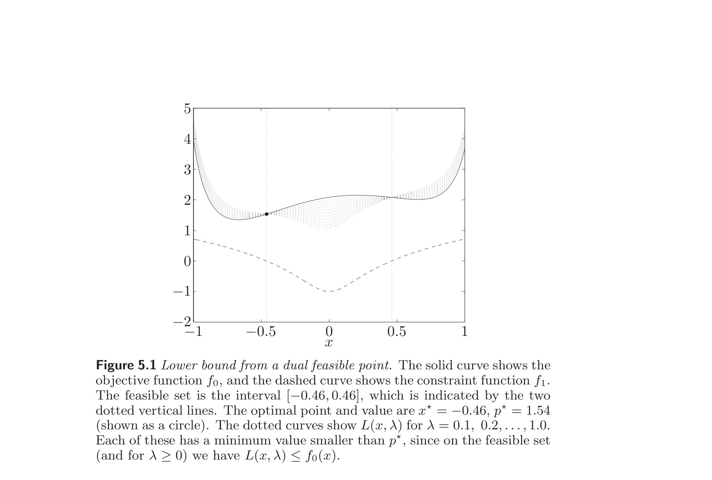
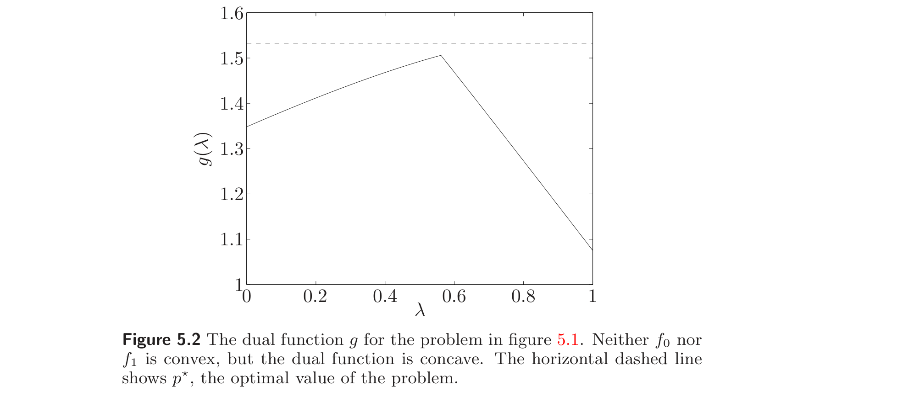
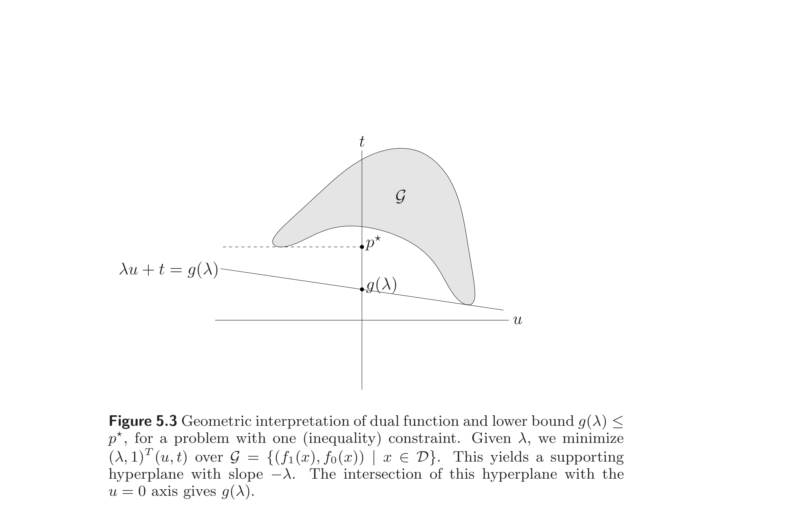
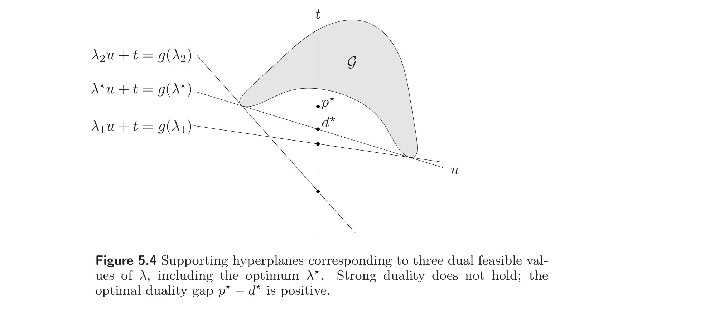
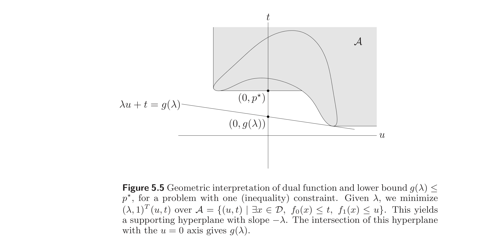
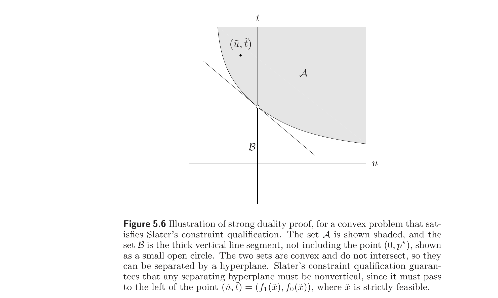
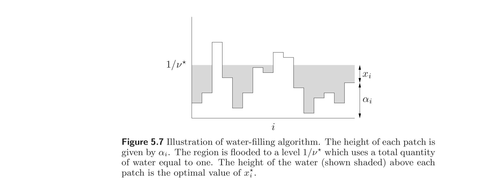
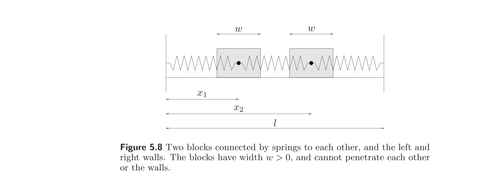
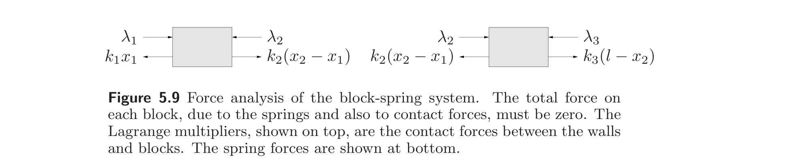
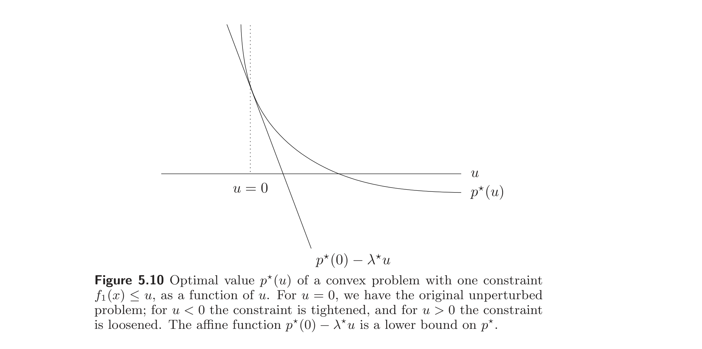

Chapter 5
对偶 / Duality
5.1 The Lagrange dual function
5.1 拉格朗日对偶函数
5.1.1 The Lagrangian
5.1.1 拉格朗日函数
We consider an optimization problem in the standard form (4.1):
$$\begin{array}{ll} \text{minimize} & f_0(x) \\ \text{subject to} & f_i(x) \le 0, \quad i = 1,\ldots,m \\ & h_i(x) = 0, \quad i = 1,\ldots,p, \end{array} \tag{5.1}$$
with variable $x \in \mathbb{R}^n$. We assume its domain $D = \bigcap_{i=0}^m \mathbf{dom}\, f_i \cap \bigcap_{i=1}^p \mathbf{dom}\, h_i$ is nonempty, and denote the optimal value of (5.1) by $p^\star$. We do not assume the problem (5.1) is convex.
我们考虑标准形式 (4.1) 的优化问题：
$$\begin{array}{ll} \text{minimize} & f_0(x) \\ \text{subject to} & f_i(x) \le 0, \quad i = 1,\ldots,m \\ & h_i(x) = 0, \quad i = 1,\ldots,p, \end{array} \tag{5.1}$$
其中变量 $x \in \mathbb{R}^n$。我们假定其定义域 $D = \bigcap_{i=0}^m \mathbf{dom}\, f_i \cap \bigcap_{i=1}^p \mathbf{dom}\, h_i$ 非空，并记 (5.1) 的最优值为 $p^\star$。我们不假定问题 (5.1) 是凸的。
The basic idea in Lagrangian duality is to take the constraints in (5.1) into account by augmenting the objective function with a weighted sum of the constraint functions. We define the Lagrangian $L : \mathbb{R}^n \times \mathbb{R}^m \times \mathbb{R}^p \to \mathbb{R}$ associated with the problem (5.1) as
$$ L(x, \lambda, \nu) = f_0(x) + \sum_{i=1}^m \lambda_i f_i(x) + \sum_{i=1}^p \nu_i h_i(x), $$
with $\mathbf{dom}\, L = D \times \mathbb{R}^m \times \mathbb{R}^p$. We refer to $\lambda_i$ as the Lagrange multiplier associated with the $i$th inequality constraint $f_i(x) \le 0$; similarly we refer to $\nu_i$ as the Lagrange multiplier associated with the $i$th equality constraint $h_i(x) = 0$. The vectors $\lambda$ and $\nu$ are called the dual variables or Lagrange multiplier vectors associated with the problem (5.1).
拉格朗日对偶（Lagrangian duality）的基本思想是：将 (5.1) 中的约束通过用约束函数的加权和增广目标函数来纳入考虑。我们定义与问题 (5.1) 关联的拉格朗日函数 $L : \mathbb{R}^n \times \mathbb{R}^m \times \mathbb{R}^p \to \mathbb{R}$ 为
$$ L(x, \lambda, \nu) = f_0(x) + \sum_{i=1}^m \lambda_i f_i(x) + \sum_{i=1}^p \nu_i h_i(x), $$
其中 $\mathbf{dom}\, L = D \times \mathbb{R}^m \times \mathbb{R}^p$。我们称 $\lambda_i$ 为与第 $i$ 个不等式约束 $f_i(x) \le 0$ 关联的拉格朗日乘子；类似地，称 $\nu_i$ 为与第 $i$ 个等式约束 $h_i(x) = 0$ 关联的拉格朗日乘子。向量 $\lambda$ 和 $\nu$ 称为与问题 (5.1) 关联的对偶变量或拉格朗日乘子向量。
5.1.2 The Lagrange dual function
5.1.2 拉格朗日对偶函数
We define the Lagrange dual function (or just dual function) $g : \mathbb{R}^m \times \mathbb{R}^p \to \mathbb{R}$ as the minimum value of the Lagrangian over $x$: for $\lambda \in \mathbb{R}^m$, $\nu \in \mathbb{R}^p$,
$$ g(\lambda, \nu) = \inf_{x \in D} L(x, \lambda, \nu) = \inf_{x \in D} \left( f_0(x) + \sum_{i=1}^m \lambda_i f_i(x) + \sum_{i=1}^p \nu_i h_i(x) \right). $$
When the Lagrangian is unbounded below in $x$, the dual function takes on the value $-\infty$. Since the dual function is the pointwise infimum of a family of affine functions of $(\lambda, \nu)$, it is concave, even when the problem (5.1) is not convex.
我们定义拉格朗日对偶函数（Lagrange dual function，或简称对偶函数）$g : \mathbb{R}^m \times \mathbb{R}^p \to \mathbb{R}$ 为拉格朗日函数关于 $x$ 的最小值：对 $\lambda \in \mathbb{R}^m$、$\nu \in \mathbb{R}^p$，
$$ g(\lambda, \nu) = \inf_{x \in D} L(x, \lambda, \nu) = \inf_{x \in D} \left( f_0(x) + \sum_{i=1}^m \lambda_i f_i(x) + \sum_{i=1}^p \nu_i h_i(x) \right). $$
当拉格朗日函数关于 $x$ 下方无界时，对偶函数取值 $-\infty$。由于对偶函数是一族 $(\lambda, \nu)$ 的仿射函数的下确界的逐点取值，它是凹的——即使问题 (5.1) 不是凸的亦然。
5.1.3 Lower bounds on optimal value
5.1.3 最优值的下界
The dual function yields lower bounds on the optimal value $p^\star$ of the problem (5.1): For any $\lambda \succeq 0$ and any $\nu$ we have
$$ g(\lambda, \nu) \le p^\star. \tag{5.2}$$
This important property is easily verified. Suppose $\tilde{x}$ is a feasible point for the problem (5.1), i.e., $f_i(\tilde{x}) \le 0$ and $h_i(\tilde{x}) = 0$, and $\lambda \succeq 0$. Then we have
$$ \sum_{i=1}^m \lambda_i f_i(\tilde{x}) + \sum_{i=1}^p \nu_i h_i(\tilde{x}) \le 0, $$
since each term in the first sum is nonpositive, and each term in the second sum is zero, and therefore
$$ L(\tilde{x}, \lambda, \nu) = f_0(\tilde{x}) + \sum_{i=1}^m \lambda_i f_i(\tilde{x}) + \sum_{i=1}^p \nu_i h_i(\tilde{x}) \le f_0(\tilde{x}). $$
Hence
$$ g(\lambda, \nu) = \inf_{x \in D} L(x, \lambda, \nu) \le L(\tilde{x}, \lambda, \nu) \le f_0(\tilde{x}). $$
Since $g(\lambda, \nu) \le f_0(\tilde{x})$ holds for every feasible point $\tilde{x}$, the inequality (5.2) follows.
对偶函数给出问题 (5.1) 最优值 $p^\star$ 的下界：对任意 $\lambda \succeq 0$ 和任意 $\nu$，有
$$ g(\lambda, \nu) \le p^\star. \tag{5.2}$$
这一重要性质容易验证。设 $\tilde{x}$ 是问题 (5.1) 的一个可行点，即 $f_i(\tilde{x}) \le 0$ 且 $h_i(\tilde{x}) = 0$，并设 $\lambda \succeq 0$。则有
$$ \sum_{i=1}^m \lambda_i f_i(\tilde{x}) + \sum_{i=1}^p \nu_i h_i(\tilde{x}) \le 0, $$
因为第一个和中的每一项非正，第二个和中的每一项为零，故
$$ L(\tilde{x}, \lambda, \nu) = f_0(\tilde{x}) + \sum_{i=1}^m \lambda_i f_i(\tilde{x}) + \sum_{i=1}^p \nu_i h_i(\tilde{x}) \le f_0(\tilde{x}). $$
因此
$$ g(\lambda, \nu) = \inf_{x \in D} L(x, \lambda, \nu) \le L(\tilde{x}, \lambda, \nu) \le f_0(\tilde{x}). $$
由于 $g(\lambda, \nu) \le f_0(\tilde{x})$ 对每个可行点 $\tilde{x}$ 成立，不等式 (5.2) 随之得出。
The lower bound (5.2) is illustrated in figure 5.1, for a simple problem with $x \in \mathbb{R}$ and one inequality constraint.
The inequality (5.2) holds, but is vacuous, when $g(\lambda, \nu) = -\infty$. The dual function gives a nontrivial lower bound on $p^\star$ only when $\lambda \succeq 0$ and $(\lambda, \nu) \in \mathbf{dom}\, g$, i.e., $g(\lambda, \nu) > -\infty$. We refer to a pair $(\lambda, \nu)$ with $\lambda \succeq 0$ and $(\lambda, \nu) \in \mathbf{dom}\, g$ as dual feasible, for reasons that will become clear later.
下界 (5.2) 在图 5.1 中以一个 $x \in \mathbb{R}$、含一个不等式约束的简单问题加以说明。
当 $g(\lambda, \nu) = -\infty$ 时，不等式 (5.2) 虽然成立，但并无实质意义。只有当 $\lambda \succeq 0$ 且 $(\lambda, \nu) \in \mathbf{dom}\, g$（即 $g(\lambda, \nu) > -\infty$）时，对偶函数才给出 $p^\star$ 的一个非平凡下界。我们把满足 $\lambda \succeq 0$ 且 $(\lambda, \nu) \in \mathbf{dom}\, g$ 的一对 $(\lambda, \nu)$ 称为对偶可行的，其原因后文将予以阐明。
5.1.4 Linear approximation interpretation
5.1.4 线性近似解释
The Lagrangian and lower bound property can be given a simple interpretation, based on a linear approximation of the indicator functions of the sets $\{0\}$ and $-\mathbb{R}_+$.
We first rewrite the original problem (5.1) as an unconstrained problem,
$$ \text{minimize} \quad f_0(x) + \sum_{i=1}^m I_{-}(f_i(x)) + \sum_{i=1}^p I_0(h_i(x)), \tag{5.3}$$
where $I_{-} : \mathbb{R} \to \mathbb{R}$ is the indicator function for the nonpositive reals,
$$ I_{-}(u) = \begin{cases} 0 & u \le 0 \\ \infty & u > 0, \end{cases} $$
and similarly, $I_0$ is the indicator function of $\{0\}$. In the formulation (5.3), the function $I_{-}(u)$ can be interpreted as expressing our irritation or displeasure associated with a constraint function value $u = f_i(x)$: It is zero if $f_i(x) \le 0$, and infinite if $f_i(x) > 0$. In a similar way, $I_0(u)$ gives our displeasure for an equality constraint value $u = h_i(x)$. We can think of $I_{-}$ as a "brick wall" or "infinitely hard" displeasure function; our displeasure rises from zero to infinite as $f_i(x)$ transitions from nonpositive to positive.
拉格朗日函数及下界性质可以基于对集合 $\{0\}$ 和 $-\mathbb{R}_+$ 的指示函数的线性近似给出一个简单的解释。
我们首先将原问题 (5.1) 改写为一个无约束问题：
$$ \text{minimize} \quad f_0(x) + \sum_{i=1}^m I_{-}(f_i(x)) + \sum_{i=1}^p I_0(h_i(x)), \tag{5.3}$$
其中 $I_{-} : \mathbb{R} \to \mathbb{R}$ 是非正实数的指示函数：
$$ I_{-}(u) = \begin{cases} 0 & u \le 0 \\ \infty & u > 0, \end{cases} $$
类似地，$I_0$ 是 $\{0\}$ 的指示函数。在表述 (5.3) 中，函数 $I_{-}(u)$ 可理解为表达我们与约束函数值 $u = f_i(x)$ 关联的"恼怒"或"不悦"：当 $f_i(x) \le 0$ 时为零，当 $f_i(x) > 0$ 时为无穷。类似地，$I_0(u)$ 给出等式约束值 $u = h_i(x)$ 的不悦。我们可以把 $I_{-}$ 看作一种"砖墙"式或"无限硬"的不悦函数：当 $f_i(x)$ 由非正变为正时，我们的不悦从零跃升至无穷。
Now suppose in the formulation (5.3) we replace the function $I_{-}(u)$ with the linear function $\lambda_i u$, where $\lambda_i \ge 0$, and the function $I_0(u)$ with $\nu_i u$. The objective becomes the Lagrangian function $L(x, \lambda, \nu)$, and the dual function value $g(\lambda, \nu)$ is the optimal value of the problem
$$ \text{minimize} \quad L(x, \lambda, \nu) = f_0(x) + \sum_{i=1}^m \lambda_i f_i(x) + \sum_{i=1}^p \nu_i h_i(x). \tag{5.4}$$
In this formulation, we use a linear or "soft" displeasure function in place of $I_{-}$ and $I_0$. For an inequality constraint, our displeasure is zero when $f_i(x) = 0$, and is positive when $f_i(x) > 0$ (assuming $\lambda_i > 0$); our displeasure grows as the constraint becomes "more violated". Unlike the original formulation, in which any nonpositive value of $f_i(x)$ is acceptable, in the soft formulation we actually derive pleasure from constraints that have margin, i.e., from $f_i(x) < 0$.
Clearly the approximation of the indicator function $I_{-}(u)$ with a linear function $\lambda_i u$ is rather poor. But the linear function is at least an underestimator of the indicator function. Since $\lambda_i u \le I_{-}(u)$ and $\nu_i u \le I_0(u)$ for all $u$, we see immediately that the dual function yields a lower bound on the optimal value of the original problem.
The idea of replacing the "hard" constraints with "soft" versions will come up again when we consider interior-point methods (§11.2.1).
现在设想在表述 (5.3) 中用线性函数 $\lambda_i u$（其中 $\lambda_i \ge 0$）代替 $I_{-}(u)$，并用 $\nu_i u$ 代替 $I_0(u)$。目标函数即变为拉格朗日函数 $L(x, \lambda, \nu)$，而对偶函数值 $g(\lambda, \nu)$ 就是问题
$$ \text{minimize} \quad L(x, \lambda, \nu) = f_0(x) + \sum_{i=1}^m \lambda_i f_i(x) + \sum_{i=1}^p \nu_i h_i(x). \tag{5.4}$$
的最优值。在这一表述中，我们用线性的或"软"的不悦函数代替 $I_{-}$ 和 $I_0$。对不等式约束，当 $f_i(x) = 0$ 时不悦为零，当 $f_i(x) > 0$（假定 $\lambda_i > 0$）时不悦为正；随着约束被"违反得更多"，不悦随之增长。与原表述中 $f_i(x)$ 的任何非正值都可接受不同，在软表述中，对于有余量的约束，即 $f_i(x) < 0$，我们实际上会从中获得"愉悦"。
显然，用线性函数 $\lambda_i u$ 近似指示函数 $I_{-}(u)$ 是相当粗糙的。但线性函数至少是指示函数的一个下估计。由于对所有 $u$ 有 $\lambda_i u \le I_{-}(u)$ 和 $\nu_i u \le I_0(u)$，我们立即可见对偶函数给出原问题最优值的一个下界。
这种用"软"版本代替"硬"约束的思想将在我们讨论内点法时（§11.2.1）再次出现。


5.1.5 Examples
5.1.5 例子
In this section we give some examples for which we can derive an analytical expression for the Lagrange dual function.
本节给出一些可以推导出拉格朗日对偶函数解析表达式的例子。
Least-squares solution of linear equations. We consider the problem
$$\begin{array}{ll} \text{minimize} & x^T x \\ \text{subject to} & Ax = b, \end{array} \tag{5.5}$$
where $A \in \mathbb{R}^{p \times n}$. This problem has no inequality constraints and $p$ (linear) equality constraints. The Lagrangian is $L(x, \nu) = x^T x + \nu^T(Ax - b)$, with domain $\mathbb{R}^n \times \mathbb{R}^p$. The dual function is given by $g(\nu) = \inf_x L(x, \nu)$. Since $L(x, \nu)$ is a convex quadratic function of $x$, we can find the minimizing $x$ from the optimality condition
$$ \nabla_x L(x, \nu) = 2x + A^T \nu = 0, $$
which yields $x = -(1/2)A^T \nu$. Therefore the dual function is
$$ g(\nu) = L(-(1/2)A^T \nu, \nu) = -(1/4)\nu^T A A^T \nu - b^T \nu, $$
which is a concave quadratic function, with domain $\mathbb{R}^p$. The lower bound property (5.2) states that for any $\nu \in \mathbb{R}^p$, we have
$$ -(1/4)\nu^T A A^T \nu - b^T \nu \le \inf\{x^T x \mid Ax = b\}. $$
线性方程组的最小二乘解。 我们考虑问题
$$\begin{array}{ll} \text{minimize} & x^T x \\ \text{subject to} & Ax = b, \end{array} \tag{5.5}$$
其中 $A \in \mathbb{R}^{p \times n}$。此问题没有不等式约束，有 $p$ 个（线性）等式约束。拉格朗日函数为 $L(x, \nu) = x^T x + \nu^T(Ax - b)$，定义域为 $\mathbb{R}^n \times \mathbb{R}^p$。对偶函数为 $g(\nu) = \inf_x L(x, \nu)$。由于 $L(x, \nu)$ 是 $x$ 的凸二次函数，可由最优性条件
$$ \nabla_x L(x, \nu) = 2x + A^T \nu = 0, $$
求得极小化点 $x = -(1/2)A^T \nu$。因此对偶函数为
$$ g(\nu) = L(-(1/2)A^T \nu, \nu) = -(1/4)\nu^T A A^T \nu - b^T \nu, $$
它是一个凹二次函数，定义域为 $\mathbb{R}^p$。下界性质 (5.2) 表明：对任意 $\nu \in \mathbb{R}^p$，有
$$ -(1/4)\nu^T A A^T \nu - b^T \nu \le \inf\{x^T x \mid Ax = b\}. $$
Standard form LP. Consider an LP in standard form,
$$\begin{array}{ll} \text{minimize} & c^T x \\ \text{subject to} & Ax = b \\ & x \succeq 0, \end{array} \tag{5.6}$$
which has inequality constraint functions $f_i(x) = -x_i$, $i = 1, \ldots, n$. To form the Lagrangian we introduce multipliers $\lambda_i$ for the $n$ inequality constraints and multipliers $\nu_i$ for the equality constraints, and obtain
$$ L(x, \lambda, \nu) = c^T x - \sum_{i=1}^n \lambda_i x_i + \nu^T(Ax - b) = -b^T \nu + (c + A^T \nu - \lambda)^T x. $$
The dual function is
$$ g(\lambda, \nu) = \inf_x L(x, \lambda, \nu) = -b^T \nu + \inf_x (c + A^T \nu - \lambda)^T x, $$
which is easily determined analytically, since a linear function is bounded below only when it is identically zero. Thus, $g(\lambda, \nu) = -\infty$ except when $c + A^T \nu - \lambda = 0$, in which case it is $-b^T \nu$:
$$ g(\lambda, \nu) = \begin{cases} -b^T \nu & A^T \nu - \lambda + c = 0 \\ -\infty & \text{otherwise.} \end{cases} $$
Note that the dual function $g$ is finite only on a proper affine subset of $\mathbb{R}^m \times \mathbb{R}^p$. We will see that this is a common occurrence.
The lower bound property (5.2) is nontrivial only when $\lambda$ and $\nu$ satisfy $\lambda \succeq 0$ and $A^T \nu - \lambda + c = 0$. When this occurs, $-b^T \nu$ is a lower bound on the optimal value of the LP (5.6).
标准形式 LP。 考虑标准形式的线性规划：
$$\begin{array}{ll} \text{minimize} & c^T x \\ \text{subject to} & Ax = b \\ & x \succeq 0, \end{array} \tag{5.6}$$
其不等式约束函数为 $f_i(x) = -x_i$，$i = 1, \ldots, n$。为构造拉格朗日函数，我们为 $n$ 个不等式约束引入乘子 $\lambda_i$，为等式约束引入乘子 $\nu_i$，得到
$$ L(x, \lambda, \nu) = c^T x - \sum_{i=1}^n \lambda_i x_i + \nu^T(Ax - b) = -b^T \nu + (c + A^T \nu - \lambda)^T x. $$
对偶函数为
$$ g(\lambda, \nu) = \inf_x L(x, \lambda, \nu) = -b^T \nu + \inf_x (c + A^T \nu - \lambda)^T x, $$
它易于解析确定，因为一个线性函数仅当它恒为零时才下方有界。因此，除 $c + A^T \nu - \lambda = 0$ 时取值 $-b^T \nu$ 外，$g(\lambda, \nu) = -\infty$：
$$ g(\lambda, \nu) = \begin{cases} -b^T \nu & A^T \nu - \lambda + c = 0 \\ -\infty & \text{否则.} \end{cases} $$
注意对偶函数 $g$ 仅在 $\mathbb{R}^m \times \mathbb{R}^p$ 的一个真仿射子集上有限。我们将会看到，这是一种常见现象。
仅当 $\lambda$、$\nu$ 满足 $\lambda \succeq 0$ 且 $A^T \nu - \lambda + c = 0$ 时，下界性质 (5.2) 才是非平凡的。当此条件成立时，$-b^T \nu$ 是 LP (5.6) 最优值的下界。
Two-way partitioning problem. We consider the (nonconvex) problem
$$\begin{array}{ll} \text{minimize} & x^T W x \\ \text{subject to} & x_i^2 = 1, \quad i = 1, \ldots, n, \end{array} \tag{5.7}$$
where $W \in \mathbf{S}^n$. The constraints restrict the values of $x_i$ to $1$ or $-1$, so the problem is equivalent to finding the vector with components $\pm 1$ that minimizes $x^T W x$. The feasible set here is finite (it contains $2^n$ points) so this problem can in principle be solved by simply checking the objective value of each feasible point. Since the number of feasible points grows exponentially, however, this is possible only for small problems (say, with $n \le 30$). In general (and for $n$ larger than, say, 50) the problem (5.7) is very difficult to solve.
二分划分问题。 我们考虑（非凸）问题
$$\begin{array}{ll} \text{minimize} & x^T W x \\ \text{subject to} & x_i^2 = 1, \quad i = 1, \ldots, n, \end{array} \tag{5.7}$$
其中 $W \in \mathbf{S}^n$。约束将 $x_i$ 的取值限制为 $1$ 或 $-1$，故问题等价于寻找使 $x^T W x$ 最小的、分量取 $\pm 1$ 的向量。此处的可行集是有限的（含 $2^n$ 个点），故原则上可通过逐一检查每个可行点的目标值来求解。然而由于可行点数指数增长，这仅对小问题（例如 $n \le 30$）可行。一般而言（且 $n$ 大于例如 50 时），问题 (5.7) 非常难以求解。
We can interpret the problem (5.7) as a two-way partitioning problem on a set of $n$ elements, say, $\{1, \ldots, n\}$: A feasible $x$ corresponds to the partition
$$ \{1, \ldots, n\} = \{i \mid x_i = -1\} \cup \{i \mid x_i = 1\}. $$
The matrix coefficient $W_{ij}$ can be interpreted as the cost of having the elements $i$ and $j$ in the same partition, and $-W_{ij}$ is the cost of having $i$ and $j$ in different partitions. The objective in (5.7) is the total cost, over all pairs of elements, and the problem (5.7) is to find the partition with least total cost.
We now derive the dual function for this problem. The Lagrangian is
$$ L(x, \nu) = x^T W x + \sum_{i=1}^n \nu_i(x_i^2 - 1) = x^T(W + \mathbf{diag}(\nu))x - \mathbf{1}^T \nu. $$
We obtain the Lagrange dual function by minimizing over $x$:
$$ g(\nu) = \inf_x x^T(W + \mathbf{diag}(\nu))x - \mathbf{1}^T \nu = \begin{cases} -\mathbf{1}^T \nu & W + \mathbf{diag}(\nu) \succeq 0 \\ -\infty & \text{otherwise,} \end{cases} $$
where we use the fact that the infimum of a quadratic form is either zero (if the form is positive semidefinite) or $-\infty$ (if the form is not positive semidefinite).
我们可以把问题 (5.7) 解释为 $n$ 个元素（例如 $\{1, \ldots, n\}$）集合上的一个二分划分问题：一个可行的 $x$ 对应划分
$$ \{1, \ldots, n\} = \{i \mid x_i = -1\} \cup \{i \mid x_i = 1\}. $$
矩阵系数 $W_{ij}$ 可解释为元素 $i$ 与 $j$ 处于同一划分的成本，$-W_{ij}$ 则为 $i$ 与 $j$ 处于不同划分的成本。(5.7) 的目标是所有元素对上的总成本，问题 (5.7) 即求总成本最小的划分。
我们现在推导此问题的对偶函数。拉格朗日函数为
$$ L(x, \nu) = x^T W x + \sum_{i=1}^n \nu_i(x_i^2 - 1) = x^T(W + \mathbf{diag}(\nu))x - \mathbf{1}^T \nu. $$
对 $x$ 取极小即得拉格朗日对偶函数：
$$ g(\nu) = \inf_x x^T(W + \mathbf{diag}(\nu))x - \mathbf{1}^T \nu = \begin{cases} -\mathbf{1}^T \nu & W + \mathbf{diag}(\nu) \succeq 0 \\ -\infty & \text{否则,} \end{cases} $$
其中我们利用了下述事实：二次型的下确界为零（若该型半正定）或 $-\infty$（若非半正定）。
This dual function provides lower bounds on the optimal value of the difficult problem (5.7). For example, we can take the specific value of the dual variable
$$ \nu = -\lambda_{\min}(W)\mathbf{1}, $$
which is dual feasible, since
$$ W + \mathbf{diag}(\nu) = W - \lambda_{\min}(W)I \succeq 0. $$
This yields the bound on the optimal value $p^\star$
$$ p^\star \ge -\mathbf{1}^T \nu = n\lambda_{\min}(W). \tag{5.8}$$
Remark 5.1 This lower bound on $p^\star$ can also be obtained without using the Lagrange dual function. First, we replace the constraints $x_1^2 = 1, \ldots, x_n^2 = 1$ with $\sum_{i=1}^n x_i^2 = n$, to obtain the modified problem
$$\begin{array}{ll} \text{minimize} & x^T W x \\ \text{subject to} & \sum_{i=1}^n x_i^2 = n. \end{array} \tag{5.9}$$
The constraints of the original problem (5.7) imply the constraint here, so the optimal value of the problem (5.9) is a lower bound on $p^\star$, the optimal value of (5.7). But the modified problem (5.9) is easily solved as an eigenvalue problem, with optimal value $n\lambda_{\min}(W)$.
此对偶函数给出困难问题 (5.7) 最优值的下界。例如，可取对偶变量的特定值
$$ \nu = -\lambda_{\min}(W)\mathbf{1}, $$
它是对偶可行的，因为
$$ W + \mathbf{diag}(\nu) = W - \lambda_{\min}(W)I \succeq 0. $$
由此得到最优值 $p^\star$ 的界
$$ p^\star \ge -\mathbf{1}^T \nu = n\lambda_{\min}(W). \tag{5.8}$$
注 5.1 $p^\star$ 的这一下界也可不借助拉格朗日对偶函数得到。首先，把约束 $x_1^2 = 1, \ldots, x_n^2 = 1$ 替换为 $\sum_{i=1}^n x_i^2 = n$，得到修改后的问题
$$\begin{array}{ll} \text{minimize} & x^T W x \\ \text{subject to} & \sum_{i=1}^n x_i^2 = n. \end{array} \tag{5.9}$$
原问题 (5.7) 的约束蕴含此处的约束，故问题 (5.9) 的最优值是 (5.7) 最优值 $p^\star$ 的下界。而修改后的问题 (5.9) 作为一个特征值问题易于求解，其最优值为 $n\lambda_{\min}(W)$。
5.1.6 The Lagrange dual function and conjugate functions
5.1.6 拉格朗日对偶函数与共轭函数
Recall from §3.3 that the conjugate $f^*$ of a function $f : \mathbb{R}^n \to \mathbb{R}$ is given by
$$ f^*(y) = \sup_{x \in \mathbf{dom}\, f} (y^T x - f(x)). $$
The conjugate function and Lagrange dual function are closely related. To see one simple connection, consider the problem
$$\begin{array}{ll} \text{minimize} & f(x) \\ \text{subject to} & x = 0 \end{array}$$
(which is not very interesting, and solvable by inspection). This problem has Lagrangian $L(x, \nu) = f(x) + \nu^T x$, and dual function
$$ g(\nu) = \inf_x (f(x) + \nu^T x) = -\sup_x ((-\nu)^T x - f(x)) = -f^*(-\nu). $$
More generally (and more usefully), consider an optimization problem with linear inequality and equality constraints,
$$\begin{array}{ll} \text{minimize} & f_0(x) \\ \text{subject to} & Ax \preceq b \\ & Cx = d. \end{array} \tag{5.10}$$
Using the conjugate of $f_0$ we can write the dual function for the problem (5.10) as
$$ \begin{aligned} g(\lambda, \nu) &= \inf_x (f_0(x) + \lambda^T(Ax - b) + \nu^T(Cx - d)) \\ &= -b^T \lambda - d^T \nu + \inf_x (f_0(x) + (A^T \lambda + C^T \nu)^T x) \\ &= -b^T \lambda - d^T \nu - f_0^*(-A^T \lambda - C^T \nu). \end{aligned} \tag{5.11}$$
The domain of $g$ follows from the domain of $f_0^*$:
$$ \mathbf{dom}\, g = \{(\lambda, \nu) \mid -A^T \lambda - C^T \nu \in \mathbf{dom}\, f_0^*\}. $$
Let us illustrate this with a few examples.
回忆 §3.3：函数 $f : \mathbb{R}^n \to \mathbb{R}$ 的共轭 $f^*$ 为
$$ f^*(y) = \sup_{x \in \mathbf{dom}\, f} (y^T x - f(x)). $$
共轭函数与拉格朗日对偶函数密切相关。为看出一个简单联系，考虑问题
$$\begin{array}{ll} \text{minimize} & f(x) \\ \text{subject to} & x = 0 \end{array}$$
（此问题意义不大，可直接看出其解）。此问题的拉格朗日函数为 $L(x, \nu) = f(x) + \nu^T x$，对偶函数为
$$ g(\nu) = \inf_x (f(x) + \nu^T x) = -\sup_x ((-\nu)^T x - f(x)) = -f^*(-\nu). $$
更一般地（也更有用地），考虑具有线性不等式与等式约束的优化问题
$$\begin{array}{ll} \text{minimize} & f_0(x) \\ \text{subject to} & Ax \preceq b \\ & Cx = d. \end{array} \tag{5.10}$$
利用 $f_0$ 的共轭，可把问题 (5.10) 的对偶函数写为
$$ \begin{aligned} g(\lambda, \nu) &= \inf_x (f_0(x) + \lambda^T(Ax - b) + \nu^T(Cx - d)) \\ &= -b^T \lambda - d^T \nu + \inf_x (f_0(x) + (A^T \lambda + C^T \nu)^T x) \\ &= -b^T \lambda - d^T \nu - f_0^*(-A^T \lambda - C^T \nu). \end{aligned} \tag{5.11}$$
$g$ 的定义域由 $f_0^*$ 的定义域决定：
$$ \mathbf{dom}\, g = \{(\lambda, \nu) \mid -A^T \lambda - C^T \nu \in \mathbf{dom}\, f_0^*\}. $$
下面用几个例子加以说明。
Equality constrained norm minimization. Consider the problem
$$\begin{array}{ll} \text{minimize} & \|x\| \\ \text{subject to} & Ax = b, \end{array} \tag{5.12}$$
where $\|\cdot\|$ is any norm. Recall (from example 3.26 on page 93) that the conjugate of $f_0 = \|\cdot\|$ is given by
$$ f_0^*(y) = \begin{cases} 0 & \|y\|_* \le 1 \\ \infty & \text{otherwise,} \end{cases} $$
the indicator function of the dual norm unit ball.
Using the result (5.11) above, the dual function for the problem (5.12) is given by
$$ g(\nu) = -b^T \nu - f_0^*(-A^T \nu) = \begin{cases} -b^T \nu & \|A^T \nu\|_* \le 1 \\ -\infty & \text{otherwise.} \end{cases} $$
等式约束范数极小化。 考虑问题
$$\begin{array}{ll} \text{minimize} & \|x\| \\ \text{subject to} & Ax = b, \end{array} \tag{5.12}$$
其中 $\|\cdot\|$ 为任意范数。回忆（例 3.26，第 93 页）$f_0 = \|\cdot\|$ 的共轭为
$$ f_0^*(y) = \begin{cases} 0 & \|y\|_* \le 1 \\ \infty & \text{否则,} \end{cases} $$
即对偶范数单位球的指示函数。
利用上述结果 (5.11)，问题 (5.12) 的对偶函数为
$$ g(\nu) = -b^T \nu - f_0^*(-A^T \nu) = \begin{cases} -b^T \nu & \|A^T \nu\|_* \le 1 \\ -\infty & \text{否则.} \end{cases} $$
Entropy maximization. Consider the entropy maximization problem
$$\begin{array}{ll} \text{minimize} & f_0(x) = \sum_{i=1}^n x_i \log x_i \\ \text{subject to} & Ax \preceq b \\ & \mathbf{1}^T x = 1 \end{array} \tag{5.13}$$
where $\mathbf{dom}\, f_0 = \mathbb{R}^n_{++}$. The conjugate of the negative entropy function $u \log u$, with scalar variable $u$, is $e^{v-1}$ (see example 3.21 on page 91). Since $f_0$ is a sum of negative entropy functions of different variables, we conclude that its conjugate is
$$ f_0^*(y) = \sum_{i=1}^n e^{y_i - 1}, $$
with $\mathbf{dom}\, f_0^* = \mathbb{R}^n$. Using the result (5.11) above, the dual function of (5.13) is given by
$$ g(\lambda, \nu) = -b^T \lambda - \nu - \sum_{i=1}^n e^{-a_i^T \lambda - \nu - 1} = -b^T \lambda - \nu - e^{-\nu - 1} \sum_{i=1}^n e^{-a_i^T \lambda} $$
where $a_i$ is the $i$th column of $A$.
熵最大化。 考虑熵最大化问题
$$\begin{array}{ll} \text{minimize} & f_0(x) = \sum_{i=1}^n x_i \log x_i \\ \text{subject to} & Ax \preceq b \\ & \mathbf{1}^T x = 1 \end{array} \tag{5.13}$$
其中 $\mathbf{dom}\, f_0 = \mathbb{R}^n_{++}$。标量变量 $u$ 的负熵函数 $u \log u$ 的共轭为 $e^{v-1}$（见例 3.21，第 91 页）。由于 $f_0$ 是不同变量的负熵函数之和，其共轭为
$$ f_0^*(y) = \sum_{i=1}^n e^{y_i - 1}, $$
其中 $\mathbf{dom}\, f_0^* = \mathbb{R}^n$。利用上述结果 (5.11)，(5.13) 的对偶函数为
$$ g(\lambda, \nu) = -b^T \lambda - \nu - \sum_{i=1}^n e^{-a_i^T \lambda - \nu - 1} = -b^T \lambda - \nu - e^{-\nu - 1} \sum_{i=1}^n e^{-a_i^T \lambda} $$
其中 $a_i$ 是 $A$ 的第 $i$ 列。
Minimum volume covering ellipsoid. Consider the problem with variable $X \in \mathbf{S}^n$,
$$\begin{array}{ll} \text{minimize} & f_0(X) = \log \det X^{-1} \\ \text{subject to} & a_i^T X a_i \le 1, \quad i = 1, \ldots, m, \end{array} \tag{5.14}$$
where $\mathbf{dom}\, f_0 = \mathbf{S}^n_{++}$. The problem (5.14) has a simple geometric interpretation. With each $X \in \mathbf{S}^n_{++}$ we associate the ellipsoid, centered at the origin,
$$ \mathcal{E}_X = \{z \mid z^T X z \le 1\}. $$
The volume of this ellipsoid is proportional to $(\det X^{-1})^{1/2}$, so the objective of (5.14) is, except for a constant and a factor of two, the logarithm of the volume of $\mathcal{E}_X$. The constraints of the problem (5.14) are that $a_i \in \mathcal{E}_X$. Thus the problem (5.14) is to determine the minimum volume ellipsoid, centered at the origin, that includes the points $a_1, \ldots, a_m$.
The inequality constraints in problem (5.14) are affine; they can be expressed as
$$ \mathbf{tr}((a_i a_i^T)X) \le 1. $$
In example 3.23 (page 92) we found that the conjugate of $f_0$ is
$$ f_0^*(Y) = \log \det(-Y)^{-1} - n, $$
with $\mathbf{dom}\, f_0^* = -\mathbf{S}^n_{++}$. Applying the result (5.11) above, the dual function for the problem (5.14) is given by
$$ g(\lambda) = \begin{cases} \log \det\left(\sum_{i=1}^m \lambda_i a_i a_i^T\right) - \mathbf{1}^T \lambda + n & \sum_{i=1}^m \lambda_i a_i a_i^T \succ 0 \\ -\infty & \text{otherwise.} \end{cases} \tag{5.15}$$
Thus, for any $\lambda \succeq 0$ with $\sum_{i=1}^m \lambda_i a_i a_i^T \succ 0$, the number
$$ \log \det\left(\sum_{i=1}^m \lambda_i a_i a_i^T\right) - \mathbf{1}^T \lambda + n $$
is a lower bound on the optimal value of the problem (5.14).
最小体积覆盖椭球。 考虑以 $X \in \mathbf{S}^n$ 为变量的问题
$$\begin{array}{ll} \text{minimize} & f_0(X) = \log \det X^{-1} \\ \text{subject to} & a_i^T X a_i \le 1, \quad i = 1, \ldots, m, \end{array} \tag{5.14}$$
其中 $\mathbf{dom}\, f_0 = \mathbf{S}^n_{++}$。问题 (5.14) 有一个简单的几何解释。对每个 $X \in \mathbf{S}^n_{++}$，我们关联一个以原点为中心的椭球
$$ \mathcal{E}_X = \{z \mid z^T X z \le 1\}. $$
此椭球的体积正比于 $(\det X^{-1})^{1/2}$，故 (5.14) 的目标除一个常数和一个因子 2 外即为 $\mathcal{E}_X$ 体积的对数。问题 (5.14) 的约束为 $a_i \in \mathcal{E}_X$。因此问题 (5.14) 是确定以原点为中心、包含点 $a_1, \ldots, a_m$ 的最小体积椭球。
问题 (5.14) 中的不等式约束是仿射的；它们可表示为
$$ \mathbf{tr}((a_i a_i^T)X) \le 1. $$
在例 3.23（第 92 页）中我们求得 $f_0$ 的共轭为
$$ f_0^*(Y) = \log \det(-Y)^{-1} - n, $$
其中 $\mathbf{dom}\, f_0^* = -\mathbf{S}^n_{++}$。应用上述结果 (5.11)，问题 (5.14) 的对偶函数为
$$ g(\lambda) = \begin{cases} \log \det\left(\sum_{i=1}^m \lambda_i a_i a_i^T\right) - \mathbf{1}^T \lambda + n & \sum_{i=1}^m \lambda_i a_i a_i^T \succ 0 \\ -\infty & \text{否则.} \end{cases} \tag{5.15}$$
因此，对任意满足 $\sum_{i=1}^m \lambda_i a_i a_i^T \succ 0$ 的 $\lambda \succeq 0$，数
$$ \log \det\left(\sum_{i=1}^m \lambda_i a_i a_i^T\right) - \mathbf{1}^T \lambda + n $$
是问题 (5.14) 最优值的下界。
5.2 The Lagrange dual problem
5.2 拉格朗日对偶问题
For each pair $(\lambda, \nu)$ with $\lambda \succeq 0$, the Lagrange dual function gives us a lower bound on the optimal value $p^\star$ of the optimization problem (5.1). Thus we have a lower bound that depends on some parameters $\lambda, \nu$. A natural question is: What is the best lower bound that can be obtained from the Lagrange dual function?
This leads to the optimization problem
$$\begin{array}{ll} \text{maximize} & g(\lambda, \nu) \\ \text{subject to} & \lambda \succeq 0. \end{array} \tag{5.16}$$
This problem is called the Lagrange dual problem associated with the problem (5.1). In this context the original problem (5.1) is sometimes called the primal problem. The term dual feasible, to describe a pair $(\lambda, \nu)$ with $\lambda \succeq 0$ and $g(\lambda, \nu) > -\infty$, now makes sense. It means, as the name implies, that $(\lambda, \nu)$ is feasible for the dual problem (5.16). We refer to $(\lambda^\star, \nu^\star)$ as dual optimal or optimal Lagrange multipliers if they are optimal for the problem (5.16).
The Lagrange dual problem (5.16) is a convex optimization problem, since the objective to be maximized is concave and the constraint is convex. This is the case whether or not the primal problem (5.1) is convex.
对每个满足 $\lambda \succeq 0$ 的对 $(\lambda, \nu)$，拉格朗日对偶函数给出优化问题 (5.1) 最优值 $p^\star$ 的一个下界。于是我们有一个依赖于某些参数 $\lambda, \nu$ 的下界。一个自然的问题是：从拉格朗日对偶函数能得到的最好下界是什么？
这引出优化问题
$$\begin{array}{ll} \text{maximize} & g(\lambda, \nu) \\ \text{subject to} & \lambda \succeq 0. \end{array} \tag{5.16}$$
此问题称为与问题 (5.1) 关联的拉格朗日对偶问题。在此语境下，原问题 (5.1) 有时称为原始问题（primal problem）。"对偶可行"一词用来描述满足 $\lambda \succeq 0$ 且 $g(\lambda, \nu) > -\infty$ 的对 $(\lambda, \nu)$，至此便有了意义：顾名思义，它表示 $(\lambda, \nu)$ 对对偶问题 (5.16) 是可行的。若 $(\lambda^\star, \nu^\star)$ 是问题 (5.16) 的最优解，则称之为对偶最优的或最优拉格朗日乘子。
拉格朗日对偶问题 (5.16) 是一个凸优化问题，因为待最大化的目标是凹的，约束是凸的。不论原始问题 (5.1) 是否为凸，皆是如此。
5.2.1 Making dual constraints explicit
5.2.1 显式化对偶约束
The examples above show that it is not uncommon for the domain of the dual function,
$$ \mathbf{dom}\, g = \{(\lambda, \nu) \mid g(\lambda, \nu) > -\infty\}, $$
to have dimension smaller than $m + p$. In many cases we can identify the affine hull of $\mathbf{dom}\, g$, and describe it as a set of linear equality constraints. Roughly speaking, this means we can identify the equality constraints that are "hidden" or "implicit" in the objective $g$ of the dual problem (5.16). In this case we can form an equivalent problem, in which these equality constraints are given explicitly as constraints. The following examples demonstrate this idea.
上面的例子表明，对偶函数的定义域
$$ \mathbf{dom}\, g = \{(\lambda, \nu) \mid g(\lambda, \nu) > -\infty\} $$
的维数小于 $m + p$ 并不罕见。在很多情形下，我们能识别 $\mathbf{dom}\, g$ 的仿射包，并将其描述为一组线性等式约束。粗略地说，这意味着我们能识别"隐藏"或"隐含"在对偶问题 (5.16) 目标 $g$ 中的等式约束。此时可构造一个等价问题，把这些等式约束作为显式约束给出。下面的例子演示了这一思想。
Lagrange dual of standard form LP. On page 219 we found that the Lagrange dual function for the standard form LP
$$\begin{array}{ll} \text{minimize} & c^T x \\ \text{subject to} & Ax = b \\ & x \succeq 0 \end{array} \tag{5.17}$$
is given by
$$ g(\lambda, \nu) = \begin{cases} -b^T \nu & A^T \nu - \lambda + c = 0 \\ -\infty & \text{otherwise.} \end{cases} $$
Strictly speaking, the Lagrange dual problem of the standard form LP is to maximize this dual function $g$ subject to $\lambda \succeq 0$, i.e.,
$$\begin{array}{ll} \text{maximize} & g(\lambda, \nu) = \begin{cases} -b^T \nu & A^T \nu - \lambda + c = 0 \\ -\infty & \text{otherwise} \end{cases} \\ \text{subject to} & \lambda \succeq 0. \end{array} \tag{5.18}$$
Here $g$ is finite only when $A^T \nu - \lambda + c = 0$. We can form an equivalent problem by making these equality constraints explicit:
$$\begin{array}{ll} \text{maximize} & -b^T \nu \\ \text{subject to} & A^T \nu - \lambda + c = 0 \\ & \lambda \succeq 0. \end{array} \tag{5.19}$$
This problem, in turn, can be expressed as
$$\begin{array}{ll} \text{maximize} & -b^T \nu \\ \text{subject to} & A^T \nu + c \succeq 0, \end{array} \tag{5.20}$$
which is an LP in inequality form.
Note the subtle distinctions between these three problems. The Lagrange dual of the standard form LP (5.17) is the problem (5.18), which is equivalent to (but not the same as) the problems (5.19) and (5.20). With some abuse of terminology, we refer to the problem (5.19) or the problem (5.20) as the Lagrange dual of the standard form LP (5.17).
标准形式 LP 的拉格朗日对偶。 在第 219 页我们求得标准形式 LP
$$\begin{array}{ll} \text{minimize} & c^T x \\ \text{subject to} & Ax = b \\ & x \succeq 0 \end{array} \tag{5.17}$$
的拉格朗日对偶函数为
$$ g(\lambda, \nu) = \begin{cases} -b^T \nu & A^T \nu - \lambda + c = 0 \\ -\infty & \text{否则.} \end{cases} $$
严格地说，标准形式 LP 的拉格朗日对偶问题是在 $\lambda \succeq 0$ 下最大化此对偶函数 $g$，即
$$\begin{array}{ll} \text{maximize} & g(\lambda, \nu) = \begin{cases} -b^T \nu & A^T \nu - \lambda + c = 0 \\ -\infty & \text{否则} \end{cases} \\ \text{subject to} & \lambda \succeq 0. \end{array} \tag{5.18}$$
此处 $g$ 仅在 $A^T \nu - \lambda + c = 0$ 时有限。我们可以把这些等式约束显式化，构成一个等价问题：
$$\begin{array}{ll} \text{maximize} & -b^T \nu \\ \text{subject to} & A^T \nu - \lambda + c = 0 \\ & \lambda \succeq 0. \end{array} \tag{5.19}$$
此问题又可表示为
$$\begin{array}{ll} \text{maximize} & -b^T \nu \\ \text{subject to} & A^T \nu + c \succeq 0, \end{array} \tag{5.20}$$
这是一个不等式形式的 LP。
注意这三个问题之间的细微区别。标准形式 LP (5.17) 的拉格朗日对偶是问题 (5.18)，它等价于（但不同于）问题 (5.19) 和 (5.20)。在术语略有滥用的情况下，我们把问题 (5.19) 或问题 (5.20) 称为标准形式 LP (5.17) 的拉格朗日对偶。
Lagrange dual of inequality form LP. In a similar way we can find the Lagrange dual problem of a linear program in inequality form
$$\begin{array}{ll} \text{minimize} & c^T x \\ \text{subject to} & Ax \preceq b. \end{array} \tag{5.21}$$
The Lagrangian is
$$ L(x, \lambda) = c^T x + \lambda^T(Ax - b) = -b^T \lambda + (A^T \lambda + c)^T x, $$
so the dual function is
$$ g(\lambda) = \inf_x L(x, \lambda) = -b^T \lambda + \inf_x (A^T \lambda + c)^T x. $$
The infimum of a linear function is $-\infty$, except in the special case when it is identically zero, so the dual function is
$$ g(\lambda) = \begin{cases} -b^T \lambda & A^T \lambda + c = 0 \\ -\infty & \text{otherwise.} \end{cases} $$
The dual variable $\lambda$ is dual feasible if $\lambda \succeq 0$ and $A^T \lambda + c = 0$.
The Lagrange dual of the LP (5.21) is to maximize $g$ over all $\lambda \succeq 0$. Again we can reformulate this by explicitly including the dual feasibility conditions as constraints, as in
$$\begin{array}{ll} \text{maximize} & -b^T \lambda \\ \text{subject to} & A^T \lambda + c = 0 \\ & \lambda \succeq 0, \end{array} \tag{5.22}$$
which is an LP in standard form.
Note the interesting symmetry between the standard and inequality form LPs and their duals: The dual of a standard form LP is an LP with only inequality constraints, and vice versa. One can also verify that the Lagrange dual of (5.22) is (equivalent to) the primal problem (5.21).
不等式形式 LP 的拉格朗日对偶。 类似地，可求出不等式形式线性规划
$$\begin{array}{ll} \text{minimize} & c^T x \\ \text{subject to} & Ax \preceq b. \end{array} \tag{5.21}$$
的拉格朗日对偶问题。拉格朗日函数为
$$ L(x, \lambda) = c^T x + \lambda^T(Ax - b) = -b^T \lambda + (A^T \lambda + c)^T x, $$
故对偶函数为
$$ g(\lambda) = \inf_x L(x, \lambda) = -b^T \lambda + \inf_x (A^T \lambda + c)^T x. $$
线性函数的下确界为 $-\infty$，除非它恒为零这一特殊情形，故对偶函数为
$$ g(\lambda) = \begin{cases} -b^T \lambda & A^T \lambda + c = 0 \\ -\infty & \text{否则.} \end{cases} $$
对偶变量 $\lambda$ 在 $\lambda \succeq 0$ 且 $A^T \lambda + c = 0$ 时为对偶可行。
LP (5.21) 的拉格朗日对偶是在所有 $\lambda \succeq 0$ 上最大化 $g$。同样可通过对偶可行条件显式地作为约束来改写：
$$\begin{array}{ll} \text{maximize} & -b^T \lambda \\ \text{subject to} & A^T \lambda + c = 0 \\ & \lambda \succeq 0, \end{array} \tag{5.22}$$
这是一个标准形式的 LP。
注意标准形式与不等式形式 LP 及其对偶之间的有趣对称性：标准形式 LP 的对偶是一个仅有不等式约束的 LP，反之亦然。亦可验证 (5.22) 的拉格朗日对偶（等价于）原始问题 (5.21)。
5.2.2 Weak duality
5.2.2 弱对偶
The optimal value of the Lagrange dual problem, which we denote $d^\star$, is, by definition, the best lower bound on $p^\star$ that can be obtained from the Lagrange dual function. In particular, we have the simple but important inequality
$$ d^\star \le p^\star, \tag{5.23}$$
which holds even if the original problem is not convex. This property is called weak duality.
The weak duality inequality (5.23) holds when $d^\star$ and $p^\star$ are infinite. For example, if the primal problem is unbounded below, so that $p^\star = -\infty$, we must have $d^\star = -\infty$, i.e., the Lagrange dual problem is infeasible. Conversely, if the dual problem is unbounded above, so that $d^\star = \infty$, we must have $p^\star = \infty$, i.e., the primal problem is infeasible.
拉格朗日对偶问题的最优值记为 $d^\star$，由定义，它是从拉格朗日对偶函数能得到的 $p^\star$ 的最佳下界。特别地，我们有简单但重要的不等式
$$ d^\star \le p^\star, \tag{5.23}$$
即使原问题不是凸的，它也成立。此性质称为弱对偶（weak duality）。
当 $d^\star$ 与 $p^\star$ 为无穷时，弱对偶不等式 (5.23) 仍然成立。例如，若原始问题下方无界，即 $p^\star = -\infty$，则必有 $d^\star = -\infty$，即拉格朗日对偶问题不可行。反之，若对偶问题上方无界，即 $d^\star = \infty$，则必有 $p^\star = \infty$，即原始问题不可行。
We refer to the difference $p^\star - d^\star$ as the optimal duality gap of the original problem, since it gives the gap between the optimal value of the primal problem and the best (i.e., greatest) lower bound on it that can be obtained from the Lagrange dual function. The optimal duality gap is always nonnegative.
The bound (5.23) can sometimes be used to find a lower bound on the optimal value of a problem that is difficult to solve, since the dual problem is always convex, and in many cases can be solved efficiently, to find $d^\star$. As an example, consider the two-way partitioning problem (5.7) described on page 219. The dual problem is an SDP,
$$\begin{array}{ll} \text{maximize} & -\mathbf{1}^T \nu \\ \text{subject to} & W + \mathbf{diag}(\nu) \succeq 0, \end{array}$$
with variable $\nu \in \mathbb{R}^n$. This problem can be solved efficiently, even for relatively large values of $n$, such as $n = 1000$. Its optimal value is a lower bound on the optimal value of the two-way partitioning problem, and is always at least as good as the lower bound (5.8) based on $\lambda_{\min}(W)$.
我们把差 $p^\star - d^\star$ 称为原问题的最优对偶间隙（optimal duality gap），因为它给出了原始问题最优值与从拉格朗日对偶函数能得到的最佳（即最大）下界之间的间隙。最优对偶间隙总是非负的。
界 (5.23) 有时可用于求一个难以求解问题最优值的下界，因为对偶问题总是凸的，且在许多情形下可高效求解以得到 $d^\star$。例如，考虑第 219 页描述的二分划分问题 (5.7)。其对偶问题是一个 SDP：
$$\begin{array}{ll} \text{maximize} & -\mathbf{1}^T \nu \\ \text{subject to} & W + \mathbf{diag}(\nu) \succeq 0, \end{array}$$
变量为 $\nu \in \mathbb{R}^n$。即使对相对较大的 $n$（如 $n = 1000$），此问题也可高效求解。其最优值是二分划分问题最优值的下界，且总是至少与基于 $\lambda_{\min}(W)$ 的下界 (5.8) 一样好。
5.2.3 Strong duality and Slater's constraint qualification
5.2.3 强对偶与 Slater 约束规范
If the equality
$$ d^\star = p^\star \tag{5.24}$$
holds, i.e., the optimal duality gap is zero, then we say that strong duality holds. This means that the best bound that can be obtained from the Lagrange dual function is tight.
Strong duality does not, in general, hold. But if the primal problem (5.1) is convex, i.e., of the form
$$\begin{array}{ll} \text{minimize} & f_0(x) \\ \text{subject to} & f_i(x) \le 0, \quad i = 1, \ldots, m \\ & Ax = b, \end{array} \tag{5.25}$$
with $f_0, \ldots, f_m$ convex, we usually (but not always) have strong duality. There are many results that establish conditions on the problem, beyond convexity, under which strong duality holds. These conditions are called constraint qualifications.
One simple constraint qualification is Slater's condition: There exists an $x \in \mathbf{relint}\, D$ such that
$$ f_i(x) < 0, \quad i = 1, \ldots, m, \qquad Ax = b. \tag{5.26}$$
Such a point is sometimes called strictly feasible, since the inequality constraints hold with strict inequalities. Slater's theorem states that strong duality holds, if Slater's condition holds (and the problem is convex).
若等式
$$ d^\star = p^\star \tag{5.24}$$
成立，即最优对偶间隙为零，则称强对偶（strong duality）成立。这意味着从拉格朗日对偶函数能得到的最佳界是紧的。
强对偶一般并不成立。但若原始问题 (5.1) 是凸的，即形如
$$\begin{array}{ll} \text{minimize} & f_0(x) \\ \text{subject to} & f_i(x) \le 0, \quad i = 1, \ldots, m \\ & Ax = b, \end{array} \tag{5.25}$$
（其中 $f_0, \ldots, f_m$ 是凸的），我们通常（但并非总是）有强对偶。有许多结果建立了在凸性之外、使强对偶成立的问题条件。这些条件称为约束规范（constraint qualifications）。
一个简单的约束规范是 Slater 条件：存在 $x \in \mathbf{relint}\, D$ 使得
$$ f_i(x) < 0, \quad i = 1, \ldots, m, \qquad Ax = b. \tag{5.26}$$
这样的点有时称为严格可行的，因为不等式约束以严格不等式成立。Slater 定理指出：若 Slater 条件成立（且问题是凸的），则强对偶成立。
Slater's condition can be refined when some of the inequality constraint functions $f_i$ are affine. If the first $k$ constraint functions $f_1, \ldots, f_k$ are affine, then strong duality holds provided the following weaker condition holds: There exists an $x \in \mathbf{relint}\, D$ with
$$ f_i(x) \le 0, \quad i = 1, \ldots, k, \qquad f_i(x) < 0, \quad i = k+1, \ldots, m, \qquad Ax = b. \tag{5.27}$$
In other words, the affine inequalities do not need to hold with strict inequality. Note that the refined Slater condition (5.27) reduces to feasibility when the constraints are all linear equalities and inequalities, and $\mathbf{dom}\, f_0$ is open.
Slater's condition (and the refinement (5.27)) not only implies strong duality for convex problems. It also implies that the dual optimal value is attained when $d^\star > -\infty$, i.e., there exists a dual feasible $(\lambda^\star, \nu^\star)$ with $g(\lambda^\star, \nu^\star) = d^\star = p^\star$. We will prove that strong duality obtains, when the primal problem is convex and Slater's condition holds, in §5.3.2.
当某些不等式约束函数 $f_i$ 是仿射的时，Slater 条件可以放宽。若前 $k$ 个约束函数 $f_1, \ldots, f_k$ 是仿射的，则只要下述较弱的条件成立即有强对偶：存在 $x \in \mathbf{relint}\, D$ 满足
$$ f_i(x) \le 0, \quad i = 1, \ldots, k, \qquad f_i(x) < 0, \quad i = k+1, \ldots, m, \qquad Ax = b. \tag{5.27}$$
换言之，仿射不等式不需要以严格不等式成立。注意当约束全为线性等式与不等式且 $\mathbf{dom}\, f_0$ 是开集时，放宽的 Slater 条件 (5.27) 退化为可行性。
Slater 条件（及其放宽形式 (5.27)）不仅蕴含凸问题的强对偶，还蕴含当 $d^\star > -\infty$ 时对偶最优值被取到，即存在对偶可行 $(\lambda^\star, \nu^\star)$ 使 $g(\lambda^\star, \nu^\star) = d^\star = p^\star$。我们将在 §5.3.2 证明：当原始问题是凸的且 Slater 条件成立时，强对偶成立。
5.2.4 Examples
5.2.4 例子
Least-squares solution of linear equations. Recall the problem (5.5):
$$\begin{array}{ll} \text{minimize} & x^T x \\ \text{subject to} & Ax = b. \end{array}$$
The associated dual problem is
$$ \text{maximize} \quad -(1/4)\nu^T A A^T \nu - b^T \nu, $$
which is an unconstrained concave quadratic maximization problem.
Slater's condition is simply that the primal problem is feasible, so $p^\star = d^\star$ provided $b \in \mathcal{R}(A)$, i.e., $p^\star < \infty$. In fact for this problem we always have strong duality, even when $p^\star = \infty$. This is the case when $b \notin \mathcal{R}(A)$, so there is a $z$ with $A^T z = 0$, $b^T z \ne 0$. It follows that the dual function is unbounded above along the line $\{tz \mid t \in \mathbb{R}\}$, so $d^\star = \infty$ as well.
线性方程组的最小二乘解。 回忆问题 (5.5)：
$$\begin{array}{ll} \text{minimize} & x^T x \\ \text{subject to} & Ax = b. \end{array}$$
关联的对偶问题为
$$ \text{maximize} \quad -(1/4)\nu^T A A^T \nu - b^T \nu, $$
这是一个无约束凹二次最大化问题。
Slater 条件在此即原始问题可行，故只要 $b \in \mathcal{R}(A)$（即 $p^\star < \infty$）就有 $p^\star = d^\star$。事实上对此问题我们总有强对偶，即便 $p^\star = \infty$ 亦然。这发生在 $b \notin \mathcal{R}(A)$ 时，于是存在 $z$ 使 $A^T z = 0$、$b^T z \ne 0$。由此对偶函数沿直线 $\{tz \mid t \in \mathbb{R}\}$ 上方无界，故 $d^\star = \infty$。
Lagrange dual of LP. By the weaker form of Slater's condition, we find that strong duality holds for any LP (in standard or inequality form) provided the primal problem is feasible. Applying this result to the duals, we conclude that strong duality holds for LPs if the dual is feasible.
This leaves only one possible situation in which strong duality for LPs can fail: both the primal and dual problems are infeasible. This pathological case can, in fact, occur; see exercise 5.23.
LP 的拉格朗日对偶。 由较弱形式的 Slater 条件可知，只要原始问题可行，任何 LP（标准形式或不等式形式）都有强对偶。将此结果应用于对偶，我们得出：若对偶可行，则 LP 有强对偶。
这只剩下一种可能使 LP 强对偶失效的情形：原始与对偶问题都不可行。这种病态情形确实可能发生；见习题 5.23。
Lagrange dual of QCQP. We consider the QCQP
$$\begin{array}{ll} \text{minimize} & (1/2)x^T P_0 x + q_0^T x + r_0 \\ \text{subject to} & (1/2)x^T P_i x + q_i^T x + r_i \le 0, \quad i = 1, \ldots, m, \end{array} \tag{5.28}$$
with $P_0 \in \mathbf{S}^n_{++}$, and $P_i \in \mathbf{S}^n_+$, $i = 1, \ldots, m$. The Lagrangian is
$$ L(x, \lambda) = (1/2)x^T P(\lambda) x + q(\lambda)^T x + r(\lambda), $$
where
$$ P(\lambda) = P_0 + \sum_{i=1}^m \lambda_i P_i, \quad q(\lambda) = q_0 + \sum_{i=1}^m \lambda_i q_i, \quad r(\lambda) = r_0 + \sum_{i=1}^m \lambda_i r_i. $$
It is possible to derive an expression for $g(\lambda)$ for general $\lambda$, but it is quite complicated. If $\lambda \succeq 0$, however, we have $P(\lambda) \succ 0$ and
$$ g(\lambda) = \inf_x L(x, \lambda) = -(1/2)q(\lambda)^T P(\lambda)^{-1} q(\lambda) + r(\lambda). $$
We can therefore express the dual problem as
$$\begin{array}{ll} \text{maximize} & -(1/2)q(\lambda)^T P(\lambda)^{-1} q(\lambda) + r(\lambda) \\ \text{subject to} & \lambda \succeq 0. \end{array} \tag{5.29}$$
The Slater condition says that strong duality between (5.29) and (5.28) holds if the quadratic inequality constraints are strictly feasible, i.e., there exists an $x$ with
$$ (1/2)x^T P_i x + q_i^T x + r_i < 0, \quad i = 1, \ldots, m. $$
QCQP 的拉格朗日对偶。 我们考虑 QCQP
$$\begin{array}{ll} \text{minimize} & (1/2)x^T P_0 x + q_0^T x + r_0 \\ \text{subject to} & (1/2)x^T P_i x + q_i^T x + r_i \le 0, \quad i = 1, \ldots, m, \end{array} \tag{5.28}$$
其中 $P_0 \in \mathbf{S}^n_{++}$，$P_i \in \mathbf{S}^n_+$，$i = 1, \ldots, m$。拉格朗日函数为
$$ L(x, \lambda) = (1/2)x^T P(\lambda) x + q(\lambda)^T x + r(\lambda), $$
其中
$$ P(\lambda) = P_0 + \sum_{i=1}^m \lambda_i P_i, \quad q(\lambda) = q_0 + \sum_{i=1}^m \lambda_i q_i, \quad r(\lambda) = r_0 + \sum_{i=1}^m \lambda_i r_i. $$
对一般 $\lambda$ 推导 $g(\lambda)$ 的表达式是可能的，但相当复杂。然而若 $\lambda \succeq 0$，则 $P(\lambda) \succ 0$ 且
$$ g(\lambda) = \inf_x L(x, \lambda) = -(1/2)q(\lambda)^T P(\lambda)^{-1} q(\lambda) + r(\lambda). $$
因此对偶问题可表示为
$$\begin{array}{ll} \text{maximize} & -(1/2)q(\lambda)^T P(\lambda)^{-1} q(\lambda) + r(\lambda) \\ \text{subject to} & \lambda \succeq 0. \end{array} \tag{5.29}$$
Slater 条件表明：若二次不等式约束严格可行，即存在 $x$ 使
$$ (1/2)x^T P_i x + q_i^T x + r_i < 0, \quad i = 1, \ldots, m, $$
则 (5.29) 与 (5.28) 之间有强对偶。
Entropy maximization. Our next example is the entropy maximization problem (5.13):
$$\begin{array}{ll} \text{minimize} & \sum_{i=1}^n x_i \log x_i \\ \text{subject to} & Ax \preceq b \\ & \mathbf{1}^T x = 1, \end{array}$$
with domain $D = \mathbb{R}^n_+$. The Lagrange dual function was derived on page 222; the dual problem is
$$\begin{array}{ll} \text{maximize} & -b^T \lambda - \nu - e^{-\nu-1} \sum_{i=1}^n e^{-a_i^T \lambda} \\ \text{subject to} & \lambda \succeq 0, \end{array} \tag{5.30}$$
with variables $\lambda \in \mathbb{R}^m$, $\nu \in \mathbb{R}$. The (weaker) Slater condition for (5.13) tells us that the optimal duality gap is zero if there exists an $x \succ 0$ with $Ax \preceq b$ and $\mathbf{1}^T x = 1$.
We can simplify the dual problem (5.30) by maximizing over the dual variable $\nu$ analytically. For fixed $\lambda$, the objective function is maximized when the derivative with respect to $\nu$ is zero, i.e.,
$$ \nu = \log \sum_{i=1}^n e^{-a_i^T \lambda} - 1. $$
Substituting this optimal value of $\nu$ into the dual problem gives
$$\begin{array}{ll} \text{maximize} & -b^T \lambda - \log\left(\sum_{i=1}^n e^{-a_i^T \lambda}\right) \\ \text{subject to} & \lambda \succeq 0, \end{array}$$
which is a geometric program (in convex form) with nonnegativity constraints.
熵最大化。 下一个例子是熵最大化问题 (5.13)：
$$\begin{array}{ll} \text{minimize} & \sum_{i=1}^n x_i \log x_i \\ \text{subject to} & Ax \preceq b \\ & \mathbf{1}^T x = 1, \end{array}$$
定义域 $D = \mathbb{R}^n_+$。拉格朗日对偶函数已在第 222 页推导；对偶问题为
$$\begin{array}{ll} \text{maximize} & -b^T \lambda - \nu - e^{-\nu-1} \sum_{i=1}^n e^{-a_i^T \lambda} \\ \text{subject to} & \lambda \succeq 0, \end{array} \tag{5.30}$$
变量为 $\lambda \in \mathbb{R}^m$、$\nu \in \mathbb{R}$。(5.13) 的（较弱）Slater 条件告诉我们：若存在 $x \succ 0$ 满足 $Ax \preceq b$ 且 $\mathbf{1}^T x = 1$，则最优对偶间隙为零。
我们可以通过解析地关于对偶变量 $\nu$ 最大化来简化对偶问题 (5.30)。对固定的 $\lambda$，目标函数在关于 $\nu$ 的导数为零时取最大，即
$$ \nu = \log \sum_{i=1}^n e^{-a_i^T \lambda} - 1. $$
将此 $\nu$ 的最优值代入对偶问题得
$$\begin{array}{ll} \text{maximize} & -b^T \lambda - \log\left(\sum_{i=1}^n e^{-a_i^T \lambda}\right) \\ \text{subject to} & \lambda \succeq 0, \end{array}$$
这是一个带非负性约束的几何规划（凸形式）。
Minimum volume covering ellipsoid. We consider the problem (5.14):
$$\begin{array}{ll} \text{minimize} & \log \det X^{-1} \\ \text{subject to} & a_i^T X a_i \le 1, \quad i = 1, \ldots, m, \end{array}$$
with domain $D = \mathbf{S}^n_{++}$. The Lagrange dual function is given by (5.15), so the dual problem can be expressed as
$$\begin{array}{ll} \text{maximize} & \log \det\left(\sum_{i=1}^m \lambda_i a_i a_i^T\right) - \mathbf{1}^T \lambda + n \\ \text{subject to} & \lambda \succeq 0 \end{array} \tag{5.31}$$
where we take $\log \det X = -\infty$ if $X \not\succ 0$.
The (weaker) Slater condition for the problem (5.14) is that there exists an $X \in \mathbf{S}^n_{++}$ with $a_i^T X a_i \le 1$, for $i = 1, \ldots, m$. This is always satisfied, so strong duality always obtains between (5.14) and the dual problem (5.31).
最小体积覆盖椭球。 我们考虑问题 (5.14)：
$$\begin{array}{ll} \text{minimize} & \log \det X^{-1} \\ \text{subject to} & a_i^T X a_i \le 1, \quad i = 1, \ldots, m, \end{array}$$
定义域 $D = \mathbf{S}^n_{++}$。拉格朗日对偶函数由 (5.15) 给出，故对偶问题可表示为
$$\begin{array}{ll} \text{maximize} & \log \det\left(\sum_{i=1}^m \lambda_i a_i a_i^T\right) - \mathbf{1}^T \lambda + n \\ \text{subject to} & \lambda \succeq 0 \end{array} \tag{5.31}$$
其中当 $X \not\succ 0$ 时取 $\log \det X = -\infty$。
问题 (5.14) 的（较弱）Slater 条件是：存在 $X \in \mathbf{S}^n_{++}$ 满足 $a_i^T X a_i \le 1$，$i = 1, \ldots, m$。这总是满足的，故 (5.14) 与对偶问题 (5.31) 之间总有强对偶。
A nonconvex quadratic problem with strong duality. On rare occasions strong duality obtains for a nonconvex problem. As an important example, we consider the problem of minimizing a nonconvex quadratic function over the unit ball,
$$\begin{array}{ll} \text{minimize} & x^T A x + 2 b^T x \\ \text{subject to} & x^T x \le 1, \end{array} \tag{5.32}$$
where $A \in \mathbf{S}^n$, $A \not\succeq 0$, and $b \in \mathbb{R}^n$. Since $A \not\succeq 0$, this is not a convex problem. This problem is sometimes called the trust region problem, and arises in minimizing a second-order approximation of a function over the unit ball, which is the region in which the approximation is assumed to be approximately valid.
The Lagrangian is
$$ L(x, \lambda) = x^T A x + 2 b^T x + \lambda(x^T x - 1) = x^T(A + \lambda I)x + 2 b^T x - \lambda, $$
so the dual function is given by
$$ g(\lambda) = \begin{cases} -b^T(A + \lambda I)^\dagger b - \lambda & A + \lambda I \succeq 0, \quad b \in \mathcal{R}(A + \lambda I) \\ -\infty & \text{otherwise,} \end{cases} $$
where $(A + \lambda I)^\dagger$ is the pseudo-inverse of $A + \lambda I$. The Lagrange dual problem is thus
$$\begin{array}{ll} \text{maximize} & -b^T(A + \lambda I)^\dagger b - \lambda \\ \text{subject to} & A + \lambda I \succeq 0, \quad b \in \mathcal{R}(A + \lambda I), \end{array} \tag{5.33}$$
with variable $\lambda \in \mathbb{R}$. Although it is not obvious from this expression, this is a convex optimization problem. In fact, it is readily solved since it can be expressed as
$$\begin{array}{ll} \text{maximize} & -\sum_{i=1}^n (q_i^T b)^2/(\lambda_i + \lambda) - \lambda \\ \text{subject to} & \lambda \ge -\lambda_{\min}(A), \end{array}$$
where $\lambda_i$ and $q_i$ are the eigenvalues and corresponding (orthonormal) eigenvectors of $A$, and we interpret $(q_i^T b)^2/0$ as $0$ if $q_i^T b = 0$ and as $\infty$ otherwise.
Despite the fact that the original problem (5.32) is not convex, we always have zero optimal duality gap for this problem: The optimal values of (5.32) and (5.33) are always the same. In fact, a more general result holds: strong duality holds for any optimization problem with quadratic objective and one quadratic inequality constraint, provided Slater's condition holds; see §B.1.
具有强对偶的非凸二次问题。 在少数情形下，强对偶对非凸问题也成立。作为一个重要例子，我们考虑在单位球上极小化一个非凸二次函数的问题：
$$\begin{array}{ll} \text{minimize} & x^T A x + 2 b^T x \\ \text{subject to} & x^T x \le 1, \end{array} \tag{5.32}$$
其中 $A \in \mathbf{S}^n$，$A \not\succeq 0$，$b \in \mathbb{R}^n$。由于 $A \not\succeq 0$，这不是凸问题。此问题有时称为信赖域问题（trust region problem），出现在单位球上极小化函数的二阶近似时——单位球是假定近似大致有效的区域。
拉格朗日函数为
$$ L(x, \lambda) = x^T A x + 2 b^T x + \lambda(x^T x - 1) = x^T(A + \lambda I)x + 2 b^T x - \lambda, $$
故对偶函数为
$$ g(\lambda) = \begin{cases} -b^T(A + \lambda I)^\dagger b - \lambda & A + \lambda I \succeq 0, \quad b \in \mathcal{R}(A + \lambda I) \\ -\infty & \text{否则,} \end{cases} $$
其中 $(A + \lambda I)^\dagger$ 是 $A + \lambda I$ 的伪逆。故拉格朗日对偶问题为
$$\begin{array}{ll} \text{maximize} & -b^T(A + \lambda I)^\dagger b - \lambda \\ \text{subject to} & A + \lambda I \succeq 0, \quad b \in \mathcal{R}(A + \lambda I), \end{array} \tag{5.33}$$
变量为 $\lambda \in \mathbb{R}$。虽然从此表达式看并不明显，但这其实是一个凸优化问题。事实上它易于求解，因为可表示为
$$\begin{array}{ll} \text{maximize} & -\sum_{i=1}^n (q_i^T b)^2/(\lambda_i + \lambda) - \lambda \\ \text{subject to} & \lambda \ge -\lambda_{\min}(A), \end{array}$$
其中 $\lambda_i$ 和 $q_i$ 是 $A$ 的特征值及对应的（正交归一）特征向量，并且我们把 $(q_i^T b)^2/0$ 解释为：当 $q_i^T b = 0$ 时为 $0$，否则为 $\infty$。
尽管原问题 (5.32) 不是凸的，对此问题我们总有零最优对偶间隙：(5.32) 与 (5.33) 的最优值总相同。事实上一个更一般的结果成立：对任何具有二次目标和一个二次不等式约束的优化问题，只要 Slater 条件成立就有强对偶；见 §B.1。
5.2.5 Mixed strategies for matrix games
5.2.5 矩阵博弈的混合策略
In this section we use strong duality to derive a basic result for zero-sum matrix games. We consider a game with two players. Player 1 makes a choice (or move) $k \in \{1, \ldots, n\}$, and player 2 makes a choice $l \in \{1, \ldots, m\}$. Player 1 then makes a payment of $P_{kl}$ to player 2, where $P \in \mathbb{R}^{n \times m}$ is the payoff matrix for the game. The goal of player 1 is to make the payment as small as possible, while the goal of player 2 is to maximize it.
The players use randomized or mixed strategies, which means that each player makes his or her choice randomly and independently of the other player's choice, according to a probability distribution:
$$ \mathbf{prob}(k = i) = u_i, \quad i = 1, \ldots, n, \qquad \mathbf{prob}(l = i) = v_i, \quad i = 1, \ldots, m. $$
Here $u$ and $v$ give the probability distributions of the choices of the two players, i.e., their associated strategies. The expected payoff from player 1 to player 2 is then
$$ \sum_{k=1}^n \sum_{l=1}^m u_k v_l P_{kl} = u^T P v. $$
Player 1 wishes to choose $u$ to minimize $u^T P v$, while player 2 wishes to choose $v$ to maximize $u^T P v$.
本节我们利用强对偶推导零和矩阵博弈的一个基本结果。我们考虑一个双人博弈。玩家 1 作出一个选择（或走法）$k \in \{1, \ldots, n\}$，玩家 2 作出一个选择 $l \in \{1, \ldots, m\}$。然后玩家 1 向玩家 2 支付 $P_{kl}$，其中 $P \in \mathbb{R}^{n \times m}$ 是博弈的支付矩阵。玩家 1 的目标是使支付尽可能小，而玩家 2 的目标是使其最大化。
玩家使用随机化或混合策略，即每位玩家独立于对方的选择、按某种概率分布随机作出选择：
$$ \mathbf{prob}(k = i) = u_i, \quad i = 1, \ldots, n, \qquad \mathbf{prob}(l = i) = v_i, \quad i = 1, \ldots, m. $$
此处 $u$ 和 $v$ 给出两位玩家选择的概率分布，即他们各自的策略。于是从玩家 1 到玩家 2 的期望支付为
$$ \sum_{k=1}^n \sum_{l=1}^m u_k v_l P_{kl} = u^T P v. $$
玩家 1 希望选择 $u$ 以极小化 $u^T P v$，而玩家 2 希望选择 $v$ 以极大化 $u^T P v$。
Let us first analyze the game from the point of view of player 1, assuming her strategy $u$ is known to player 2 (which clearly gives an advantage to player 2). Player 2 will choose $v$ to maximize $u^T P v$, which results in the expected payoff
$$ \sup\{u^T P v \mid v \succeq 0, \mathbf{1}^T v = 1\} = \max_{i=1,\ldots,m}(P^T u)_i. $$
The best thing player 1 can do is to choose $u$ to minimize this worst-case payoff to player 2, i.e., to choose a strategy $u$ that solves the problem
$$\begin{array}{ll} \text{minimize} & \max_{i=1,\ldots,m}(P^T u)_i \\ \text{subject to} & u \succeq 0, \\ & \mathbf{1}^T u = 1, \end{array} \tag{5.34}$$
which is a piecewise-linear convex optimization problem. We will denote the optimal value of this problem as $p^\star_1$. This is the smallest expected payoff player 1 can arrange to have, assuming that player 2 knows the strategy of player 1, and plays to his own maximum advantage.
In a similar way we can consider the situation in which $v$, the strategy of player 2, is known to player 1 (which gives an advantage to player 1). In this case player 1 chooses $u$ to minimize $u^T P v$, which results in an expected payoff of
$$ \inf\{u^T P v \mid u \succeq 0, \mathbf{1}^T u = 1\} = \min_{i=1,\ldots,n}(Pv)_i. $$
Player 2 chooses $v$ to maximize this, i.e., chooses a strategy $v$ that solves the problem
$$\begin{array}{ll} \text{maximize} & \min_{i=1,\ldots,n}(Pv)_i \\ \text{subject to} & v \succeq 0, \\ & \mathbf{1}^T v = 1, \end{array} \tag{5.35}$$
我们先从玩家 1 的角度分析博弈，假定她的策略 $u$ 为玩家 2 所知（这显然给了玩家 2 优势）。玩家 2 将选择 $v$ 以最大化 $u^T P v$，所得期望支付为
$$ \sup\{u^T P v \mid v \succeq 0, \mathbf{1}^T v = 1\} = \max_{i=1,\ldots,m}(P^T u)_i. $$
玩家 1 能做的最好选择是选取 $u$ 以极小化给玩家 2 的这一最坏情形支付，即选择一个求解问题
$$\begin{array}{ll} \text{minimize} & \max_{i=1,\ldots,m}(P^T u)_i \\ \text{subject to} & u \succeq 0, \\ & \mathbf{1}^T u = 1, \end{array} \tag{5.34}$$
的策略 $u$，这是一个分段线性的凸优化问题。我们记此问题的最优值为 $p^\star_1$。这是在假定玩家 2 知道玩家 1 的策略并按自身最大利益行棋的前提下，玩家 1 能安排获得的最小期望支付。
类似地，我们可考虑玩家 2 的策略 $v$ 为玩家 1 所知（这给了玩家 1 优势）的情形。此时玩家 1 选择 $u$ 以极小化 $u^T P v$，所得期望支付为
$$ \inf\{u^T P v \mid u \succeq 0, \mathbf{1}^T u = 1\} = \min_{i=1,\ldots,n}(Pv)_i. $$
玩家 2 选择 $v$ 以最大化它，即选择一个求解问题
$$\begin{array}{ll} \text{maximize} & \min_{i=1,\ldots,n}(Pv)_i \\ \text{subject to} & v \succeq 0, \\ & \mathbf{1}^T v = 1, \end{array} \tag{5.35}$$
which is another convex optimization problem, with piecewise-linear (concave) objective. We will denote the optimal value of this problem as $p^\star_2$. This is the largest expected payoff player 2 can guarantee getting, assuming that player 1 knows the strategy of player 2.
It is intuitively obvious that knowing your opponent's strategy gives an advantage (or at least, cannot hurt), and indeed, it is easily shown that we always have $p^\star_1 \ge p^\star_2$. We can interpret the difference, $p^\star_1 - p^\star_2$, which is nonnegative, as the advantage conferred on a player by knowing the opponent's strategy.
Using duality, we can establish a result that is at first surprising: $p^\star_1 = p^\star_2$. In other words, in a matrix game with mixed strategies, there is no advantage to knowing your opponent's strategy. We will establish this result by showing that the two problems (5.34) and (5.35) are Lagrange dual problems, for which strong duality obtains.
We start by formulating (5.34) as an LP,
$$\begin{array}{ll} \text{minimize} & t \\ \text{subject to} & u \succeq 0, \quad \mathbf{1}^T u = 1 \\ & P^T u \preceq t\mathbf{1}, \end{array}$$
with extra variable $t \in \mathbb{R}$. Introducing the multiplier $\lambda$ for $P^T u \preceq t\mathbf{1}$, $\mu$ for $u \succeq 0$, and $\nu$ for $\mathbf{1}^T u = 1$, the Lagrangian is
$$ t + \lambda^T(P^T u - t\mathbf{1}) - \mu^T u + \nu(\mathbf{1} - \mathbf{1}^T u) = \nu + (\mathbf{1} - \mathbf{1}^T \lambda)t + (P\lambda - \nu\mathbf{1} - \mu)^T u, $$
so the dual function is
$$ g(\lambda, \mu, \nu) = \begin{cases} \nu & \mathbf{1}^T \lambda = 1, \quad P\lambda - \nu\mathbf{1} = \mu \\ -\infty & \text{otherwise.} \end{cases} $$
The dual problem is then
$$\begin{array}{ll} \text{maximize} & \nu \\ \text{subject to} & \lambda \succeq 0, \quad \mathbf{1}^T \lambda = 1, \quad \mu \succeq 0 \\ & P\lambda - \nu\mathbf{1} = \mu. \end{array}$$
Eliminating $\mu$ we obtain the following Lagrange dual of (5.34):
$$\begin{array}{ll} \text{maximize} & \nu \\ \text{subject to} & \lambda \succeq 0, \quad \mathbf{1}^T \lambda = 1 \\ & P\lambda \succeq \nu\mathbf{1}, \end{array}$$
with variables $\lambda, \nu$. But this is clearly equivalent to (5.35). Since the LPs are feasible, we have strong duality; the optimal values of (5.34) and (5.35) are equal.
这是又一个凸优化问题，目标是分段线性（凹）的。我们记此问题的最优值为 $p^\star_2$。这是在假定玩家 1 知道玩家 2 的策略的前提下，玩家 2 能保证获得的最大期望支付。
直觉上显然地，知道对手的策略会带来优势（至少不会有害），事实上易证我们总有 $p^\star_1 \ge p^\star_2$。我们可以把非负的差 $p^\star_1 - p^\star_2$ 解释为因知道对手策略而赋予某玩家的优势。
利用对偶，我们可以建立一个乍看令人惊讶的结果：$p^\star_1 = p^\star_2$。换言之，在混合策略的矩阵博弈中，知道对手策略并无优势。我们将通过证明问题 (5.34) 和 (5.35) 是拉格朗日对偶问题（且强对偶成立）来建立此结果。
我们先把 (5.34) 表述为一个 LP：
$$\begin{array}{ll} \text{minimize} & t \\ \text{subject to} & u \succeq 0, \quad \mathbf{1}^T u = 1 \\ & P^T u \preceq t\mathbf{1}, \end{array}$$
额外变量为 $t \in \mathbb{R}$。为 $P^T u \preceq t\mathbf{1}$ 引入乘子 $\lambda$，为 $u \succeq 0$ 引入 $\mu$，为 $\mathbf{1}^T u = 1$ 引入 $\nu$，拉格朗日函数为
$$ t + \lambda^T(P^T u - t\mathbf{1}) - \mu^T u + \nu(\mathbf{1} - \mathbf{1}^T u) = \nu + (\mathbf{1} - \mathbf{1}^T \lambda)t + (P\lambda - \nu\mathbf{1} - \mu)^T u, $$
故对偶函数为
$$ g(\lambda, \mu, \nu) = \begin{cases} \nu & \mathbf{1}^T \lambda = 1, \quad P\lambda - \nu\mathbf{1} = \mu \\ -\infty & \text{否则.} \end{cases} $$
于是对偶问题为
$$\begin{array}{ll} \text{maximize} & \nu \\ \text{subject to} & \lambda \succeq 0, \quad \mathbf{1}^T \lambda = 1, \quad \mu \succeq 0 \\ & P\lambda - \nu\mathbf{1} = \mu. \end{array}$$
消去 $\mu$ 得到 (5.34) 的如下拉格朗日对偶：
$$\begin{array}{ll} \text{maximize} & \nu \\ \text{subject to} & \lambda \succeq 0, \quad \mathbf{1}^T \lambda = 1 \\ & P\lambda \succeq \nu\mathbf{1}, \end{array}$$
变量为 $\lambda, \nu$。但这显然等价于 (5.35)。由于 LP 可行，故有强对偶；(5.34) 与 (5.35) 的最优值相等。
5.3 Geometric interpretation
5.3 几何解释
5.3.1 Weak and strong duality via set of values
5.3.1 通过值集合看弱对偶与强对偶
We can give a simple geometric interpretation of the dual function in terms of the set
$$ G = \{(f_1(x), \ldots, f_m(x), h_1(x), \ldots, h_p(x), f_0(x)) \in \mathbb{R}^m \times \mathbb{R}^p \times \mathbb{R} \mid x \in D\}, \tag{5.36}$$
which is the set of values taken on by the constraint and objective functions. The optimal value $p^\star$ of (5.1) is easily expressed in terms of $G$ as
$$ p^\star = \inf\{t \mid (u, v, t) \in G, u \preceq 0, v = 0\}. $$
To evaluate the dual function at $(\lambda, \nu)$, we minimize the affine function
$$ (\lambda, \nu, 1)^T(u, v, t) = \sum_{i=1}^m \lambda_i u_i + \sum_{i=1}^p \nu_i v_i + t $$
over $(u, v, t) \in G$, i.e., we have
$$ g(\lambda, \nu) = \inf\{(\lambda, \nu, 1)^T(u, v, t) \mid (u, v, t) \in G\}. $$
In particular, we see that if the infimum is finite, then the inequality
$$ (\lambda, \nu, 1)^T(u, v, t) \ge g(\lambda, \nu) $$
defines a supporting hyperplane to $G$. This is sometimes referred to as a nonvertical supporting hyperplane, because the last component of the normal vector is nonzero.
我们可以用集合
$$ G = \{(f_1(x), \ldots, f_m(x), h_1(x), \ldots, h_p(x), f_0(x)) \in \mathbb{R}^m \times \mathbb{R}^p \times \mathbb{R} \mid x \in D\}, \tag{5.36}$$
（即约束函数和目标函数所取值的集合）给出对偶函数的一个简单几何解释。(5.1) 的最优值 $p^\star$ 用 $G$ 容易表示为
$$ p^\star = \inf\{t \mid (u, v, t) \in G, u \preceq 0, v = 0\}. $$
为在 $(\lambda, \nu)$ 处求对偶函数，我们在 $(u, v, t) \in G$ 上极小化仿射函数
$$ (\lambda, \nu, 1)^T(u, v, t) = \sum_{i=1}^m \lambda_i u_i + \sum_{i=1}^p \nu_i v_i + t $$
即
$$ g(\lambda, \nu) = \inf\{(\lambda, \nu, 1)^T(u, v, t) \mid (u, v, t) \in G\}. $$
特别地，若下确界有限，则不等式
$$ (\lambda, \nu, 1)^T(u, v, t) \ge g(\lambda, \nu) $$
定义了 $G$ 的一个支撑超平面。它有时被称为非竖直支撑超平面，因为法向量的最后一个分量非零。
Now suppose $\lambda \succeq 0$. Then, obviously, $t \ge (\lambda, \nu, 1)^T(u, v, t)$ if $u \preceq 0$ and $v = 0$. Therefore
$$ \begin{aligned} p^\star &= \inf\{t \mid (u, v, t) \in G, u \preceq 0, v = 0\} \\ &\ge \inf\{(\lambda, \nu, 1)^T(u, v, t) \mid (u, v, t) \in G, u \preceq 0, v = 0\} \\ &\ge \inf\{(\lambda, \nu, 1)^T(u, v, t) \mid (u, v, t) \in G\} \\ &= g(\lambda, \nu), \end{aligned} $$
i.e., we have weak duality. This interpretation is illustrated in figures 5.3 and 5.4, for a simple problem with one inequality constraint.
现设 $\lambda \succeq 0$。则显然当 $u \preceq 0$ 且 $v = 0$ 时有 $t \ge (\lambda, \nu, 1)^T(u, v, t)$。因此
$$ \begin{aligned} p^\star &= \inf\{t \mid (u, v, t) \in G, u \preceq 0, v = 0\} \\ &\ge \inf\{(\lambda, \nu, 1)^T(u, v, t) \mid (u, v, t) \in G, u \preceq 0, v = 0\} \\ &\ge \inf\{(\lambda, \nu, 1)^T(u, v, t) \mid (u, v, t) \in G\} \\ &= g(\lambda, \nu), \end{aligned} $$
即弱对偶成立。这一解释在图 5.3 和 5.4 中以一个含一个不等式约束的简单问题加以说明。


Epigraph variation. In this section we describe a variation on the geometric interpretation of duality in terms of $G$, which explains why strong duality obtains for (most) convex problems. We define the set $A \subseteq \mathbb{R}^m \times \mathbb{R}^p \times \mathbb{R}$ as
$$ A = G + (\mathbb{R}^m_+ \times \{0\} \times \mathbb{R}_+), \tag{5.37}$$
or, more explicitly,
$$ A = \{(u, v, t) \mid \exists x \in D, f_i(x) \le u_i, i = 1, \ldots, m, h_i(x) = v_i, i = 1, \ldots, p, f_0(x) \le t\}. $$
We can think of $A$ as a sort of epigraph form of $G$, since $A$ includes all the points in $G$, as well as points that are "worse", i.e., those with larger objective or inequality constraint function values.
We can express the optimal value in terms of $A$ as
$$ p^\star = \inf\{t \mid (0, 0, t) \in A\}. $$
To evaluate the dual function at a point $(\lambda, \nu)$ with $\lambda \succeq 0$, we can minimize the affine function $(\lambda, \nu, 1)^T(u, v, t)$ over $A$: If $\lambda \succeq 0$, then
$$ g(\lambda, \nu) = \inf\{(\lambda, \nu, 1)^T(u, v, t) \mid (u, v, t) \in A\}. $$
If the infimum is finite, then
$$ (\lambda, \nu, 1)^T(u, v, t) \ge g(\lambda, \nu) $$
defines a nonvertical supporting hyperplane to $A$.
In particular, since $(0, 0, p^\star) \in \mathbf{bd}\, A$, we have
$$ p^\star = (\lambda, \nu, 1)^T(0, 0, p^\star) \ge g(\lambda, \nu), \tag{5.38}$$
the weak duality lower bound. Strong duality holds if and only if we have equality in (5.38) for some dual feasible $(\lambda, \nu)$, i.e., there exists a nonvertical supporting hyperplane to $A$ at its boundary point $(0, 0, p^\star)$.
This second interpretation is illustrated in figure 5.5.
上图变体。 本节描述基于 $G$ 的对偶几何解释的一种变体，它解释了为何（大多数）凸问题有强对偶。我们定义集合 $A \subseteq \mathbb{R}^m \times \mathbb{R}^p \times \mathbb{R}$ 为
$$ A = G + (\mathbb{R}^m_+ \times \{0\} \times \mathbb{R}_+), \tag{5.37}$$
或更明确地，
$$ A = \{(u, v, t) \mid \exists x \in D, f_i(x) \le u_i, i = 1, \ldots, m, h_i(x) = v_i, i = 1, \ldots, p, f_0(x) \le t\}. $$
我们可以把 $A$ 看作 $G$ 的一种上图形式，因为 $A$ 既包含 $G$ 中的所有点，也包含"更差"的点，即目标或不等式约束函数值更大的点。
用 $A$ 可将最优值表示为
$$ p^\star = \inf\{t \mid (0, 0, t) \in A\}. $$
为在点 $(\lambda, \nu)$（$\lambda \succeq 0$）处求对偶函数，我们可在 $A$ 上极小化仿射函数 $(\lambda, \nu, 1)^T(u, v, t)$：若 $\lambda \succeq 0$，则
$$ g(\lambda, \nu) = \inf\{(\lambda, \nu, 1)^T(u, v, t) \mid (u, v, t) \in A\}. $$
若下确界有限，则
$$ (\lambda, \nu, 1)^T(u, v, t) \ge g(\lambda, \nu) $$
定义了 $A$ 的一个非竖直支撑超平面。
特别地，由于 $(0, 0, p^\star) \in \mathbf{bd}\, A$，有
$$ p^\star = (\lambda, \nu, 1)^T(0, 0, p^\star) \ge g(\lambda, \nu), \tag{5.38}$$
即弱对偶下界。强对偶成立当且仅当对某个对偶可行的 $(\lambda, \nu)$ 在 (5.38) 中取等号，即存在 $A$ 在其边界点 $(0, 0, p^\star)$ 处的一个非竖直支撑超平面。
这第二种解释见图 5.5。

5.3.2 Proof of strong duality under constraint qualification
5.3.2 约束规范下强对偶的证明
In this section we prove that Slater's constraint qualification guarantees strong duality (and that the dual optimum is attained) for a convex problem. We consider the primal problem (5.25), with $f_0, \ldots, f_m$ convex, and assume Slater's condition holds: There exists $\tilde{x} \in \mathbf{relint}\, D$ with $f_i(\tilde{x}) < 0$, $i = 1, \ldots, m$, and $A\tilde{x} = b$. In order to simplify the proof, we make two additional assumptions: first that $D$ has nonempty interior (hence, $\mathbf{relint}\, D = \mathbf{int}\, D$) and second, that $\mathbf{rank}\, A = p$. We assume that $p^\star$ is finite. (Since there is a feasible point, we can only have $p^\star = -\infty$ or $p^\star$ finite; if $p^\star = -\infty$, then $d^\star = -\infty$ by weak duality.)
The set $A$ defined in (5.37) is readily shown to be convex if the underlying problem is convex. We define a second convex set $B$ as
$$ B = \{(0, 0, s) \in \mathbb{R}^m \times \mathbb{R}^p \times \mathbb{R} \mid s < p^\star\}. $$
The sets $A$ and $B$ do not intersect. To see this, suppose $(u, v, t) \in A \cap B$. Since $(u, v, t) \in B$ we have $u = 0$, $v = 0$, and $t < p^\star$. Since $(u, v, t) \in A$, there exists an $x$ with $f_i(x) \le 0$, $i = 1, \ldots, m$, $Ax - b = 0$, and $f_0(x) \le t < p^\star$, which is impossible since $p^\star$ is the optimal value of the primal problem.
本节我们证明 Slater 约束规范保证凸问题的强对偶（且对偶最优被取到）。我们考虑原始问题 (5.25)，其中 $f_0, \ldots, f_m$ 凸，并假定 Slater 条件成立：存在 $\tilde{x} \in \mathbf{relint}\, D$ 使 $f_i(\tilde{x}) < 0$，$i = 1, \ldots, m$，且 $A\tilde{x} = b$。为简化证明，我们做两个额外假设：第一，$D$ 具有非空内部（故 $\mathbf{relint}\, D = \mathbf{int}\, D$）；第二，$\mathbf{rank}\, A = p$。我们假定 $p^\star$ 有限。（由于存在可行点，只能有 $p^\star = -\infty$ 或 $p^\star$ 有限；若 $p^\star = -\infty$，则由弱对偶有 $d^\star = -\infty$。）
若底层问题是凸的，易证 (5.37) 中定义的集合 $A$ 是凸的。我们定义第二个凸集 $B$ 为
$$ B = \{(0, 0, s) \in \mathbb{R}^m \times \mathbb{R}^p \times \mathbb{R} \mid s < p^\star\}. $$
集合 $A$ 与 $B$ 不相交。为看出这一点，设 $(u, v, t) \in A \cap B$。由 $(u, v, t) \in B$ 有 $u = 0$、$v = 0$ 且 $t < p^\star$。由 $(u, v, t) \in A$，存在 $x$ 使 $f_i(x) \le 0$，$i = 1, \ldots, m$，$Ax - b = 0$，且 $f_0(x) \le t < p^\star$，这与 $p^\star$ 是原始问题最优值矛盾。
By the separating hyperplane theorem of §2.5.1 there exists $(\tilde{\lambda}, \tilde{\nu}, \mu) \ne 0$ and $\alpha$ such that
$$ (u, v, t) \in A \Longrightarrow \tilde{\lambda}^T u + \tilde{\nu}^T v + \mu t \ge \alpha, \tag{5.39}$$
and
$$ (u, v, t) \in B \Longrightarrow \tilde{\lambda}^T u + \tilde{\nu}^T v + \mu t \le \alpha. \tag{5.40}$$
From (5.39) we conclude that $\tilde{\lambda} \succeq 0$ and $\mu \ge 0$. (Otherwise $\tilde{\lambda}^T u + \mu t$ is unbounded below over $A$, contradicting (5.39).) The condition (5.40) simply means that $\mu t \le \alpha$ for all $t < p^\star$, and hence, $\mu p^\star \le \alpha$. Together with (5.39) we conclude that for any $x \in D$,
$$ \sum_{i=1}^m \tilde{\lambda}_i f_i(x) + \tilde{\nu}^T(Ax - b) + \mu f_0(x) \ge \alpha \ge \mu p^\star. \tag{5.41}$$
Assume that $\mu > 0$. In that case we can divide (5.41) by $\mu$ to obtain
$$ L(x, \tilde{\lambda}/\mu, \tilde{\nu}/\mu) \ge p^\star $$
for all $x \in D$, from which it follows, by minimizing over $x$, that $g(\lambda, \nu) \ge p^\star$, where we define
$$ \lambda = \tilde{\lambda}/\mu, \qquad \nu = \tilde{\nu}/\mu. $$
By weak duality we have $g(\lambda, \nu) \le p^\star$, so in fact $g(\lambda, \nu) = p^\star$. This shows that strong duality holds, and that the dual optimum is attained, at least in the case when $\mu > 0$.
由 §2.5.1 的分离超平面定理，存在 $(\tilde{\lambda}, \tilde{\nu}, \mu) \ne 0$ 和 $\alpha$ 使得
$$ (u, v, t) \in A \Longrightarrow \tilde{\lambda}^T u + \tilde{\nu}^T v + \mu t \ge \alpha, \tag{5.39}$$
且
$$ (u, v, t) \in B \Longrightarrow \tilde{\lambda}^T u + \tilde{\nu}^T v + \mu t \le \alpha. \tag{5.40}$$
由 (5.39) 我们得出 $\tilde{\lambda} \succeq 0$ 且 $\mu \ge 0$。（否则 $\tilde{\lambda}^T u + \mu t$ 在 $A$ 上下方无界，与 (5.39) 矛盾。）条件 (5.40) 仅意味着对所有 $t < p^\star$ 有 $\mu t \le \alpha$，故 $\mu p^\star \le \alpha$。结合 (5.39) 我们得出：对任意 $x \in D$，
$$ \sum_{i=1}^m \tilde{\lambda}_i f_i(x) + \tilde{\nu}^T(Ax - b) + \mu f_0(x) \ge \alpha \ge \mu p^\star. \tag{5.41}$$
设 $\mu > 0$。此时可将 (5.41) 除以 $\mu$ 得
$$ L(x, \tilde{\lambda}/\mu, \tilde{\nu}/\mu) \ge p^\star $$
对所有 $x \in D$ 成立，由此通过关于 $x$ 取极小得 $g(\lambda, \nu) \ge p^\star$，其中定义
$$ \lambda = \tilde{\lambda}/\mu, \qquad \nu = \tilde{\nu}/\mu. $$
由弱对偶有 $g(\lambda, \nu) \le p^\star$，故实际上 $g(\lambda, \nu) = p^\star$。这表明强对偶成立，且对偶最优被取到——至少在 $\mu > 0$ 的情形如此。
Now consider the case $\mu = 0$. From (5.41), we conclude that for all $x \in D$,
$$ \sum_{i=1}^m \tilde{\lambda}_i f_i(x) + \tilde{\nu}^T(Ax - b) \ge 0. \tag{5.42}$$
Applying this to the point $\tilde{x}$ that satisfies the Slater condition, we have
$$ \sum_{i=1}^m \tilde{\lambda}_i f_i(\tilde{x}) \ge 0. $$
Since $f_i(\tilde{x}) < 0$ and $\tilde{\lambda}_i \ge 0$, we conclude that $\tilde{\lambda} = 0$. From $(\tilde{\lambda}, \tilde{\nu}, \mu) \ne 0$ and $\tilde{\lambda} = 0$, $\mu = 0$, we conclude that $\tilde{\nu} \ne 0$. Then (5.42) implies that for all $x \in D$,
$$ \tilde{\nu}^T(Ax - b) \ge 0. $$
But $\tilde{x}$ satisfies $\tilde{\nu}^T(A\tilde{x} - b) = 0$, and since $\tilde{x} \in \mathbf{int}\, D$, there are points in $D$ with $\tilde{\nu}^T(Ax - b) < 0$ unless $A^T \tilde{\nu} = 0$. This, of course, contradicts our assumption that $\mathbf{rank}\, A = p$.
The geometric idea behind the proof is illustrated in figure 5.6, for a simple problem with one inequality constraint. The hyperplane separating $A$ and $B$ defines a supporting hyperplane to $A$ at $(0, p^\star)$. Slater's constraint qualification is used to establish that the hyperplane must be nonvertical (i.e., has a normal vector of the form $(\lambda^\star, 1)$). (For a simple example of a convex problem with one inequality constraint for which strong duality fails, see exercise 5.21.)
现考虑 $\mu = 0$ 的情形。由 (5.41) 我们得出：对所有 $x \in D$，
$$ \sum_{i=1}^m \tilde{\lambda}_i f_i(x) + \tilde{\nu}^T(Ax - b) \ge 0. \tag{5.42}$$
将此应用于满足 Slater 条件的点 $\tilde{x}$，有
$$ \sum_{i=1}^m \tilde{\lambda}_i f_i(\tilde{x}) \ge 0. $$
由于 $f_i(\tilde{x}) < 0$ 且 $\tilde{\lambda}_i \ge 0$，我们得出 $\tilde{\lambda} = 0$。由 $(\tilde{\lambda}, \tilde{\nu}, \mu) \ne 0$ 及 $\tilde{\lambda} = 0$、$\mu = 0$，得 $\tilde{\nu} \ne 0$。则 (5.42) 蕴含对所有 $x \in D$，
$$ \tilde{\nu}^T(Ax - b) \ge 0. $$
但 $\tilde{x}$ 满足 $\tilde{\nu}^T(A\tilde{x} - b) = 0$，且由于 $\tilde{x} \in \mathbf{int}\, D$，除非 $A^T \tilde{\nu} = 0$，否则 $D$ 中存在使 $\tilde{\nu}^T(Ax - b) < 0$ 的点。这当然与我们的假设 $\mathbf{rank}\, A = p$ 矛盾。
证明背后的几何思想在图 5.6 中以一个含一个不等式约束的简单问题加以说明。分离 $A$ 与 $B$ 的超平面定义了 $A$ 在 $(0, p^\star)$ 处的支撑超平面。Slater 约束规范用于确立该超平面必须是非竖直的（即法向量形如 $(\lambda^\star, 1)$）。（关于一个含一个不等式约束但强对偶失效的凸问题简单例子，见习题 5.21。）

5.3.3 Multicriterion interpretation
5.3.3 多目标解释
There is a natural connection between Lagrange duality for a problem without equality constraints,
$$\begin{array}{ll} \text{minimize} & f_0(x) \\ \text{subject to} & f_i(x) \le 0, \quad i = 1, \ldots, m, \end{array} \tag{5.43}$$
and the scalarization method for the (unconstrained) multicriterion problem
$$ \text{minimize (w.r.t. } \mathbb{R}^{m+1}_+\text{)} \quad F(x) = (f_1(x), \ldots, f_m(x), f_0(x)) \tag{5.44}$$
(see §4.7.4). In scalarization, we choose a positive vector $\tilde{\lambda}$, and minimize the scalar function $\tilde{\lambda}^T F(x)$; any minimizer is guaranteed to be Pareto optimal. Since we can scale $\tilde{\lambda}$ by a positive constant, without affecting the minimizers, we can, without loss of generality, take $\tilde{\lambda} = (\lambda, 1)$. Thus, in scalarization we minimize the function
$$ \tilde{\lambda}^T F(x) = f_0(x) + \sum_{i=1}^m \lambda_i f_i(x), $$
which is exactly the Lagrangian for the problem (5.43).
To establish that every Pareto optimal point of a convex multicriterion problem minimizes the function $\tilde{\lambda}^T F(x)$ for some nonnegative weight vector $\tilde{\lambda}$, we considered the set $A$, defined in (4.62),
$$ A = \{t \in \mathbb{R}^{m+1} \mid \exists x \in D, f_i(x) \le t_i, i = 0, \ldots, m\}, $$
which is exactly the same as the set $A$ defined in (5.37), that arises in Lagrange duality. Here too we constructed the required weight vector as a supporting hyperplane to the set, at an arbitrary Pareto optimal point. In multicriterion optimization, we interpret the components of the weight vector as giving the relative weights between the objective functions. When we fix the last component of the weight vector (associated with $f_0$) to be one, the other weights have the interpretation of the cost relative to $f_0$, i.e., the cost relative to the objective.
对于不含等式约束的问题
$$\begin{array}{ll} \text{minimize} & f_0(x) \\ \text{subject to} & f_i(x) \le 0, \quad i = 1, \ldots, m, \end{array} \tag{5.43}$$
的拉格朗日对偶与（无约束）多目标问题
$$ \text{minimize (w.r.t. } \mathbb{R}^{m+1}_+\text{)} \quad F(x) = (f_1(x), \ldots, f_m(x), f_0(x)) \tag{5.44}$$
的标量化方法（见 §4.7.4）之间存在自然联系。在标量化中，我们选取一个正向量 $\tilde{\lambda}$，并极小化标量函数 $\tilde{\lambda}^T F(x)$；任何极小化点都保证是 Pareto 最优的。由于我们可以用正常数缩放 $\tilde{\lambda}$ 而不影响极小化点，故不失一般性可取 $\tilde{\lambda} = (\lambda, 1)$。于是标量化中极小化的函数为
$$ \tilde{\lambda}^T F(x) = f_0(x) + \sum_{i=1}^m \lambda_i f_i(x), $$
这恰好是问题 (5.43) 的拉格朗日函数。
为建立"凸多目标问题的每个 Pareto 最优点都极小化某个非负权向量 $\tilde{\lambda}$ 下的 $\tilde{\lambda}^T F(x)$"这一结论，我们考虑了 (4.62) 中定义的集合 $A$：
$$ A = \{t \in \mathbb{R}^{m+1} \mid \exists x \in D, f_i(x) \le t_i, i = 0, \ldots, m\}, $$
它恰与拉格朗日对偶中出现的 (5.37) 定义的集合 $A$ 相同。这里我们同样把所需权向量构造为集合在任意 Pareto 最优点处的支撑超平面。在多目标优化中，我们把权向量的分量解释为各目标函数之间的相对权重。当我们把与 $f_0$ 关联的权向量最后一个分量固定为 1 时，其他权重的解释是相对于 $f_0$ 的成本，即相对于目标的成本。
5.4 Saddle-point interpretation
5.4 鞍点解释
In this section we give several interpretations of Lagrange duality. The material of this section will not be used in the sequel.
本节给出拉格朗日对偶的几种解释。本节内容在后续章节中不会被使用。
5.4.1 Max-min characterization of weak and strong duality
5.4.1 弱对偶与强对偶的极大-极小刻画
It is possible to express the primal and the dual optimization problems in a form that is more symmetric. To simplify the discussion we assume there are no equality constraints; the results are easily extended to cover them.
First note that
$$ \sup_{\lambda \succeq 0} L(x, \lambda) = \sup_{\lambda \succeq 0} \left( f_0(x) + \sum_{i=1}^m \lambda_i f_i(x) \right) = \begin{cases} f_0(x) & f_i(x) \le 0, \; i = 1, \ldots, m \\ \infty & \text{otherwise.} \end{cases} $$
Indeed, suppose $x$ is not feasible, and $f_i(x) > 0$ for some $i$. Then $\sup_{\lambda \succeq 0} L(x, \lambda) = \infty$, as can be seen by choosing $\lambda_j = 0$, $j \ne i$, and $\lambda_i \to \infty$. On the other hand, if $f_i(x) \le 0$, $i = 1, \ldots, m$, then the optimal choice of $\lambda$ is $\lambda = 0$ and $\sup_{\lambda \succeq 0} L(x, \lambda) = f_0(x)$. This means that we can express the optimal value of the primal problem as
$$ p^\star = \inf_x \sup_{\lambda \succeq 0} L(x, \lambda). $$
By the definition of the dual function, we also have
$$ d^\star = \sup_{\lambda \succeq 0} \inf_x L(x, \lambda). $$
Thus, weak duality can be expressed as the inequality
$$ \sup_{\lambda \succeq 0} \inf_x L(x, \lambda) \le \inf_x \sup_{\lambda \succeq 0} L(x, \lambda), \tag{5.45}$$
and strong duality as the equality
$$ \sup_{\lambda \succeq 0} \inf_x L(x, \lambda) = \inf_x \sup_{\lambda \succeq 0} L(x, \lambda). $$
Strong duality means that the order of the minimization over $x$ and the maximization over $\lambda \succeq 0$ can be switched without affecting the result.
可以用一种更为对称的形式表达原始和对偶优化问题。为简化讨论，我们假定没有等式约束；这些结果容易推广到含等式约束的情形。
首先注意
$$ \sup_{\lambda \succeq 0} L(x, \lambda) = \sup_{\lambda \succeq 0} \left( f_0(x) + \sum_{i=1}^m \lambda_i f_i(x) \right) = \begin{cases} f_0(x) & f_i(x) \le 0, \; i = 1, \ldots, m \\ \infty & \text{否则.} \end{cases} $$
事实上，设 $x$ 不可行，且对某个 $i$ 有 $f_i(x) > 0$。则取 $\lambda_j = 0$（$j \ne i$）、$\lambda_i \to \infty$ 即可见 $\sup_{\lambda \succeq 0} L(x, \lambda) = \infty$。另一方面，若 $f_i(x) \le 0$，$i = 1, \ldots, m$，则 $\lambda$ 的最优选择为 $\lambda = 0$，$\sup_{\lambda \succeq 0} L(x, \lambda) = f_0(x)$。这意味着原始问题的最优值可表示为
$$ p^\star = \inf_x \sup_{\lambda \succeq 0} L(x, \lambda). $$
由对偶函数的定义，我们还有
$$ d^\star = \sup_{\lambda \succeq 0} \inf_x L(x, \lambda). $$
因此，弱对偶可表示为不等式
$$ \sup_{\lambda \succeq 0} \inf_x L(x, \lambda) \le \inf_x \sup_{\lambda \succeq 0} L(x, \lambda), \tag{5.45}$$
而强对偶为等式
$$ \sup_{\lambda \succeq 0} \inf_x L(x, \lambda) = \inf_x \sup_{\lambda \succeq 0} L(x, \lambda). $$
强对偶意味着关于 $x$ 的极小化与关于 $\lambda \succeq 0$ 的极大化的顺序可以交换而不影响结果。
In fact, the inequality (5.45) does not depend on any properties of $L$: We have
$$ \sup_{z \in Z} \inf_{w \in W} f(w, z) \le \inf_{w \in W} \sup_{z \in Z} f(w, z) \tag{5.46}$$
for any $f : \mathbb{R}^n \times \mathbb{R}^m \to \mathbb{R}$ (and any $W \subseteq \mathbb{R}^n$ and $Z \subseteq \mathbb{R}^m$). This general inequality is called the max-min inequality. When equality holds, i.e.,
$$ \sup_{z \in Z} \inf_{w \in W} f(w, z) = \inf_{w \in W} \sup_{z \in Z} f(w, z) \tag{5.47}$$
we say that $f$ (and $W$ and $Z$) satisfy the strong max-min property or the saddle-point property. Of course the strong max-min property holds only in special cases, for example, when $f : \mathbb{R}^n \times \mathbb{R}^m \to \mathbb{R}$ is the Lagrangian of a problem for which strong duality obtains, $W = \mathbb{R}^n$, and $Z = \mathbb{R}^m_+$.
事实上，不等式 (5.45) 不依赖于 $L$ 的任何性质：对任意 $f : \mathbb{R}^n \times \mathbb{R}^m \to \mathbb{R}$（以及任意 $W \subseteq \mathbb{R}^n$ 和 $Z \subseteq \mathbb{R}^m$），有
$$ \sup_{z \in Z} \inf_{w \in W} f(w, z) \le \inf_{w \in W} \sup_{z \in Z} f(w, z) \tag{5.46}$$
这一一般不等式称为极大-极小不等式。当取等号时，即
$$ \sup_{z \in Z} \inf_{w \in W} f(w, z) = \inf_{w \in W} \sup_{z \in Z} f(w, z) \tag{5.47}$$
我们称 $f$（及 $W$ 和 $Z$）满足强极大-极小性质或鞍点性质。当然，强极大-极小性质仅在特殊情形下成立，例如当 $f : \mathbb{R}^n \times \mathbb{R}^m \to \mathbb{R}$ 是某个强对偶成立的问题的拉格朗日函数、$W = \mathbb{R}^n$、$Z = \mathbb{R}^m_+$ 时。
5.4.2 Saddle-point interpretation
5.4.2 鞍点解释
We refer to a pair $\tilde{w} \in W$, $\tilde{z} \in Z$ as a saddle-point for $f$ (and $W$ and $Z$) if
$$ f(\tilde{w}, z) \le f(\tilde{w}, \tilde{z}) \le f(w, \tilde{z}) $$
for all $w \in W$ and $z \in Z$. In other words, $\tilde{w}$ minimizes $f(w, \tilde{z})$ (over $w \in W$) and $\tilde{z}$ maximizes $f(\tilde{w}, z)$ (over $z \in Z$):
$$ f(\tilde{w}, \tilde{z}) = \inf_{w \in W} f(w, \tilde{z}), \qquad f(\tilde{w}, \tilde{z}) = \sup_{z \in Z} f(\tilde{w}, z). $$
This implies that the strong max-min property (5.47) holds, and that the common value is $f(\tilde{w}, \tilde{z})$.
Returning to our discussion of Lagrange duality, we see that if $x^\star$ and $\lambda^\star$ are primal and dual optimal points for a problem in which strong duality obtains, they form a saddle-point for the Lagrangian. The converse is also true: If $(x, \lambda)$ is a saddle-point of the Lagrangian, then $x$ is primal optimal, $\lambda$ is dual optimal, and the optimal duality gap is zero.
若一对 $\tilde{w} \in W$、$\tilde{z} \in Z$ 满足
$$ f(\tilde{w}, z) \le f(\tilde{w}, \tilde{z}) \le f(w, \tilde{z}) $$
对所有 $w \in W$ 和 $z \in Z$ 成立，则称其为 $f$（及 $W$ 和 $Z$）的鞍点。换言之，$\tilde{w}$ 极小化 $f(w, \tilde{z})$（在 $w \in W$ 上），$\tilde{z}$ 极大化 $f(\tilde{w}, z)$（在 $z \in Z$ 上）：
$$ f(\tilde{w}, \tilde{z}) = \inf_{w \in W} f(w, \tilde{z}), \qquad f(\tilde{w}, \tilde{z}) = \sup_{z \in Z} f(\tilde{w}, z). $$
这蕴含强极大-极小性质 (5.47) 成立，且共同值为 $f(\tilde{w}, \tilde{z})$。
回到拉格朗日对偶的讨论，我们看到：若 $x^\star$ 和 $\lambda^\star$ 是某个强对偶成立问题的原始最优和对偶最优点，则它们构成拉格朗日函数的鞍点。反之亦然：若 $(x, \lambda)$ 是拉格朗日函数的鞍点，则 $x$ 是原始最优的，$\lambda$ 是对偶最优的，且最优对偶间隙为零。
5.4.3 Game interpretation
5.4.3 博弈解释
We can interpret the max-min inequality (5.46), the max-min equality (5.47), and the saddle-point property, in terms of a continuous zero-sum game. If the first player chooses $w \in W$, and the second player selects $z \in Z$, then player 1 pays an amount $f(w, z)$ to player 2. Player 1 therefore wants to minimize $f$, while player 2 wants to maximize $f$. (The game is called continuous since the choices are vectors, and not discrete.)
Suppose that player 1 makes his choice first, and then player 2, after learning the choice of player 1, makes her selection. Player 2 wants to maximize the payoff $f(w, z)$, and so will choose $z \in Z$ to maximize $f(w, z)$. The resulting payoff will be $\sup_{z \in Z} f(w, z)$, which depends on $w$, the choice of the first player. (We assume here that the supremum is achieved; if not the optimal payoff can be arbitrarily close to $\sup_{z \in Z} f(w, z)$.) Player 1 knows (or assumes) that player 2 will follow this strategy, and so will choose $w \in W$ to make this worst-case payoff to player 2 as small as possible. Thus player 1 chooses
$$ \argmin_{w \in W} \sup_{z \in Z} f(w, z), $$
which results in the payoff
$$ \inf_{w \in W} \sup_{z \in Z} f(w, z) $$
from player 1 to player 2.
Now suppose the order of play is reversed: Player 2 must choose $z \in Z$ first, and then player 1 chooses $w \in W$ (with knowledge of $z$). Following a similar argument, if the players follow the optimal strategy, player 2 should choose $z \in Z$ to maximize $\inf_{w \in W} f(w, z)$, which results in the payoff of
$$ \sup_{z \in Z} \inf_{w \in W} f(w, z) $$
from player 1 to player 2.
我们可以用一个连续零和博弈来解释极大-极小不等式 (5.46)、极大-极小等式 (5.47) 和鞍点性质。若第一位玩家选择 $w \in W$，第二位玩家选择 $z \in Z$，则玩家 1 向玩家 2 支付数额 $f(w, z)$。因此玩家 1 希望极小化 $f$，而玩家 2 希望极大化 $f$。（该博弈之所以称为连续的，是因为选择是向量而非离散的。）
设玩家 1 先选择，然后玩家 2 在得知玩家 1 的选择后作出选择。玩家 2 希望最大化支付 $f(w, z)$，故将选择 $z \in Z$ 以最大化 $f(w, z)$。所得支付为 $\sup_{z \in Z} f(w, z)$，它依赖于第一位玩家的选择 $w$。（此处我们假定上确界被取到；若不然，最优支付可任意接近 $\sup_{z \in Z} f(w, z)$。）玩家 1 知道（或假定）玩家 2 会采取此策略，故将选择 $w \in W$ 使给玩家 2 的这一最坏情形支付尽可能小。于是玩家 1 选择
$$ \argmin_{w \in W} \sup_{z \in Z} f(w, z), $$
所得支付为
$$ \inf_{w \in W} \sup_{z \in Z} f(w, z) $$
由玩家 1 向玩家 2 支付。
现设博弈顺序反转：玩家 2 必须先选择 $z \in Z$，然后玩家 1 在知道 $z$ 的情况下选择 $w \in W$。类似论证可知，若双方采取最优策略，玩家 2 应选择 $z \in Z$ 以最大化 $\inf_{w \in W} f(w, z)$，所得支付为
$$ \sup_{z \in Z} \inf_{w \in W} f(w, z) $$
由玩家 1 向玩家 2 支付。
The max-min inequality (5.46) states the (intuitively obvious) fact that it is better for a player to go second, or more precisely, for a player to know his or her opponent's choice before choosing. In other words, the payoff to player 2 will be larger if player 1 must choose first. When the saddle-point property (5.47) holds, there is no advantage to playing second.
If $(\tilde{w}, \tilde{z})$ is a saddle-point for $f$ (and $W$ and $Z$), then it is called a solution of the game; $\tilde{w}$ is called the optimal choice or strategy for player 1, and $\tilde{z}$ is called the optimal choice or strategy for player 2. In this case there is no advantage to playing second.
Now consider the special case where the payoff function is the Lagrangian, $W = \mathbb{R}^n$ and $Z = \mathbb{R}^m_+$. Here player 1 chooses the primal variable $x$, while player 2 chooses the dual variable $\lambda \succeq 0$. By the argument above, the optimal choice for player 2, if she must choose first, is any $\lambda^\star$ which is dual optimal, which results in a payoff to player 2 of $d^\star$. Conversely, if player 1 must choose first, his optimal choice is any primal optimal $x^\star$, which results in a payoff of $p^\star$.
The optimal duality gap for the problem is exactly equal to the advantage afforded the player who goes second, i.e., the player who has the advantage of knowing his or her opponent's choice before choosing. If strong duality holds, then there is no advantage to the players of knowing their opponent's choice.
极大-极小不等式 (5.46) 表述了一个（直觉上显然的）事实：后手对玩家更有利，或更准确地说，在知道对手选择后再选择对玩家更有利。换言之，若玩家 1 必须先选择，则玩家 2 的支付会更大。当鞍点性质 (5.47) 成立时，后手并无优势。
若 $(\tilde{w}, \tilde{z})$ 是 $f$（及 $W$ 和 $Z$）的鞍点，则称之为博弈的解；$\tilde{w}$ 称为玩家 1 的最优选择或策略，$\tilde{z}$ 称为玩家 2 的最优选择或策略。此时后手并无优势。
现考虑支付函数为拉格朗日函数、$W = \mathbb{R}^n$、$Z = \mathbb{R}^m_+$ 这一特殊情形。此时玩家 1 选择原始变量 $x$，玩家 2 选择对偶变量 $\lambda \succeq 0$。由上述论证，若玩家 2 必须先选择，则她的最优选择是任何对偶最优的 $\lambda^\star$，所得给玩家 2 的支付为 $d^\star$。反之，若玩家 1 必须先选择，则他的最优选择是任何原始最优的 $x^\star$，所得支付为 $p^\star$。
问题的最优对偶间隙恰好等于赋予后手玩家（即在知道对手选择后再选择的玩家）的优势。若强对偶成立，则知道对手选择对玩家并无优势。
5.4.4 Price or tax interpretation
5.4.4 价格或税收解释
Lagrange duality has an interesting economic interpretation. Suppose the variable $x$ denotes how an enterprise operates and $f_0(x)$ denotes the cost of operating at $x$, i.e., $-f_0(x)$ is the profit (say, in dollars) made at the operating condition $x$. Each constraint $f_i(x) \le 0$ represents some limit, such as a limit on resources (e.g., warehouse space, labor) or a regulatory limit (e.g., environmental). The operating condition that maximizes profit while respecting the limits can be found by solving the problem
$$\begin{array}{ll} \text{minimize} & f_0(x) \\ \text{subject to} & f_i(x) \le 0, \quad i = 1, \ldots, m. \end{array}$$
The resulting optimal profit is $-p^\star$.
Now imagine a second scenario in which the limits can be violated, by paying an additional cost which is linear in the amount of violation, measured by $f_i$. Thus the payment made by the enterprise for the $i$th limit or constraint is $\lambda_i f_i(x)$. Payments are also made to the firm for constraints that are not tight; if $f_i(x) < 0$, then $\lambda_i f_i(x)$ represents a payment to the firm. The coefficient $\lambda_i$ has the interpretation of the price for violating $f_i(x) \le 0$; its units are dollars per unit violation (as measured by $f_i$). For the same price the enterprise can sell any "unused" portion of the $i$th constraint. We assume $\lambda_i \ge 0$, i.e., the firm must pay for violations (and receives income if a constraint is not tight).
As an example, suppose the first constraint in the original problem, $f_1(x) \le 0$, represents a limit on warehouse space (say, in square meters). In this new arrangement, we open the possibility that the firm can rent extra warehouse space at a cost of $\lambda_1$ dollars per square meter and also rent out unused space, at the same rate.
The total cost to the firm, for operating condition $x$, and constraint prices $\lambda_i$, is $L(x, \lambda) = f_0(x) + \sum_{i=1}^m \lambda_i f_i(x)$. The firm will obviously operate so as to minimize its total cost $L(x, \lambda)$, which yields a cost $g(\lambda)$. The dual function therefore represents the optimal cost to the firm, as a function of the constraint price vector $\lambda$. The optimal dual value, $d^\star$, is the optimal cost to the enterprise under the least favorable set of prices.
拉格朗日对偶有一个有趣的经济解释。设变量 $x$ 表示企业的运营方式，$f_0(x)$ 表示在 $x$ 处运营的成本，即 $-f_0(x)$ 是在运营条件 $x$ 处获得的利润（比如以美元计）。每个约束 $f_i(x) \le 0$ 表示某种限制，如资源限制（例如仓库空间、劳动力）或监管限制（例如环境）。在遵守这些限制的前提下使利润最大化的运营条件可通过求解问题
$$\begin{array}{ll} \text{minimize} & f_0(x) \\ \text{subject to} & f_i(x) \le 0, \quad i = 1, \ldots, m. \end{array}$$
得到。所得最优利润为 $-p^\star$。
现在设想第二种情境：限制可以被违反，但需支付与违反量（以 $f_i$ 度量）成线性的额外成本。于是企业为第 $i$ 个限制或约束支付的数额为 $\lambda_i f_i(x)$。对于不紧的约束，企业也获得支付；若 $f_i(x) < 0$，则 $\lambda_i f_i(x)$ 表示对企业的支付。系数 $\lambda_i$ 可解释为违反 $f_i(x) \le 0$ 的价格；其单位是每单位违反量（以 $f_i$ 度量）的美元数。以同样的价格，企业可以出售第 $i$ 个约束的任何"未用"部分。我们假定 $\lambda_i \ge 0$，即企业必须为违反付费（若约束不紧则获得收入）。
例如，设原问题中的第一个约束 $f_1(x) \le 0$ 表示仓库空间的限制（比如以平方米计）。在这种新安排下，我们允许企业以每平方米 $\lambda_1$ 美元的成本租用额外仓库空间，也可以同样的费率出租未用空间。
企业在运营条件 $x$ 和约束价格 $\lambda_i$ 下的总成本为 $L(x, \lambda) = f_0(x) + \sum_{i=1}^m \lambda_i f_i(x)$。企业显然会以最小化其总成本 $L(x, \lambda)$ 的方式运营，所得成本为 $g(\lambda)$。因此对偶函数表示企业作为约束价格向量 $\lambda$ 的函数的最优成本。对偶最优值 $d^\star$ 是企业在最不利的价格集下的最优成本。
Using this interpretation we can paraphrase weak duality as follows: The optimal cost to the firm in the second scenario (in which constraint violations can be bought and sold) is less than or equal to the cost in the original situation (which has constraints that cannot be violated), even with the most unfavorable prices. This is obvious: If $x^\star$ is optimal in the first scenario, then the operating cost of $x^\star$ in the second scenario will be lower than $f_0(x^\star)$, since some income can be derived from the constraints that are not tight. The optimal duality gap is then the minimum possible advantage to the enterprise of being allowed to pay for constraint violations (and receive payments for nontight constraints).
Now suppose strong duality holds, and the dual optimum is attained. We can interpret a dual optimal $\lambda^\star$ as a set of prices for which there is no advantage to the firm in being allowed to pay for constraint violations (or receive payments for nontight constraints). For this reason a dual optimal $\lambda^\star$ is sometimes called a set of shadow prices for the original problem.
利用这一解释，弱对偶可改述如下：在第二种情境（约束违反可以买卖）下企业的最优成本小于或等于原情境（约束不可违反）下的成本，即便在最不利的价格下亦然。这是显然的：若 $x^\star$ 在第一种情境下最优，则 $x^\star$ 在第二种情境下的运营成本将低于 $f_0(x^\star)$，因为可以从非紧约束中获得一些收入。于是最优对偶间隙是企业因被允许为约束违反付费（并从非紧约束获得支付）而可能获得的最小优势。
现设强对偶成立且对偶最优被取到。我们可以把对偶最优的 $\lambda^\star$ 解释为一组价格，在此价格下企业因被允许为约束违反付费（或从非紧约束获得支付）而并无优势。因此，对偶最优的 $\lambda^\star$ 有时被称为原问题的影子价格（shadow prices）。
5.5 Optimality conditions
5.5 最优性条件
We remind the reader that we do not assume the problem (5.1) is convex, unless explicitly stated.
我们提醒读者，除非明确说明，我们不假定问题 (5.1) 是凸的。
5.5.1 Certificate of suboptimality and stopping criteria
5.5.1 次优性的证书与停止准则
If we can find a dual feasible $(\lambda, \nu)$, we establish a lower bound on the optimal value of the primal problem: $p^\star \ge g(\lambda, \nu)$. Thus a dual feasible point $(\lambda, \nu)$ provides a proof or certificate that $p^\star \ge g(\lambda, \nu)$. Strong duality means there exist arbitrarily good certificates.
Dual feasible points allow us to bound how suboptimal a given feasible point is, without knowing the exact value of $p^\star$. Indeed, if $x$ is primal feasible and $(\lambda, \nu)$ is dual feasible, then
$$ f_0(x) - p^\star \le f_0(x) - g(\lambda, \nu). $$
In particular, this establishes that $x$ is $\epsilon$-suboptimal, with $\epsilon = f_0(x) - g(\lambda, \nu)$. (It also establishes that $(\lambda, \nu)$ is $\epsilon$-suboptimal for the dual problem.)
We refer to the gap between primal and dual objectives,
$$ f_0(x) - g(\lambda, \nu), $$
as the duality gap associated with the primal feasible point $x$ and dual feasible point $(\lambda, \nu)$. A primal dual feasible pair $x$, $(\lambda, \nu)$ localizes the optimal value of the primal (and dual) problems to an interval:
$$ p^\star \in [g(\lambda, \nu), f_0(x)], \qquad d^\star \in [g(\lambda, \nu), f_0(x)], $$
the width of which is the duality gap.
If the duality gap of the primal dual feasible pair $x$, $(\lambda, \nu)$ is zero, i.e., $f_0(x) = g(\lambda, \nu)$, then $x$ is primal optimal and $(\lambda, \nu)$ is dual optimal. We can think of $(\lambda, \nu)$ as a certificate that proves $x$ is optimal (and, similarly, we can think of $x$ as a certificate that proves $(\lambda, \nu)$ is dual optimal).
若能找到一个对偶可行的 $(\lambda, \nu)$，我们就建立了原始问题最优值的一个下界：$p^\star \ge g(\lambda, \nu)$。因此一个对偶可行点 $(\lambda, \nu)$ 提供了 $p^\star \ge g(\lambda, \nu)$ 的证明或证书。强对偶意味着存在任意好的证书。
对偶可行点使我们能在不知道 $p^\star$ 精确值的情况下界定给定可行点的次优程度。事实上，若 $x$ 原始可行且 $(\lambda, \nu)$ 对偶可行，则
$$ f_0(x) - p^\star \le f_0(x) - g(\lambda, \nu). $$
特别地，这表明 $x$ 是 $\epsilon$-次优的，其中 $\epsilon = f_0(x) - g(\lambda, \nu)$。（它也表明 $(\lambda, \nu)$ 对对偶问题是 $\epsilon$-次优的。）
我们把原始与对偶目标之间的间隙
$$ f_0(x) - g(\lambda, \nu), $$
称为与原始可行点 $x$ 和对偶可行点 $(\lambda, \nu)$ 关联的对偶间隙。一对原始对偶可行的 $x$、$(\lambda, \nu)$ 将原始（和对偶）问题的最优值定位到一个区间：
$$ p^\star \in [g(\lambda, \nu), f_0(x)], \qquad d^\star \in [g(\lambda, \nu), f_0(x)], $$
其宽度即对偶间隙。
若原始对偶可行对 $x$、$(\lambda, \nu)$ 的对偶间隙为零，即 $f_0(x) = g(\lambda, \nu)$，则 $x$ 是原始最优的，$(\lambda, \nu)$ 是对偶最优的。我们可以把 $(\lambda, \nu)$ 视为证明 $x$ 最优的证书（类似地，把 $x$ 视为证明 $(\lambda, \nu)$ 对偶最优的证书）。
These observations can be used in optimization algorithms to provide nonheuristic stopping criteria. Suppose an algorithm produces a sequence of primal feasible $x^{(k)}$ and dual feasible $(\lambda^{(k)}, \nu^{(k)})$, for $k = 1, 2, \ldots$, and $\epsilon_{\mathrm{abs}} > 0$ is a given required absolute accuracy. Then the stopping criterion (i.e., the condition for terminating the algorithm)
$$ f_0(x^{(k)}) - g(\lambda^{(k)}, \nu^{(k)}) \le \epsilon_{\mathrm{abs}} $$
guarantees that when the algorithm terminates, $x^{(k)}$ is $\epsilon_{\mathrm{abs}}$-suboptimal. Indeed, $(\lambda^{(k)}, \nu^{(k)})$ is a certificate that proves it. (Of course strong duality must hold if this method is to work for arbitrarily small tolerances $\epsilon_{\mathrm{abs}}$.)
A similar condition can be used to guarantee a given relative accuracy $\epsilon_{\mathrm{rel}} > 0$. If
$$ g(\lambda^{(k)}, \nu^{(k)}) > 0, \qquad \frac{f_0(x^{(k)}) - g(\lambda^{(k)}, \nu^{(k)})}{g(\lambda^{(k)}, \nu^{(k)})} \le \epsilon_{\mathrm{rel}} $$
holds, or
$$ f_0(x^{(k)}) < 0, \qquad \frac{f_0(x^{(k)}) - g(\lambda^{(k)}, \nu^{(k)})}{-f_0(x^{(k)})} \le \epsilon_{\mathrm{rel}} $$
holds, then $p^\star \ne 0$ and the relative error
$$ \frac{f_0(x^{(k)}) - p^\star}{|p^\star|} $$
is guaranteed to be less than or equal to $\epsilon_{\mathrm{rel}}$.
这些观察可用于优化算法以提供非启发式的停止准则。设某算法产生一系列原始可行的 $x^{(k)}$ 和对偶可行的 $(\lambda^{(k)}, \nu^{(k)})$（$k = 1, 2, \ldots$），且 $\epsilon_{\mathrm{abs}} > 0$ 为给定的绝对精度要求。则停止准则（即终止算法的条件）
$$ f_0(x^{(k)}) - g(\lambda^{(k)}, \nu^{(k)}) \le \epsilon_{\mathrm{abs}} $$
保证算法终止时 $x^{(k)}$ 是 $\epsilon_{\mathrm{abs}}$-次优的。事实上，$(\lambda^{(k)}, \nu^{(k)})$ 就是证明这一点的证书。（当然，若此方法要对任意小的容差 $\epsilon_{\mathrm{abs}}$ 有效，强对偶必须成立。）
类似条件可用于保证给定的相对精度 $\epsilon_{\mathrm{rel}} > 0$。若
$$ g(\lambda^{(k)}, \nu^{(k)}) > 0, \qquad \frac{f_0(x^{(k)}) - g(\lambda^{(k)}, \nu^{(k)})}{g(\lambda^{(k)}, \nu^{(k)})} \le \epsilon_{\mathrm{rel}} $$
成立，或
$$ f_0(x^{(k)}) < 0, \qquad \frac{f_0(x^{(k)}) - g(\lambda^{(k)}, \nu^{(k)})}{-f_0(x^{(k)})} \le \epsilon_{\mathrm{rel}} $$
成立，则 $p^\star \ne 0$ 且相对误差
$$ \frac{f_0(x^{(k)}) - p^\star}{|p^\star|} $$
保证小于或等于 $\epsilon_{\mathrm{rel}}$。
5.5.2 Complementary slackness
5.5.2 互补松弛
Suppose that the primal and dual optimal values are attained and equal (so, in particular, strong duality holds). Let $x^\star$ be a primal optimal and $(\lambda^\star, \nu^\star)$ be a dual optimal point. This means that
$$ \begin{aligned} f_0(x^\star) &= g(\lambda^\star, \nu^\star) \\ &= \inf_x \left( f_0(x) + \sum_{i=1}^m \lambda^\star_i f_i(x) + \sum_{i=1}^p \nu^\star_i h_i(x) \right) \\ &\le f_0(x^\star) + \sum_{i=1}^m \lambda^\star_i f_i(x^\star) + \sum_{i=1}^p \nu^\star_i h_i(x^\star) \\ &\le f_0(x^\star). \end{aligned} $$
The first line states that the optimal duality gap is zero, and the second line is the definition of the dual function. The third line follows since the infimum of the Lagrangian over $x$ is less than or equal to its value at $x = x^\star$. The last inequality follows from $\lambda^\star_i \ge 0$, $f_i(x^\star) \le 0$, $i = 1, \ldots, m$, and $h_i(x^\star) = 0$, $i = 1, \ldots, p$. We conclude that the two inequalities in this chain hold with equality.
设原始与对偶最优值都被取到且相等（故特别地强对偶成立）。设 $x^\star$ 是原始最优点，$(\lambda^\star, \nu^\star)$ 是对偶最优点。这意味着
$$ \begin{aligned} f_0(x^\star) &= g(\lambda^\star, \nu^\star) \\ &= \inf_x \left( f_0(x) + \sum_{i=1}^m \lambda^\star_i f_i(x) + \sum_{i=1}^p \nu^\star_i h_i(x) \right) \\ &\le f_0(x^\star) + \sum_{i=1}^m \lambda^\star_i f_i(x^\star) + \sum_{i=1}^p \nu^\star_i h_i(x^\star) \\ &\le f_0(x^\star). \end{aligned} $$
第一行表明最优对偶间隙为零，第二行是对偶函数的定义。第三行成立是因为拉格朗日函数关于 $x$ 的下确界小于或等于它在 $x = x^\star$ 处的值。最后一个不等式由 $\lambda^\star_i \ge 0$、$f_i(x^\star) \le 0$（$i = 1, \ldots, m$）及 $h_i(x^\star) = 0$（$i = 1, \ldots, p$）得出。我们得出此链中两个不等式均取等号。
We can draw several interesting conclusions from this. For example, since the inequality in the third line is an equality, we conclude that $x^\star$ minimizes $L(x, \lambda^\star, \nu^\star)$ over $x$. (The Lagrangian $L(x, \lambda^\star, \nu^\star)$ can have other minimizers; $x^\star$ is simply a minimizer.)
Another important conclusion is that
$$ \sum_{i=1}^m \lambda^\star_i f_i(x^\star) = 0. $$
Since each term in this sum is nonpositive, we conclude that
$$ \lambda^\star_i f_i(x^\star) = 0, \quad i = 1, \ldots, m. \tag{5.48}$$
This condition is known as complementary slackness; it holds for any primal optimal $x^\star$ and any dual optimal $(\lambda^\star, \nu^\star)$ (when strong duality holds). We can express the complementary slackness condition as
$$ \lambda^\star_i > 0 \Longrightarrow f_i(x^\star) = 0, $$
or, equivalently,
$$ f_i(x^\star) < 0 \Longrightarrow \lambda^\star_i = 0. $$
Roughly speaking, this means the $i$th optimal Lagrange multiplier is zero unless the $i$th constraint is active at the optimum.
由此可得出若干有趣结论。例如，由于第三行的不等式取等号，我们得出 $x^\star$ 在 $x$ 上极小化 $L(x, \lambda^\star, \nu^\star)$。（拉格朗日函数 $L(x, \lambda^\star, \nu^\star)$ 可能有其他极小化点；$x^\star$ 只是其中一个。）
另一个重要结论是
$$ \sum_{i=1}^m \lambda^\star_i f_i(x^\star) = 0. $$
由于此和中的每一项非正，我们得出
$$ \lambda^\star_i f_i(x^\star) = 0, \quad i = 1, \ldots, m. \tag{5.48}$$
此条件称为互补松弛（complementary slackness）；它对任何原始最优 $x^\star$ 和任何对偶最优 $(\lambda^\star, \nu^\star)$（当强对偶成立时）都成立。互补松弛条件可表示为
$$ \lambda^\star_i > 0 \Longrightarrow f_i(x^\star) = 0, $$
或等价地
$$ f_i(x^\star) < 0 \Longrightarrow \lambda^\star_i = 0. $$
粗略地说，这意味着第 $i$ 个最优拉格朗日乘子为零，除非第 $i$ 个约束在最优处是起作用的。
5.5.3 KKT optimality conditions
5.5.3 KKT 最优性条件
We now assume that the functions $f_0, \ldots, f_m, h_1, \ldots, h_p$ are differentiable (and therefore have open domains), but we make no assumptions yet about convexity.
我们现在假定函数 $f_0, \ldots, f_m, h_1, \ldots, h_p$ 是可微的（从而定义域为开集），但暂不假定凸性。
KKT conditions for nonconvex problems. As above, let $x^\star$ and $(\lambda^\star, \nu^\star)$ be any primal and dual optimal points with zero duality gap. Since $x^\star$ minimizes $L(x, \lambda^\star, \nu^\star)$ over $x$, it follows that its gradient must vanish at $x^\star$, i.e.,
$$ \nabla f_0(x^\star) + \sum_{i=1}^m \lambda^\star_i \nabla f_i(x^\star) + \sum_{i=1}^p \nu^\star_i \nabla h_i(x^\star) = 0. $$
Thus we have
$$ \begin{array}{rl} f_i(x^\star) \le 0, & i = 1, \ldots, m \\ h_i(x^\star) = 0, & i = 1, \ldots, p \\ \lambda^\star_i \ge 0, & i = 1, \ldots, m \\ \lambda^\star_i f_i(x^\star) = 0, & i = 1, \ldots, m \\ \nabla f_0(x^\star) + \sum_{i=1}^m \lambda^\star_i \nabla f_i(x^\star) + \sum_{i=1}^p \nu^\star_i \nabla h_i(x^\star) = 0, \end{array} \tag{5.49}$$
which are called the Karush-Kuhn-Tucker (KKT) conditions.
To summarize, for any optimization problem with differentiable objective and constraint functions for which strong duality obtains, any pair of primal and dual optimal points must satisfy the KKT conditions (5.49).
非凸问题的 KKT 条件。 如上，设 $x^\star$ 和 $(\lambda^\star, \nu^\star)$ 为任意零对偶间隙的原始与对偶最优点。由于 $x^\star$ 在 $x$ 上极小化 $L(x, \lambda^\star, \nu^\star)$，其梯度在 $x^\star$ 处必为零，即
$$ \nabla f_0(x^\star) + \sum_{i=1}^m \lambda^\star_i \nabla f_i(x^\star) + \sum_{i=1}^p \nu^\star_i \nabla h_i(x^\star) = 0. $$
因此我们得到
$$ \begin{array}{rl} f_i(x^\star) \le 0, & i = 1, \ldots, m \\ h_i(x^\star) = 0, & i = 1, \ldots, p \\ \lambda^\star_i \ge 0, & i = 1, \ldots, m \\ \lambda^\star_i f_i(x^\star) = 0, & i = 1, \ldots, m \\ \nabla f_0(x^\star) + \sum_{i=1}^m \lambda^\star_i \nabla f_i(x^\star) + \sum_{i=1}^p \nu^\star_i \nabla h_i(x^\star) = 0, \end{array} \tag{5.49}$$
这称为 KKT 条件（Karush-Kuhn-Tucker 条件）。
总之，对任何目标与约束函数可微且强对偶成立的优化问题，任何原始与对偶最优点对都必须满足 KKT 条件 (5.49)。
KKT conditions for convex problems. When the primal problem is convex, the KKT conditions are also sufficient for the points to be primal and dual optimal. In other words, if $f_i$ are convex and $h_i$ are affine, and $\tilde{x}, \tilde{\lambda}, \tilde{\nu}$ are any points that satisfy the KKT conditions
$$ \begin{array}{rl} f_i(\tilde{x}) \le 0, & i = 1, \ldots, m \\ h_i(\tilde{x}) = 0, & i = 1, \ldots, p \\ \tilde{\lambda}_i \ge 0, & i = 1, \ldots, m \\ \tilde{\lambda}_i f_i(\tilde{x}) = 0, & i = 1, \ldots, m \\ \nabla f_0(\tilde{x}) + \sum_{i=1}^m \tilde{\lambda}_i \nabla f_i(\tilde{x}) + \sum_{i=1}^p \tilde{\nu}_i \nabla h_i(\tilde{x}) = 0, \end{array}$$
then $\tilde{x}$ and $(\tilde{\lambda}, \tilde{\nu})$ are primal and dual optimal, with zero duality gap.
To see this, note that the first two conditions state that $\tilde{x}$ is primal feasible. Since $\tilde{\lambda}_i \ge 0$, $L(x, \tilde{\lambda}, \tilde{\nu})$ is convex in $x$; the last KKT condition states that its gradient with respect to $x$ vanishes at $x = \tilde{x}$, so it follows that $\tilde{x}$ minimizes $L(x, \tilde{\lambda}, \tilde{\nu})$ over $x$. From this we conclude that
$$ g(\tilde{\lambda}, \tilde{\nu}) = L(\tilde{x}, \tilde{\lambda}, \tilde{\nu}) = f_0(\tilde{x}) + \sum_{i=1}^m \tilde{\lambda}_i f_i(\tilde{x}) + \sum_{i=1}^p \tilde{\nu}_i h_i(\tilde{x}) = f_0(\tilde{x}), $$
where in the last line we use $h_i(\tilde{x}) = 0$ and $\tilde{\lambda}_i f_i(\tilde{x}) = 0$. This shows that $\tilde{x}$ and $(\tilde{\lambda}, \tilde{\nu})$ have zero duality gap, and therefore are primal and dual optimal. In summary, for any convex optimization problem with differentiable objective and constraint functions, any points that satisfy the KKT conditions are primal and dual optimal, and have zero duality gap.
凸问题的 KKT 条件。 当原始问题是凸的时，KKT 条件也是点为原始和对偶最优的充分条件。换言之，若 $f_i$ 凸且 $h_i$ 仿射，且 $\tilde{x}, \tilde{\lambda}, \tilde{\nu}$ 是满足 KKT 条件
$$ \begin{array}{rl} f_i(\tilde{x}) \le 0, & i = 1, \ldots, m \\ h_i(\tilde{x}) = 0, & i = 1, \ldots, p \\ \tilde{\lambda}_i \ge 0, & i = 1, \ldots, m \\ \tilde{\lambda}_i f_i(\tilde{x}) = 0, & i = 1, \ldots, m \\ \nabla f_0(\tilde{x}) + \sum_{i=1}^m \tilde{\lambda}_i \nabla f_i(\tilde{x}) + \sum_{i=1}^p \tilde{\nu}_i \nabla h_i(\tilde{x}) = 0, \end{array}$$
的任意点，则 $\tilde{x}$ 和 $(\tilde{\lambda}, \tilde{\nu})$ 是原始和对偶最优的，且对偶间隙为零。
为看出这一点，注意前两个条件表明 $\tilde{x}$ 原始可行。由于 $\tilde{\lambda}_i \ge 0$，$L(x, \tilde{\lambda}, \tilde{\nu})$ 关于 $x$ 凸；最后一个 KKT 条件表明其关于 $x$ 的梯度在 $x = \tilde{x}$ 处为零，故 $\tilde{x}$ 在 $x$ 上极小化 $L(x, \tilde{\lambda}, \tilde{\nu})$。由此我们得出
$$ g(\tilde{\lambda}, \tilde{\nu}) = L(\tilde{x}, \tilde{\lambda}, \tilde{\nu}) = f_0(\tilde{x}) + \sum_{i=1}^m \tilde{\lambda}_i f_i(\tilde{x}) + \sum_{i=1}^p \tilde{\nu}_i h_i(\tilde{x}) = f_0(\tilde{x}), $$
其中最后一行用到 $h_i(\tilde{x}) = 0$ 和 $\tilde{\lambda}_i f_i(\tilde{x}) = 0$。这表明 $\tilde{x}$ 和 $(\tilde{\lambda}, \tilde{\nu})$ 的对偶间隙为零，因而是原始和对偶最优的。总之，对任何目标与约束函数可微的凸优化问题，任何满足 KKT 条件的点都是原始和对偶最优的，且对偶间隙为零。
If a convex optimization problem with differentiable objective and constraint functions satisfies Slater's condition, then the KKT conditions provide necessary and sufficient conditions for optimality: Slater's condition implies that the optimal duality gap is zero and the dual optimum is attained, so $x$ is optimal if and only if there are $(\lambda, \nu)$ that, together with $x$, satisfy the KKT conditions.
The KKT conditions play an important role in optimization. In a few special cases it is possible to solve the KKT conditions (and therefore, the optimization problem) analytically. More generally, many algorithms for convex optimization are conceived as, or can be interpreted as, methods for solving the KKT conditions.
若一个目标与约束函数可微的凸优化问题满足 Slater 条件，则 KKT 条件提供最优性的充分必要条件：Slater 条件蕴含最优对偶间隙为零且对偶最优被取到，故 $x$ 最优当且仅当存在 $(\lambda, \nu)$ 与 $x$ 一起满足 KKT 条件。
KKT 条件在优化中起着重要作用。在少数特殊情形下，可以解析地求解 KKT 条件（从而求解优化问题）。更一般地，许多凸优化算法被构思为、或可被解释为求解 KKT 条件的方法。
Example 5.1 Equality constrained convex quadratic minimization. We consider the problem
$$\begin{array}{ll} \text{minimize} & (1/2)x^T P x + q^T x + r \\ \text{subject to} & Ax = b, \end{array} \tag{5.50}$$
where $P \in \mathbf{S}^n_+$. The KKT conditions for this problem are
$$ Ax^\star = b, \qquad Px^\star + q + A^T \nu^\star = 0, $$
which we can write as
$$ \begin{bmatrix} P & A^T \\ A & 0 \end{bmatrix} \begin{bmatrix} x^\star \\ \nu^\star \end{bmatrix} = \begin{bmatrix} -q \\ b \end{bmatrix}. $$
例 5.1 等式约束凸二次极小化。 我们考虑问题
$$\begin{array}{ll} \text{minimize} & (1/2)x^T P x + q^T x + r \\ \text{subject to} & Ax = b, \end{array} \tag{5.50}$$
其中 $P \in \mathbf{S}^n_+$。此问题的 KKT 条件为
$$ Ax^\star = b, \qquad Px^\star + q + A^T \nu^\star = 0, $$
可写为
$$ \begin{bmatrix} P & A^T \\ A & 0 \end{bmatrix} \begin{bmatrix} x^\star \\ \nu^\star \end{bmatrix} = \begin{bmatrix} -q \\ b \end{bmatrix}. $$
Solving this set of $m + n$ equations in the $m + n$ variables $x^\star, \nu^\star$ gives the optimal primal and dual variables for (5.50).
求解这组关于 $m + n$ 个变量 $x^\star, \nu^\star$ 的 $m + n$ 个方程，即得 (5.50) 的最优原始和对偶变量。
Example 5.2 Water-filling. We consider the convex optimization problem
$$\begin{array}{ll} \text{minimize} & -\sum_{i=1}^n \log(\alpha_i + x_i) \\ \text{subject to} & x \succeq 0, \\ & \mathbf{1}^T x = 1, \end{array}$$
where $\alpha_i > 0$. This problem arises in information theory, in allocating power to a set of $n$ communication channels. The variable $x_i$ represents the transmitter power allocated to the $i$th channel, and $\log(\alpha_i + x_i)$ gives the capacity or communication rate of the channel, so the problem is to allocate a total power of one to the channels, in order to maximize the total communication rate.
Introducing Lagrange multipliers $\lambda^\star \in \mathbb{R}^n$ for the inequality constraints $x^\star \succeq 0$, and a multiplier $\nu^\star \in \mathbb{R}$ for the equality constraint $\mathbf{1}^T x = 1$, we obtain the KKT conditions
$$ x^\star \succeq 0, \quad \mathbf{1}^T x^\star = 1, \quad \lambda^\star \succeq 0, \quad \lambda^\star_i x^\star_i = 0, \; i = 1, \ldots, n, \quad -1/(\alpha_i + x^\star_i) - \lambda^\star_i + \nu^\star = 0, \; i = 1, \ldots, n. $$
We can directly solve these equations to find $x^\star, \lambda^\star$, and $\nu^\star$. We start by noting that $\lambda^\star$ acts as a slack variable in the last equation, so it can be eliminated, leaving
$$ x^\star \succeq 0, \quad \mathbf{1}^T x^\star = 1, \quad x^\star_i(\nu^\star - 1/(\alpha_i + x^\star_i)) = 0, \; i = 1, \ldots, n, \quad \nu^\star \ge 1/(\alpha_i + x^\star_i), \; i = 1, \ldots, n. $$
If $\nu^\star < 1/\alpha_i$, this last condition can only hold if $x^\star_i > 0$, which by the third condition implies that $\nu^\star = 1/(\alpha_i + x^\star_i)$. Solving for $x^\star_i$, we conclude that $x^\star_i = 1/\nu^\star - \alpha_i$ if $\nu^\star < 1/\alpha_i$.
If $\nu^\star \ge 1/\alpha_i$, then $x^\star_i > 0$ is impossible, because it would imply $\nu^\star \ge 1/\alpha_i > 1/(\alpha_i + x^\star_i)$, which violates the complementary slackness condition. Therefore, $x^\star_i = 0$ if $\nu^\star \ge 1/\alpha_i$. Thus we have
$$ x^\star_i = \begin{cases} 1/\nu^\star - \alpha_i & \nu^\star < 1/\alpha_i \\ 0 & \nu^\star \ge 1/\alpha_i, \end{cases} $$
or, put more simply, $x^\star_i = \max\{0, 1/\nu^\star - \alpha_i\}$. Substituting this expression for $x^\star_i$ into the condition $\mathbf{1}^T x^\star = 1$ we obtain
$$ \sum_{i=1}^n \max\{0, 1/\nu^\star - \alpha_i\} = 1. $$
The lefthand side is a piecewise-linear increasing function of $1/\nu^\star$, with breakpoints at $\alpha_i$, so the equation has a unique solution which is readily determined.
This solution method is called water-filling for the following reason. We think of $\alpha_i$ as the ground level above patch $i$, and then flood the region with water to a depth $1/\nu$, as illustrated in figure 5.7. The total amount of water used is then $\sum_{i=1}^n \max\{0, 1/\nu^\star - \alpha_i\}$. We then increase the flood level until we have used a total amount of water equal to one. The depth of water above patch $i$ is then the optimal value $x^\star_i$.
例 5.2 注水。 我们考虑凸优化问题
$$\begin{array}{ll} \text{minimize} & -\sum_{i=1}^n \log(\alpha_i + x_i) \\ \text{subject to} & x \succeq 0, \\ & \mathbf{1}^T x = 1, \end{array}$$
其中 $\alpha_i > 0$。此问题源于信息论中向 $n$ 个通信信道分配功率的问题。变量 $x_i$ 表示分配给第 $i$ 个信道的发射功率，$\log(\alpha_i + x_i)$ 给出该信道的容量或通信速率，故问题是将总功率 1 分配给各信道以最大化总通信速率。
为不等式约束 $x^\star \succeq 0$ 引入拉格朗日乘子 $\lambda^\star \in \mathbb{R}^n$，为等式约束 $\mathbf{1}^T x = 1$ 引入乘子 $\nu^\star \in \mathbb{R}$，得到 KKT 条件
$$ x^\star \succeq 0, \quad \mathbf{1}^T x^\star = 1, \quad \lambda^\star \succeq 0, \quad \lambda^\star_i x^\star_i = 0, \; i = 1, \ldots, n, \quad -1/(\alpha_i + x^\star_i) - \lambda^\star_i + \nu^\star = 0, \; i = 1, \ldots, n. $$
我们可以直接求解这些方程以得到 $x^\star, \lambda^\star$ 和 $\nu^\star$。首先注意到 $\lambda^\star$ 在最后一个方程中起松弛变量作用，故可消去，剩下
$$ x^\star \succeq 0, \quad \mathbf{1}^T x^\star = 1, \quad x^\star_i(\nu^\star - 1/(\alpha_i + x^\star_i)) = 0, \; i = 1, \ldots, n, \quad \nu^\star \ge 1/(\alpha_i + x^\star_i), \; i = 1, \ldots, n. $$
若 $\nu^\star < 1/\alpha_i$，则最后一式仅当 $x^\star_i > 0$ 时成立，由第三式得 $\nu^\star = 1/(\alpha_i + x^\star_i)$。解出 $x^\star_i$，得 $x^\star_i = 1/\nu^\star - \alpha_i$（当 $\nu^\star < 1/\alpha_i$ 时）。
若 $\nu^\star \ge 1/\alpha_i$，则 $x^\star_i > 0$ 不可能，因为这将蕴含 $\nu^\star \ge 1/\alpha_i > 1/(\alpha_i + x^\star_i)$，违反互补松弛条件。因此当 $\nu^\star \ge 1/\alpha_i$ 时 $x^\star_i = 0$。故
$$ x^\star_i = \begin{cases} 1/\nu^\star - \alpha_i & \nu^\star < 1/\alpha_i \\ 0 & \nu^\star \ge 1/\alpha_i, \end{cases} $$
或更简单地，$x^\star_i = \max\{0, 1/\nu^\star - \alpha_i\}$。将此表达式代入条件 $\mathbf{1}^T x^\star = 1$ 得
$$ \sum_{i=1}^n \max\{0, 1/\nu^\star - \alpha_i\} = 1. $$
左端是 $1/\nu^\star$ 的分段线性递增函数，断点在 $\alpha_i$ 处，故方程有唯一解且易于确定。
此解法称为注水（water-filling），原因如下。我们把 $\alpha_i$ 看作第 $i$ 块地块上方的地面高度，然后将该区域注水至深度 $1/\nu$，如图 5.7 所示。所用总水量为 $\sum_{i=1}^n \max\{0, 1/\nu^\star - \alpha_i\}$。然后提高水位直至所用总水量等于 1。第 $i$ 块地块上方的水深即为最优值 $x^\star_i$。


5.5.4 Mechanics interpretation of KKT conditions
5.5.4 KKT 条件的力学解释
The KKT conditions can be given a nice interpretation in mechanics (which indeed, was one of Lagrange's primary motivations). We illustrate the idea with a simple example. The system shown in figure 5.8 consists of two blocks attached to each other, and to walls at the left and right, by three springs. The position of the blocks are given by $x \in \mathbb{R}^2$, where $x_1$ is the displacement of the (middle of the) left block, and $x_2$ is the displacement of the right block. The left wall is at position $0$, and the right wall is at position $l$.
The potential energy in the springs, as a function of the block positions, is given by
$$ f_0(x_1, x_2) = (1/2)k_1 x_1^2 + (1/2)k_2(x_2 - x_1)^2 + (1/2)k_3(l - x_2)^2, $$
where $k_i > 0$ are the stiffness constants of the three springs. The equilibrium position $x^\star$ is the position that minimizes the potential energy subject to the inequalities
$$ w/2 - x_1 \le 0, \qquad w + x_1 - x_2 \le 0, \qquad w/2 - l + x_2 \le 0. \tag{5.51}$$
KKT 条件可以给出一个很好的力学解释（这事实上正是拉格朗日的主要动机之一）。我们用一个简单例子说明此思想。图 5.8 所示系统由两块物块通过三个弹簧彼此相连、并与左右墙相连组成。物块的位置由 $x \in \mathbb{R}^2$ 给出，其中 $x_1$ 是左块（中心）的位移，$x_2$ 是右块的位移。左墙位于位置 $0$，右墙位于位置 $l$。
弹簧中的势能作为物块位置的函数为
$$ f_0(x_1, x_2) = (1/2)k_1 x_1^2 + (1/2)k_2(x_2 - x_1)^2 + (1/2)k_3(l - x_2)^2, $$
其中 $k_i > 0$ 是三个弹簧的劲度系数。平衡位置 $x^\star$ 是在不等式
$$ w/2 - x_1 \le 0, \qquad w + x_1 - x_2 \le 0, \qquad w/2 - l + x_2 \le 0. \tag{5.51}$$
These constraints are called kinematic constraints, and express the fact that the blocks have width $w > 0$, and cannot penetrate each other or the walls. The equilibrium position is therefore given by the solution of the optimization problem
$$\begin{array}{ll} \text{minimize} & (1/2)\left(k_1 x_1^2 + k_2(x_2 - x_1)^2 + k_3(l - x_2)^2\right) \\ \text{subject to} & w/2 - x_1 \le 0 \\ & w + x_1 - x_2 \le 0 \\ & w/2 - l + x_2 \le 0, \end{array} \tag{5.52}$$
which is a QP.
With $\lambda_1, \lambda_2, \lambda_3$ as Lagrange multipliers, the KKT conditions for this problem consist of the kinematic constraints (5.51), the nonnegativity constraints $\lambda_i \ge 0$, the complementary slackness conditions
$$ \lambda_1(w/2 - x_1) = 0, \qquad \lambda_2(w - x_2 + x_1) = 0, \qquad \lambda_3(w/2 - l + x_2) = 0, \tag{5.53}$$
and the zero gradient condition
$$ \begin{bmatrix} k_1 x_1 - k_2(x_2 - x_1) \\ k_2(x_2 - x_1) - k_3(l - x_2) \end{bmatrix} + \lambda_1 \begin{bmatrix} -1 \\ 0 \end{bmatrix} + \lambda_2 \begin{bmatrix} 1 \\ -1 \end{bmatrix} + \lambda_3 \begin{bmatrix} 0 \\ 1 \end{bmatrix} = 0. \tag{5.54}$$
The equation (5.54) can be interpreted as the force balance equations for the two blocks, provided we interpret the Lagrange multipliers as contact forces that act between the walls and blocks, as illustrated in figure 5.9. The first equation states that the sum of the forces on the first block is zero: The term $-k_1 x_1$ is the force exerted on the left block by the left spring, the term $k_2(x_2 - x_1)$ is the force exerted by the middle spring, $\lambda_1$ is the force exerted by the left wall, and $-\lambda_2$ is the force exerted by the right block. The contact forces must point away from the contact surface (as expressed by the constraints $\lambda_1 \ge 0$ and $-\lambda_2 \le 0$), and are nonzero only when there is contact (as expressed by the first two complementary slackness conditions (5.53)). In a similar way, the second equation in (5.54) is the force balance for the second block, and the last condition in (5.53) states that $\lambda_3$ is zero unless the right block touches the wall.
这些约束称为运动学约束，表达了物块宽度 $w > 0$、不能互相穿透也不能穿透墙壁这一事实。因此平衡位置由优化问题
$$\begin{array}{ll} \text{minimize} & (1/2)\left(k_1 x_1^2 + k_2(x_2 - x_1)^2 + k_3(l - x_2)^2\right) \\ \text{subject to} & w/2 - x_1 \le 0 \\ & w + x_1 - x_2 \le 0 \\ & w/2 - l + x_2 \le 0, \end{array} \tag{5.52}$$
的解给出，这是一个 QP。
以 $\lambda_1, \lambda_2, \lambda_3$ 为拉格朗日乘子，此问题的 KKT 条件由运动学约束 (5.51)、非负性约束 $\lambda_i \ge 0$、互补松弛条件
$$ \lambda_1(w/2 - x_1) = 0, \qquad \lambda_2(w - x_2 + x_1) = 0, \qquad \lambda_3(w/2 - l + x_2) = 0, \tag{5.53}$$
以及零梯度条件
$$ \begin{bmatrix} k_1 x_1 - k_2(x_2 - x_1) \\ k_2(x_2 - x_1) - k_3(l - x_2) \end{bmatrix} + \lambda_1 \begin{bmatrix} -1 \\ 0 \end{bmatrix} + \lambda_2 \begin{bmatrix} 1 \\ -1 \end{bmatrix} + \lambda_3 \begin{bmatrix} 0 \\ 1 \end{bmatrix} = 0. \tag{5.54}$$
组成。方程 (5.54) 可解释为两块的力平衡方程，只要我们把拉格朗日乘子解释为作用于墙与块之间的接触力，如图 5.9 所示。第一个方程表明第一块上的合力为零：项 $-k_1 x_1$ 是左弹簧对左块施加的力，项 $k_2(x_2 - x_1)$ 是中间弹簧施加的力，$\lambda_1$ 是左墙施加的力，$-\lambda_2$ 是右块施加的力。接触力必须指向远离接触面（由约束 $\lambda_1 \ge 0$ 和 $-\lambda_2 \le 0$ 表达），且仅在接触时非零（由前两个互补松弛条件 (5.53) 表达）。类似地，(5.54) 中的第二个方程是第二块的力平衡，(5.53) 的最后一个条件表明 $\lambda_3$ 仅在右块触碰墙时非零。

In this example, the potential energy and kinematic constraint functions are convex, and (the refined form of) Slater's constraint qualification holds provided $2w \le l$, i.e., there is enough room between the walls to fit the two blocks, so we can conclude that the energy formulation of the equilibrium given by (5.52), gives the same result as the force balance formulation, given by the KKT conditions.
在此例中，势能与运动学约束函数都是凸的，且只要 $2w \le l$（即墙间有足够空间容纳两块），（放宽形式的）Slater 约束规范成立，故我们可得出结论：由 (5.52) 给出的平衡的能量表述与由 KKT 条件给出的力平衡表述给出相同的结果。
5.5.5 Solving the primal problem via the dual
5.5.5 通过对偶求解原始问题
We mentioned at the beginning of §5.5.3 that if strong duality holds and a dual optimal solution $(\lambda^\star, \nu^\star)$ exists, then any primal optimal point is also a minimizer of $L(x, \lambda^\star, \nu^\star)$. This fact sometimes allows us to compute a primal optimal solution from a dual optimal solution.
More precisely, suppose we have strong duality and an optimal $(\lambda^\star, \nu^\star)$ is known. Suppose that the minimizer of $L(x, \lambda^\star, \nu^\star)$, i.e., the solution of
$$ \text{minimize} \quad f_0(x) + \sum_{i=1}^m \lambda^\star_i f_i(x) + \sum_{i=1}^p \nu^\star_i h_i(x), \tag{5.55}$$
is unique. (For a convex problem this occurs, for example, if $L(x, \lambda^\star, \nu^\star)$ is a strictly convex function of $x$.) Then if the solution of (5.55) is primal feasible, it must be primal optimal; if it is not primal feasible, then no primal optimal point can exist, i.e., we can conclude that the primal optimum is not attained. This observation is interesting when the dual problem is easier to solve than the primal problem, for example, because it can be solved analytically, or has some special structure that can be exploited.
我们在 §5.5.3 开头提到，若强对偶成立且存在对偶最优解 $(\lambda^\star, \nu^\star)$，则任何原始最优点也是 $L(x, \lambda^\star, \nu^\star)$ 的极小化点。这一事实有时使我们能从对偶最优解计算原始最优解。
更准确地说，设强对偶成立且已知最优的 $(\lambda^\star, \nu^\star)$。设 $L(x, \lambda^\star, \nu^\star)$ 的极小化点，即
$$ \text{minimize} \quad f_0(x) + \sum_{i=1}^m \lambda^\star_i f_i(x) + \sum_{i=1}^p \nu^\star_i h_i(x), \tag{5.55}$$
的解唯一。（对凸问题，例如当 $L(x, \lambda^\star, \nu^\star)$ 是 $x$ 的严格凸函数时即如此。）则若 (5.55) 的解原始可行，它必为原始最优；若不原始可行，则不存在原始最优点，即我们可得出原始最优未被取到的结论。当对偶问题比原始问题更易求解时（例如可解析求解，或具有可被利用的特殊结构），这一观察是有意义的。
Example 5.3 Entropy maximization. We consider the entropy maximization problem
$$\begin{array}{ll} \text{minimize} & f_0(x) = \sum_{i=1}^n x_i \log x_i \\ \text{subject to} & Ax \preceq b \\ & \mathbf{1}^T x = 1 \end{array}$$
with domain $\mathbb{R}^n_{++}$, and its dual problem
$$\begin{array}{ll} \text{maximize} & -b^T \lambda - \nu - e^{-\nu-1} \sum_{i=1}^n e^{-a_i^T \lambda} \\ \text{subject to} & \lambda \succeq 0 \end{array}$$
where $a_i$ are the columns of $A$ (see pages 222 and 228). We assume that the weak form of Slater's condition holds, i.e., there exists an $x \succ 0$ with $Ax \preceq b$ and $\mathbf{1}^T x = 1$, so strong duality holds and an optimal solution $(\lambda^\star, \nu^\star)$ exists.
Suppose we have solved the dual problem. The Lagrangian at $(\lambda^\star, \nu^\star)$ is
$$ L(x, \lambda^\star, \nu^\star) = \sum_{i=1}^n x_i \log x_i + \lambda^{\star T}(Ax - b) + \nu^\star(\mathbf{1}^T x - 1) $$
which is strictly convex on $D$ and bounded below, so it has a unique solution $x^\star$, given by
$$ x^\star_i = 1/\exp(a_i^T \lambda^\star + \nu^\star + 1), \quad i = 1, \ldots, n. $$
If $x^\star$ is primal feasible, it must be the optimal solution of the primal problem (5.13). If $x^\star$ is not primal feasible, then we can conclude that the primal optimum is not attained.
例 5.3 熵最大化。 我们考虑熵最大化问题
$$\begin{array}{ll} \text{minimize} & f_0(x) = \sum_{i=1}^n x_i \log x_i \\ \text{subject to} & Ax \preceq b \\ & \mathbf{1}^T x = 1 \end{array}$$
定义域为 $\mathbb{R}^n_{++}$，其对偶问题为
$$\begin{array}{ll} \text{maximize} & -b^T \lambda - \nu - e^{-\nu-1} \sum_{i=1}^n e^{-a_i^T \lambda} \\ \text{subject to} & \lambda \succeq 0 \end{array}$$
其中 $a_i$ 是 $A$ 的列（见第 222 页和第 228 页）。我们假定较弱形式的 Slater 条件成立，即存在 $x \succ 0$ 满足 $Ax \preceq b$ 且 $\mathbf{1}^T x = 1$，故强对偶成立且存在最优解 $(\lambda^\star, \nu^\star)$。
设我们已求解对偶问题。$(\lambda^\star, \nu^\star)$ 处的拉格朗日函数为
$$ L(x, \lambda^\star, \nu^\star) = \sum_{i=1}^n x_i \log x_i + \lambda^{\star T}(Ax - b) + \nu^\star(\mathbf{1}^T x - 1) $$
它在 $D$ 上严格凸且下方有界，故有唯一解 $x^\star$：
$$ x^\star_i = 1/\exp(a_i^T \lambda^\star + \nu^\star + 1), \quad i = 1, \ldots, n. $$
若 $x^\star$ 原始可行，它必为原始问题 (5.13) 的最优解。若 $x^\star$ 不原始可行，则我们可得出原始最优未被取到的结论。
Example 5.4 Minimizing a separable function subject to an equality constraint. We consider the problem
$$\begin{array}{ll} \text{minimize} & f_0(x) = \sum_{i=1}^n f_i(x_i) \\ \text{subject to} & a^T x = b, \end{array}$$
where $a \in \mathbb{R}^n$, $b \in \mathbb{R}$, and $f_i : \mathbb{R} \to \mathbb{R}$ are differentiable and strictly convex. The objective function is called separable since it is a sum of functions of the individual variables $x_1, \ldots, x_n$. We assume that the domain of $f_0$ intersects the constraint set, i.e., there exists a point $x_0 \in \mathbf{dom}\, f_0$ with $a^T x_0 = b$. This implies the problem has a unique optimal point $x^\star$.
The Lagrangian is
$$ L(x, \nu) = \sum_{i=1}^n f_i(x_i) + \nu(a^T x - b) = -b\nu + \sum_{i=1}^n (f_i(x_i) + \nu a_i x_i), $$
which is also separable, so the dual function is
$$ g(\nu) = -b\nu + \inf_x \left(\sum_{i=1}^n (f_i(x_i) + \nu a_i x_i)\right) = -b\nu + \sum_{i=1}^n \inf_{x_i} (f_i(x_i) + \nu a_i x_i) = -b\nu - \sum_{i=1}^n f_i^*(-\nu a_i). $$
The dual problem is thus
$$ \text{maximize} \quad -b\nu - \sum_{i=1}^n f_i^*(-\nu a_i), $$
with (scalar) variable $\nu \in \mathbb{R}$.
Now suppose we have found an optimal dual variable $\nu^\star$. (There are several simple methods for solving a convex problem with one scalar variable, such as the bisection method.) Since each $f_i$ is strictly convex, the function $L(x, \nu^\star)$ is strictly convex in $x$, and so has a unique minimizer $\tilde{x}$. But we also know that $x^\star$ minimizes $L(x, \nu^\star)$, so we must have $\tilde{x} = x^\star$. We can recover $x^\star$ from $\nabla_x L(x, \nu^\star) = 0$, i.e., by solving the equations $f_i'(x^\star_i) = -\nu^\star a_i$.
例 5.4 在等式约束下极小化可分离函数。 我们考虑问题
$$\begin{array}{ll} \text{minimize} & f_0(x) = \sum_{i=1}^n f_i(x_i) \\ \text{subject to} & a^T x = b, \end{array}$$
其中 $a \in \mathbb{R}^n$、$b \in \mathbb{R}$，$f_i : \mathbb{R} \to \mathbb{R}$ 可微且严格凸。目标函数称为可分离的，因为它是各变量 $x_1, \ldots, x_n$ 的函数之和。我们假定 $f_0$ 的定义域与约束集相交，即存在 $x_0 \in \mathbf{dom}\, f_0$ 使 $a^T x_0 = b$。这蕴含问题有唯一最优点 $x^\star$。
拉格朗日函数为
$$ L(x, \nu) = \sum_{i=1}^n f_i(x_i) + \nu(a^T x - b) = -b\nu + \sum_{i=1}^n (f_i(x_i) + \nu a_i x_i), $$
它也是可分离的，故对偶函数为
$$ g(\nu) = -b\nu + \inf_x \left(\sum_{i=1}^n (f_i(x_i) + \nu a_i x_i)\right) = -b\nu + \sum_{i=1}^n \inf_{x_i} (f_i(x_i) + \nu a_i x_i) = -b\nu - \sum_{i=1}^n f_i^*(-\nu a_i). $$
因此对偶问题为
$$ \text{maximize} \quad -b\nu - \sum_{i=1}^n f_i^*(-\nu a_i), $$
（标量）变量为 $\nu \in \mathbb{R}$。
现设我们已找到最优对偶变量 $\nu^\star$。（求解单标量变量的凸问题有若干简单方法，如二分法。）由于每个 $f_i$ 严格凸，函数 $L(x, \nu^\star)$ 关于 $x$ 严格凸，故有唯一极小化点 $\tilde{x}$。但我们还知道 $x^\star$ 极小化 $L(x, \nu^\star)$，故必有 $\tilde{x} = x^\star$。我们可由 $\nabla_x L(x, \nu^\star) = 0$ 恢复 $x^\star$，即解方程 $f_i'(x^\star_i) = -\nu^\star a_i$。
5.6 Perturbation and sensitivity analysis
5.6 扰动与灵敏度分析
When strong duality obtains, the optimal dual variables give very useful information about the sensitivity of the optimal value with respect to perturbations of the constraints.
当强对偶成立时，最优对偶变量给出关于最优值对约束扰动（perturbation）的灵敏度（sensitivity）的非常有用的信息。
5.6.1 The perturbed problem
5.6.1 扰动后的问题
We consider the following perturbed version of the original optimization problem (5.1):
$$\begin{array}{ll} \text{minimize} & f_0(x) \\ \text{subject to} & f_i(x) \le u_i, \quad i = 1, \ldots, m \\ & h_i(x) = v_i, \quad i = 1, \ldots, p, \end{array} \tag{5.56}$$
with variable $x \in \mathbb{R}^n$. This problem coincides with the original problem (5.1) when $u = 0$, $v = 0$. When $u_i$ is positive it means that we have relaxed the $i$th inequality constraint; when $u_i$ is negative, it means that we have tightened the constraint. Thus the perturbed problem (5.56) results from the original problem (5.1) by tightening or relaxing each inequality constraint by $u_i$, and changing the righthand side of the equality constraints by $v_i$.
We define $p^\star(u, v)$ as the optimal value of the perturbed problem (5.56):
$$ p^\star(u, v) = \inf\{f_0(x) \mid \exists x \in D, f_i(x) \le u_i, i = 1, \ldots, m, h_i(x) = v_i, i = 1, \ldots, p\}. $$
We can have $p^\star(u, v) = \infty$, which corresponds to perturbations of the constraints that result in infeasibility. Note that $p^\star(0, 0) = p^\star$, the optimal value of the unperturbed problem (5.1). (We hope this slight abuse of notation will cause no confusion.) Roughly speaking, the function $p^\star : \mathbb{R}^m \times \mathbb{R}^p \to \mathbb{R}$ gives the optimal value of the problem as a function of perturbations to the righthand sides of the constraints.
When the original problem is convex, the function $p^\star$ is a convex function of $u$ and $v$; indeed, its epigraph is precisely the closure of the set $A$ defined in (5.37) (see exercise 5.32).
我们考虑原始优化问题 (5.1) 的如下扰动版本：
$$\begin{array}{ll} \text{minimize} & f_0(x) \\ \text{subject to} & f_i(x) \le u_i, \quad i = 1, \ldots, m \\ & h_i(x) = v_i, \quad i = 1, \ldots, p, \end{array} \tag{5.56}$$
变量为 $x \in \mathbb{R}^n$。当 $u = 0$、$v = 0$ 时，此问题与原问题 (5.1) 一致。当 $u_i$ 为正时，表示我们放松了第 $i$ 个不等式约束；当 $u_i$ 为负时，表示我们收紧了该约束。因此扰动后的问题 (5.56) 是由原问题 (5.1) 通过对每个不等式约束收紧或放松 $u_i$、并把等式约束的右端改变 $v_i$ 而得到的。
我们定义 $p^\star(u, v)$ 为扰动后问题 (5.56) 的最优值：
$$ p^\star(u, v) = \inf\{f_0(x) \mid \exists x \in D, f_i(x) \le u_i, i = 1, \ldots, m, h_i(x) = v_i, i = 1, \ldots, p\}. $$
我们可能有 $p^\star(u, v) = \infty$，这对应于使约束不可行的扰动。注意 $p^\star(0, 0) = p^\star$，即未扰动问题 (5.1) 的最优值。（我们希望这一记号的轻微滥用不会引起混淆。）粗略地说，函数 $p^\star : \mathbb{R}^m \times \mathbb{R}^p \to \mathbb{R}$ 给出问题最优值作为约束右端扰动的函数。
当原问题是凸的时，函数 $p^\star$ 是 $u$ 和 $v$ 的凸函数；事实上，它的上图恰为 (5.37) 中定义的集合 $A$ 的闭包（见习题 5.32）。
5.6.2 A global inequality
5.6.2 一个全局不等式
Now we assume that strong duality holds, and that the dual optimum is attained. (This is the case if the original problem is convex, and Slater's condition is satisfied). Let $(\lambda^\star, \nu^\star)$ be optimal for the dual (5.16) of the unperturbed problem. Then for all $u$ and $v$ we have
$$ p^\star(u, v) \ge p^\star(0, 0) - \lambda^{\star T} u - \nu^{\star T} v. \tag{5.57}$$
To establish this inequality, suppose that $x$ is any feasible point for the perturbed problem, i.e., $f_i(x) \le u_i$ for $i = 1, \ldots, m$, and $h_i(x) = v_i$ for $i = 1, \ldots, p$. Then we have, by strong duality,
$$ p^\star(0, 0) = g(\lambda^\star, \nu^\star) \le f_0(x) + \sum_{i=1}^m \lambda^\star_i f_i(x) + \sum_{i=1}^p \nu^\star_i h_i(x) \le f_0(x) + \lambda^{\star T} u + \nu^{\star T} v. $$
(The first inequality follows from the definition of $g(\lambda^\star, \nu^\star)$; the second follows since $\lambda^\star \succeq 0$.) We conclude that for any $x$ feasible for the perturbed problem, we have
$$ f_0(x) \ge p^\star(0, 0) - \lambda^{\star T} u - \nu^{\star T} v, $$
from which (5.57) follows.
现在我们假定强对偶成立，且对偶最优被取到。（若原问题是凸的且满足 Slater 条件，则此情形成立。）设 $(\lambda^\star, \nu^\star)$ 是未扰动问题对偶 (5.16) 的最优解。则对所有 $u$ 和 $v$ 有
$$ p^\star(u, v) \ge p^\star(0, 0) - \lambda^{\star T} u - \nu^{\star T} v. \tag{5.57}$$
为建立此不等式，设 $x$ 是扰动后问题的任一可行点，即 $f_i(x) \le u_i$（$i = 1, \ldots, m$），$h_i(x) = v_i$（$i = 1, \ldots, p$）。则由强对偶有
$$ p^\star(0, 0) = g(\lambda^\star, \nu^\star) \le f_0(x) + \sum_{i=1}^m \lambda^\star_i f_i(x) + \sum_{i=1}^p \nu^\star_i h_i(x) \le f_0(x) + \lambda^{\star T} u + \nu^{\star T} v. $$
（第一个不等式由 $g(\lambda^\star, \nu^\star)$ 的定义得出；第二个由 $\lambda^\star \succeq 0$ 得出。）我们得出：对扰动后问题的任一可行 $x$，有
$$ f_0(x) \ge p^\star(0, 0) - \lambda^{\star T} u - \nu^{\star T} v, $$
由此即得 (5.57)。
Sensitivity interpretations. When strong duality holds, various sensitivity interpretations of the optimal Lagrange variables follow directly from the inequality (5.57). Some of the conclusions are:
- If $\lambda^\star_i$ is large and we tighten the $i$th constraint (i.e., choose $u_i < 0$), then the optimal value $p^\star(u, v)$ is guaranteed to increase greatly.
- If $\nu^\star_i$ is large and positive and we take $v_i < 0$, or if $\nu^\star_i$ is large and negative and we take $v_i > 0$, then the optimal value $p^\star(u, v)$ is guaranteed to increase greatly.
- If $\lambda^\star_i$ is small, and we loosen the $i$th constraint ($u_i > 0$), then the optimal value $p^\star(u, v)$ will not decrease too much.
- If $\nu^\star_i$ is small and positive, and $v_i > 0$, or if $\nu^\star_i$ is small and negative and $v_i < 0$, then the optimal value $p^\star(u, v)$ will not decrease too much.
灵敏度解释。 当强对偶成立时，最优拉格朗日变量的各种灵敏度解释直接从不等式 (5.57) 得出。部分结论如下：
- 若 $\lambda^\star_i$ 较大且我们收紧第 $i$ 个约束（即取 $u_i < 0$），则最优值 $p^\star(u, v)$ 保证大幅增加。
- 若 $\nu^\star_i$ 较大且为正并取 $v_i < 0$，或 $\nu^\star_i$ 较大且为负并取 $v_i > 0$，则最优值 $p^\star(u, v)$ 保证大幅增加。
- 若 $\lambda^\star_i$ 较小且我们放松第 $i$ 个约束（$u_i > 0$），则最优值 $p^\star(u, v)$ 不会下降太多。
- 若 $\nu^\star_i$ 较小且为正、$v_i > 0$，或 $\nu^\star_i$ 较小且为负、$v_i < 0$，则最优值 $p^\star(u, v)$ 不会下降太多。
The inequality (5.57), and the conclusions listed above, give a lower bound on the perturbed optimal value, but no upper bound. For this reason the results are not symmetric with respect to loosening or tightening a constraint. For example, suppose that $\lambda^\star_i$ is large, and we loosen the $i$th constraint a bit (i.e., take $u_i$ small and positive). In this case the inequality (5.57) is not useful; it does not, for example, imply that the optimal value will decrease considerably.
The inequality (5.57) is illustrated in figure 5.10 for a convex problem with one inequality constraint. The inequality states that the affine function $p^\star(0) - \lambda^\star u$ is a lower bound on the convex function $p^\star$.
不等式 (5.57) 及上述结论给出扰动后最优值的下界，但没有上界。因此，关于放松或收紧约束，这些结果并不对称。例如，设 $\lambda^\star_i$ 较大，我们稍微放松第 $i$ 个约束（即取 $u_i$ 小且为正）。此时不等式 (5.57) 并无用处；例如它并不蕴含最优值会显著下降。
不等式 (5.57) 在图 5.10 中以一个含一个不等式约束的凸问题加以说明。该不等式表明仿射函数 $p^\star(0) - \lambda^\star u$ 是凸函数 $p^\star$ 的一个下界。

5.6.3 Local sensitivity analysis
5.6.3 局部灵敏度分析
Suppose now that $p^\star(u, v)$ is differentiable at $u = 0$, $v = 0$. Then, provided strong duality holds, the optimal dual variables $\lambda^\star, \nu^\star$ are related to the gradient of $p^\star$ at $u = 0$, $v = 0$:
$$ \lambda^\star_i = -\frac{\partial p^\star(0, 0)}{\partial u_i}, \qquad \nu^\star_i = -\frac{\partial p^\star(0, 0)}{\partial v_i}. \tag{5.58}$$
This property can be seen in the example shown in figure 5.10, where $-\lambda^\star$ is the slope of $p^\star$ near $u = 0$.
Thus, when $p^\star(u, v)$ is differentiable at $u = 0$, $v = 0$, and strong duality holds, the optimal Lagrange multipliers are exactly the local sensitivities of the optimal value with respect to constraint perturbations. In contrast to the nondifferentiable case, this interpretation is symmetric: Tightening the $i$th inequality constraint a small amount (i.e., taking $u_i$ small and negative) yields an increase in $p^\star$ of approximately $-\lambda^\star_i u_i$; loosening the $i$th constraint a small amount (i.e., taking $u_i$ small and positive) yields a decrease in $p^\star$ of approximately $\lambda^\star_i u_i$.
现设 $p^\star(u, v)$ 在 $u = 0$、$v = 0$ 处可微。则在强对偶成立的前提下，最优对偶变量 $\lambda^\star, \nu^\star$ 与 $p^\star$ 在 $u = 0$、$v = 0$ 处的梯度有如下关系：
$$ \lambda^\star_i = -\frac{\partial p^\star(0, 0)}{\partial u_i}, \qquad \nu^\star_i = -\frac{\partial p^\star(0, 0)}{\partial v_i}. \tag{5.58}$$
此性质可在图 5.10 所示例子中看到，其中 $-\lambda^\star$ 是 $p^\star$ 在 $u = 0$ 附近的斜率。
因此，当 $p^\star(u, v)$ 在 $u = 0$、$v = 0$ 处可微且强对偶成立时，最优拉格朗日乘子恰好是最优值对约束扰动的局部灵敏度。与不可微情形不同，此解释是对称的：将第 $i$ 个不等式约束收紧一小量（即取 $u_i$ 小且为负）使 $p^\star$ 增加约 $-\lambda^\star_i u_i$；将第 $i$ 个约束放松一小量（即取 $u_i$ 小且为正）使 $p^\star$ 下降约 $\lambda^\star_i u_i$。
To show (5.58), suppose $p^\star(u, v)$ is differentiable and strong duality holds. For the perturbation $u = te_i$, $v = 0$, where $e_i$ is the $i$th unit vector, we have
$$ \lim_{t \to 0} \frac{p^\star(te_i, 0) - p^\star}{t} = \frac{\partial p^\star(0, 0)}{\partial u_i}. $$
The inequality (5.57) states that for $t > 0$,
$$ \frac{p^\star(te_i, 0) - p^\star}{t} \ge -\lambda^\star_i, $$
while for $t < 0$ we have the opposite inequality. Taking the limit $t \to 0$, with $t > 0$, yields
$$ \frac{\partial p^\star(0, 0)}{\partial u_i} \ge -\lambda^\star_i, $$
while taking the limit with $t < 0$ yields the opposite inequality, so we conclude that
$$ \frac{\partial p^\star(0, 0)}{\partial u_i} = -\lambda^\star_i. $$
The same method can be used to establish
$$ \frac{\partial p^\star(0, 0)}{\partial v_i} = -\nu^\star_i. $$
为证明 (5.58)，设 $p^\star(u, v)$ 可微且强对偶成立。对扰动 $u = te_i$、$v = 0$（其中 $e_i$ 为第 $i$ 个单位向量），有
$$ \lim_{t \to 0} \frac{p^\star(te_i, 0) - p^\star}{t} = \frac{\partial p^\star(0, 0)}{\partial u_i}. $$
不等式 (5.57) 表明对 $t > 0$，
$$ \frac{p^\star(te_i, 0) - p^\star}{t} \ge -\lambda^\star_i, $$
而对 $t < 0$ 有相反的不等式。取 $t \to 0$（$t > 0$）的极限得
$$ \frac{\partial p^\star(0, 0)}{\partial u_i} \ge -\lambda^\star_i, $$
取 $t < 0$ 的极限得相反的不等式，故我们得出
$$ \frac{\partial p^\star(0, 0)}{\partial u_i} = -\lambda^\star_i. $$
同样的方法可建立
$$ \frac{\partial p^\star(0, 0)}{\partial v_i} = -\nu^\star_i. $$
The local sensitivity result (5.58) gives us a quantitative measure of how active a constraint is at the optimum $x^\star$. If $f_i(x^\star) < 0$, then the constraint is inactive, and it follows that the constraint can be tightened or loosened a small amount without affecting the optimal value. By complementary slackness, the associated optimal Lagrange multiplier must be zero. But now suppose that $f_i(x^\star) = 0$, i.e., the $i$th constraint is active at the optimum. The $i$th optimal Lagrange multiplier tells us how active the constraint is: If $\lambda^\star_i$ is small, it means that the constraint can be loosened or tightened a bit without much effect on the optimal value; if $\lambda^\star_i$ is large, it means that if the constraint is loosened or tightened a bit, the effect on the optimal value will be great.
局部灵敏度结果 (5.58) 给出约束在最优点 $x^\star$ 处的活跃程度的定量度量。若 $f_i(x^\star) < 0$，则约束是不活跃的，由此可知该约束可在小幅收紧或放松下不影响最优值。由互补松弛，关联的最优拉格朗日乘子必为零。但现设 $f_i(x^\star) = 0$，即第 $i$ 个约束在最优处活跃。第 $i$ 个最优拉格朗日乘子告诉我们该约束有多活跃：若 $\lambda^\star_i$ 较小，意味着约束小幅放松或收紧对最优值影响不大；若 $\lambda^\star_i$ 较大，意味着约束小幅放松或收紧对最优值影响很大。
Shadow price interpretation. We can also give a simple geometric interpretation of the result (5.58) in terms of economics. We consider (for simplicity) a convex problem with no equality constraints, which satisfies Slater's condition. The variable $x \in \mathbb{R}^m$ determines how a firm operates, and the objective $f_0$ is the cost, i.e., $-f_0$ is the profit. Each constraint $f_i(x) \le 0$ represents a limit on some resource such as labor, steel, or warehouse space. The (negative) perturbed optimal cost function $-p^\star(u)$ tells us how much more or less profit could be made if more, or less, of each resource were made available to the firm. If it is differentiable near $u = 0$, then we have
$$ \lambda^\star_i = -\frac{\partial p^\star(0)}{\partial u_i}. $$
In other words, $\lambda^\star_i$ tells us approximately how much more profit the firm could make, for a small increase in availability of resource $i$.
It follows that $\lambda^\star_i$ would be the natural or equilibrium price for resource $i$, if it were possible for the firm to buy or sell it. Suppose, for example, that the firm can buy or sell resource $i$, at a price that is less than $\lambda^\star_i$. In this case it would certainly buy some of the resource, which would allow it to operate in a way that increases its profit more than the cost of buying the resource. Conversely, if the price exceeds $\lambda^\star_i$, the firm would sell some of its allocation of resource $i$, and obtain a net gain since its income from selling some of the resource would be larger than its drop in profit due to the reduction in availability of the resource.
影子价格解释。 我们也可以从经济学角度给出结果 (5.58) 的一个简单几何解释。为简单起见，我们考虑一个满足 Slater 条件、不含等式约束的凸问题。变量 $x \in \mathbb{R}^m$ 决定企业的运营方式，目标 $f_0$ 为成本，即 $-f_0$ 为利润。每个约束 $f_i(x) \le 0$ 表示某种资源（如劳动力、钢材或仓库空间）的限制。（负的）扰动后最优成本函数 $-p^\star(u)$ 告诉我们，如果每种资源的可用量增加或减少，企业能多赚或少赚多少利润。若它在 $u = 0$ 附近可微，则
$$ \lambda^\star_i = -\frac{\partial p^\star(0)}{\partial u_i}. $$
换言之，$\lambda^\star_i$ 近似告诉我们，资源 $i$ 的可用量小幅增加时企业能多赚多少利润。
由此，若企业能够买卖资源 $i$，则 $\lambda^\star_i$ 将是资源 $i$ 的自然或均衡价格。例如，设企业能以低于 $\lambda^\star_i$ 的价格买卖资源 $i$。此时企业当然会购买一些该资源，从而能以使利润增加超过购买成本的方式运营。反之，若价格超过 $\lambda^\star_i$，企业会出售部分资源 $i$ 的配额，并获得净收益——因为出售部分资源的收入大于因资源可用量减少导致的利润下降。
5.7 Examples
5.7 例子
In this section we show by example that simple equivalent reformulations of a problem can lead to very different dual problems. We consider the following types of reformulations:
- Introducing new variables and associated equality constraints.
- Replacing the objective with an increasing function of the original objective.
- Making explicit constraints implicit, i.e., incorporating them into the domain of the objective.
本节通过例子说明：一个问题的简单等价改写可以导致非常不同的对偶问题。我们考虑以下几种改写类型：
- 引入新变量及关联的等式约束。
- 用原目标的递增函数替换目标。
- 把显式约束变为隐式约束，即把它们并入目标的定义域。
5.7.1 Introducing new variables and equality constraints
5.7.1 引入新变量与等式约束
Consider an unconstrained problem of the form
$$ \text{minimize} \quad f_0(Ax + b). \tag{5.59}$$
Its Lagrange dual function is the constant $p^\star$. So while we do have strong duality, i.e., $p^\star = d^\star$, the Lagrangian dual is neither useful nor interesting.
Now let us reformulate the problem (5.59) as
$$\begin{array}{ll} \text{minimize} & f_0(y) \\ \text{subject to} & Ax + b = y. \end{array} \tag{5.60}$$
Here we have introduced new variables $y$, as well as new equality constraints $Ax + b = y$. The problems (5.59) and (5.60) are clearly equivalent.
The Lagrangian of the reformulated problem is
$$ L(x, y, \nu) = f_0(y) + \nu^T(Ax + b - y). $$
To find the dual function we minimize $L$ over $x$ and $y$. Minimizing over $x$ we find that $g(\nu) = -\infty$ unless $A^T \nu = 0$, in which case we are left with
$$ g(\nu) = b^T \nu + \inf_y (f_0(y) - \nu^T y) = b^T \nu - f_0^*(\nu), $$
where $f_0^*$ is the conjugate of $f_0$. The dual problem of (5.60) can therefore be expressed as
$$\begin{array}{ll} \text{maximize} & b^T \nu - f_0^*(\nu) \\ \text{subject to} & A^T \nu = 0. \end{array} \tag{5.61}$$
Thus, the dual of the reformulated problem (5.60) is considerably more useful than the dual of the original problem (5.59).
考虑形式如下的无约束问题
$$ \text{minimize} \quad f_0(Ax + b). \tag{5.59}$$
其拉格朗日对偶函数是常数 $p^\star$。故虽然我们确有强对偶（$p^\star = d^\star$），拉格朗日对偶既无用处也乏趣味。
现将问题 (5.59) 改写为
$$\begin{array}{ll} \text{minimize} & f_0(y) \\ \text{subject to} & Ax + b = y. \end{array} \tag{5.60}$$
此处我们引入了新变量 $y$ 以及新的等式约束 $Ax + b = y$。问题 (5.59) 与 (5.60) 显然等价。
改写后问题的拉格朗日函数为
$$ L(x, y, \nu) = f_0(y) + \nu^T(Ax + b - y). $$
为求对偶函数，我们在 $x$ 和 $y$ 上极小化 $L$。关于 $x$ 极小化可知，除非 $A^T \nu = 0$，否则 $g(\nu) = -\infty$；此时剩下
$$ g(\nu) = b^T \nu + \inf_y (f_0(y) - \nu^T y) = b^T \nu - f_0^*(\nu), $$
其中 $f_0^*$ 是 $f_0$ 的共轭。因此 (5.60) 的对偶问题可表示为
$$\begin{array}{ll} \text{maximize} & b^T \nu - f_0^*(\nu) \\ \text{subject to} & A^T \nu = 0. \end{array} \tag{5.61}$$
因此，改写后问题 (5.60) 的对偶比原问题 (5.59) 的对偶有用得多。
Example 5.5 Unconstrained geometric program. Consider the unconstrained geometric program
$$ \text{minimize} \quad \log\left(\sum_{i=1}^m \exp(a_i^T x + b_i)\right). $$
We first reformulate it by introducing new variables and equality constraints:
$$\begin{array}{ll} \text{minimize} & f_0(y) = \log\left(\sum_{i=1}^m \exp y_i\right) \\ \text{subject to} & Ax + b = y, \end{array}$$
where $a_i^T$ are the rows of $A$. The conjugate of the log-sum-exp function is
$$ f_0^*(\nu) = \begin{cases} \sum_{i=1}^m \nu_i \log \nu_i & \nu \succeq 0, \mathbf{1}^T \nu = 1 \\ \infty & \text{otherwise} \end{cases} $$
(example 3.25, page 93), so the dual of the reformulated problem can be expressed as
$$\begin{array}{ll} \text{maximize} & b^T \nu - \sum_{i=1}^m \nu_i \log \nu_i \\ \text{subject to} & \mathbf{1}^T \nu = 1 \\ & A^T \nu = 0 \\ & \nu \succeq 0, \end{array} \tag{5.62}$$
which is an entropy maximization problem.
例 5.5 无约束几何规划。 考虑无约束几何规划
$$ \text{minimize} \quad \log\left(\sum_{i=1}^m \exp(a_i^T x + b_i)\right). $$
我们首先通过引入新变量和等式约束来改写它：
$$\begin{array}{ll} \text{minimize} & f_0(y) = \log\left(\sum_{i=1}^m \exp y_i\right) \\ \text{subject to} & Ax + b = y, \end{array}$$
其中 $a_i^T$ 是 $A$ 的行。log-sum-exp 函数的共轭为
$$ f_0^*(\nu) = \begin{cases} \sum_{i=1}^m \nu_i \log \nu_i & \nu \succeq 0, \mathbf{1}^T \nu = 1 \\ \infty & \text{否则} \end{cases} $$
（例 3.25，第 93 页），故改写后问题的对偶可表示为
$$\begin{array}{ll} \text{maximize} & b^T \nu - \sum_{i=1}^m \nu_i \log \nu_i \\ \text{subject to} & \mathbf{1}^T \nu = 1 \\ & A^T \nu = 0 \\ & \nu \succeq 0, \end{array} \tag{5.62}$$
这是一个熵最大化问题。
Example 5.6 Norm approximation problem. We consider the unconstrained norm approximation problem
$$ \text{minimize} \quad \|Ax - b\|, \tag{5.63}$$
where $\|\cdot\|$ is any norm. Here too the Lagrange dual function is constant, equal to the optimal value of (5.63), and therefore not useful.
Once again we reformulate the problem as
$$\begin{array}{ll} \text{minimize} & \|y\| \\ \text{subject to} & Ax - b = y. \end{array}$$
The Lagrange dual problem is, following (5.61),
$$\begin{array}{ll} \text{maximize} & b^T \nu \\ \text{subject to} & \|\nu\|_* \le 1 \\ & A^T \nu = 0, \end{array} \tag{5.64}$$
where we use the fact that the conjugate of a norm is the indicator function of the dual norm unit ball (example 3.26, page 93).
例 5.6 范数逼近问题。 我们考虑无约束范数逼近问题
$$ \text{minimize} \quad \|Ax - b\|, \tag{5.63}$$
其中 $\|\cdot\|$ 为任意范数。此处拉格朗日对偶函数同样为常数，等于 (5.63) 的最优值，因而无用。
同样地，我们将问题改写为
$$\begin{array}{ll} \text{minimize} & \|y\| \\ \text{subject to} & Ax - b = y. \end{array}$$
由 (5.61)，拉格朗日对偶问题为
$$\begin{array}{ll} \text{maximize} & b^T \nu \\ \text{subject to} & \|\nu\|_* \le 1 \\ & A^T \nu = 0, \end{array} \tag{5.64}$$
其中用到范数的共轭是对偶范数单位球的指示函数这一事实（例 3.26，第 93 页）。
The idea of introducing new equality constraints can be applied to the constraint functions as well. Consider, for example, the problem
$$\begin{array}{ll} \text{minimize} & f_0(A_0 x + b_0) \\ \text{subject to} & f_i(A_i x + b_i) \le 0, \quad i = 1, \ldots, m, \end{array} \tag{5.65}$$
where $A_i \in \mathbb{R}^{k_i \times n}$ and $f_i : \mathbb{R}^{k_i} \to \mathbb{R}$ are convex. (For simplicity we do not include equality constraints here.) We introduce a new variable $y_i \in \mathbb{R}^{k_i}$, for $i = 0, \ldots, m$, and reformulate the problem as
$$\begin{array}{ll} \text{minimize} & f_0(y_0) \\ \text{subject to} & f_i(y_i) \le 0, \quad i = 1, \ldots, m \\ & A_i x + b_i = y_i, \quad i = 0, \ldots, m. \end{array} \tag{5.66}$$
The Lagrangian for this problem is
$$ L(x, y_0, \ldots, y_m, \lambda, \nu_0, \ldots, \nu_m) = f_0(y_0) + \sum_{i=1}^m \lambda_i f_i(y_i) + \sum_{i=0}^m \nu_i^T(A_i x + b_i - y_i). $$
To find the dual function we minimize over $x$ and $y_i$. The minimum over $x$ is $-\infty$ unless
$$ \sum_{i=0}^m A_i^T \nu_i = 0, $$
in which case we have, for $\lambda \succ 0$,
$$ \begin{aligned} g(\lambda, \nu_0, \ldots, \nu_m) &= \sum_{i=0}^m \nu_i^T b_i + \inf_{y_0, \ldots, y_m} \left( f_0(y_0) + \sum_{i=1}^m \lambda_i f_i(y_i) - \sum_{i=0}^m \nu_i^T y_i \right) \\ &= \sum_{i=0}^m \nu_i^T b_i + \inf_{y_0} (f_0(y_0) - \nu_0^T y_0) + \sum_{i=1}^m \lambda_i \inf_{y_i} (f_i(y_i) - (\nu_i/\lambda_i)^T y_i) \\ &= \sum_{i=0}^m \nu_i^T b_i - f_0^*(\nu_0) - \sum_{i=1}^m \lambda_i f_i^*(\nu_i/\lambda_i). \end{aligned} $$
引入新等式约束的思想也可应用于约束函数。例如，考虑问题
$$\begin{array}{ll} \text{minimize} & f_0(A_0 x + b_0) \\ \text{subject to} & f_i(A_i x + b_i) \le 0, \quad i = 1, \ldots, m, \end{array} \tag{5.65}$$
其中 $A_i \in \mathbb{R}^{k_i \times n}$，$f_i : \mathbb{R}^{k_i} \to \mathbb{R}$ 凸。（为简单起见此处不含等式约束。）我们引入新变量 $y_i \in \mathbb{R}^{k_i}$，$i = 0, \ldots, m$，将问题改写为
$$\begin{array}{ll} \text{minimize} & f_0(y_0) \\ \text{subject to} & f_i(y_i) \le 0, \quad i = 1, \ldots, m \\ & A_i x + b_i = y_i, \quad i = 0, \ldots, m. \end{array} \tag{5.66}$$
此问题的拉格朗日函数为
$$ L(x, y_0, \ldots, y_m, \lambda, \nu_0, \ldots, \nu_m) = f_0(y_0) + \sum_{i=1}^m \lambda_i f_i(y_i) + \sum_{i=0}^m \nu_i^T(A_i x + b_i - y_i). $$
为求对偶函数，我们在 $x$ 和 $y_i$ 上极小化。关于 $x$ 的极小值为 $-\infty$，除非
$$ \sum_{i=0}^m A_i^T \nu_i = 0, $$
此时对 $\lambda \succ 0$ 有
$$ \begin{aligned} g(\lambda, \nu_0, \ldots, \nu_m) &= \sum_{i=0}^m \nu_i^T b_i + \inf_{y_0, \ldots, y_m} \left( f_0(y_0) + \sum_{i=1}^m \lambda_i f_i(y_i) - \sum_{i=0}^m \nu_i^T y_i \right) \\ &= \sum_{i=0}^m \nu_i^T b_i + \inf_{y_0} (f_0(y_0) - \nu_0^T y_0) + \sum_{i=1}^m \lambda_i \inf_{y_i} (f_i(y_i) - (\nu_i/\lambda_i)^T y_i) \\ &= \sum_{i=0}^m \nu_i^T b_i - f_0^*(\nu_0) - \sum_{i=1}^m \lambda_i f_i^*(\nu_i/\lambda_i). \end{aligned} $$
The last expression involves the perspective of the conjugate function, and is therefore concave in the dual variables. Finally, we address the question of what happens when $\lambda \succeq 0$, but some $\lambda_i$ are zero. If $\lambda_i = 0$ and $\nu_i \ne 0$, then the dual function is $-\infty$. If $\lambda_i = 0$ and $\nu_i = 0$, however, the terms involving $y_i, \nu_i$, and $\lambda_i$ are all zero. Thus, the expression above for $g$ is valid for all $\lambda \succeq 0$, if we take $\lambda_i f_i^*(\nu_i/\lambda_i) = 0$ when $\lambda_i = 0$ and $\nu_i = 0$, and $\lambda_i f_i^*(\nu_i/\lambda_i) = \infty$ when $\lambda_i = 0$ and $\nu_i \ne 0$.
Therefore we can express the dual of the problem (5.66) as
$$\begin{array}{ll} \text{maximize} & \sum_{i=0}^m \nu_i^T b_i - f_0^*(\nu_0) - \sum_{i=1}^m \lambda_i f_i^*(\nu_i/\lambda_i) \\ \text{subject to} & \lambda \succeq 0 \\ & \sum_{i=0}^m A_i^T \nu_i = 0. \end{array} \tag{5.67}$$
最后一个表达式涉及共轭函数的透视，因而在对偶变量上是凹的。最后，我们讨论当 $\lambda \succeq 0$ 但某些 $\lambda_i$ 为零时的情况。若 $\lambda_i = 0$ 且 $\nu_i \ne 0$，则对偶函数为 $-\infty$。但若 $\lambda_i = 0$ 且 $\nu_i = 0$，则涉及 $y_i, \nu_i, \lambda_i$ 的项全为零。因此上述 $g$ 的表达式对所有 $\lambda \succeq 0$ 有效，只要约定：当 $\lambda_i = 0$ 且 $\nu_i = 0$ 时 $\lambda_i f_i^*(\nu_i/\lambda_i) = 0$；当 $\lambda_i = 0$ 且 $\nu_i \ne 0$ 时 $\lambda_i f_i^*(\nu_i/\lambda_i) = \infty$。
因此问题 (5.66) 的对偶可表示为
$$\begin{array}{ll} \text{maximize} & \sum_{i=0}^m \nu_i^T b_i - f_0^*(\nu_0) - \sum_{i=1}^m \lambda_i f_i^*(\nu_i/\lambda_i) \\ \text{subject to} & \lambda \succeq 0 \\ & \sum_{i=0}^m A_i^T \nu_i = 0. \end{array} \tag{5.67}$$
Example 5.7 Inequality constrained geometric program. The inequality constrained geometric program
$$\begin{array}{ll} \text{minimize} & \log\left(\sum_{k=1}^{K_0} e^{a_{0k}^T x + b_{0k}}\right) \\ \text{subject to} & \log\left(\sum_{k=1}^{K_i} e^{a_{ik}^T x + b_{ik}}\right) \le 0, \quad i = 1, \ldots, m \end{array}$$
is of the form (5.65) with $f_i : \mathbb{R}^{K_i} \to \mathbb{R}$ given by $f_i(y) = \log\left(\sum_{k=1}^{K_i} e^{y_k}\right)$. The conjugate of this function is
$$ f_i^*(\nu) = \begin{cases} \sum_{k=1}^{K_i} \nu_k \log \nu_k & \nu \succeq 0, \mathbf{1}^T \nu = 1 \\ \infty & \text{otherwise.} \end{cases} $$
Using (5.67) we can immediately write down the dual problem as
$$\begin{array}{ll} \text{maximize} & b_0^T \nu_0 - \sum_{k=1}^{K_0} \nu_{0k} \log \nu_{0k} + \sum_{i=1}^m \left(b_i^T \nu_i - \sum_{k=1}^{K_i} \nu_{ik} \log(\nu_{ik}/\lambda_i)\right) \\ \text{subject to} & \nu_0 \succeq 0, \mathbf{1}^T \nu_0 = 1 \\ & \nu_i \succeq 0, \mathbf{1}^T \nu_i = \lambda_i, \quad i = 1, \ldots, m \\ & \lambda_i \ge 0, \quad i = 1, \ldots, m \\ & \sum_{i=0}^m A_i^T \nu_i = 0, \end{array}$$
which further simplifies to
$$\begin{array}{ll} \text{maximize} & b_0^T \nu_0 - \sum_{k=1}^{K_0} \nu_{0k} \log \nu_{0k} + \sum_{i=1}^m \left(b_i^T \nu_i - \sum_{k=1}^{K_i} \nu_{ik} \log(\nu_{ik}/\mathbf{1}^T \nu_i)\right) \\ \text{subject to} & \nu_i \succeq 0, \quad i = 0, \ldots, m \\ & \mathbf{1}^T \nu_0 = 1 \\ & \sum_{i=0}^m A_i^T \nu_i = 0. \end{array}$$
例 5.7 不等式约束几何规划。 不等式约束几何规划
$$\begin{array}{ll} \text{minimize} & \log\left(\sum_{k=1}^{K_0} e^{a_{0k}^T x + b_{0k}}\right) \\ \text{subject to} & \log\left(\sum_{k=1}^{K_i} e^{a_{ik}^T x + b_{ik}}\right) \le 0, \quad i = 1, \ldots, m \end{array}$$
具有形式 (5.65)，其中 $f_i : \mathbb{R}^{K_i} \to \mathbb{R}$ 由 $f_i(y) = \log\left(\sum_{k=1}^{K_i} e^{y_k}\right)$ 给出。此函数的共轭为
$$ f_i^*(\nu) = \begin{cases} \sum_{k=1}^{K_i} \nu_k \log \nu_k & \nu \succeq 0, \mathbf{1}^T \nu = 1 \\ \infty & \text{否则.} \end{cases} $$
利用 (5.67)，我们可立即写出对偶问题：
$$\begin{array}{ll} \text{maximize} & b_0^T \nu_0 - \sum_{k=1}^{K_0} \nu_{0k} \log \nu_{0k} + \sum_{i=1}^m \left(b_i^T \nu_i - \sum_{k=1}^{K_i} \nu_{ik} \log(\nu_{ik}/\lambda_i)\right) \\ \text{subject to} & \nu_0 \succeq 0, \mathbf{1}^T \nu_0 = 1 \\ & \nu_i \succeq 0, \mathbf{1}^T \nu_i = \lambda_i, \quad i = 1, \ldots, m \\ & \lambda_i \ge 0, \quad i = 1, \ldots, m \\ & \sum_{i=0}^m A_i^T \nu_i = 0, \end{array}$$
进一步简化为
$$\begin{array}{ll} \text{maximize} & b_0^T \nu_0 - \sum_{k=1}^{K_0} \nu_{0k} \log \nu_{0k} + \sum_{i=1}^m \left(b_i^T \nu_i - \sum_{k=1}^{K_i} \nu_{ik} \log(\nu_{ik}/\mathbf{1}^T \nu_i)\right) \\ \text{subject to} & \nu_i \succeq 0, \quad i = 0, \ldots, m \\ & \mathbf{1}^T \nu_0 = 1 \\ & \sum_{i=0}^m A_i^T \nu_i = 0. \end{array}$$
5.7.2 Transforming the objective
5.7.2 变换目标函数
If we replace the objective $f_0$ by an increasing function of $f_0$, the resulting problem is clearly equivalent (see §4.1.3). The dual of this equivalent problem, however, can be very different from the dual of the original problem.
Example 5.8 We consider again the minimum norm problem
$$ \text{minimize} \quad \|Ax - b\|, $$
where $\|\cdot\|$ is some norm. We reformulate this problem as
$$\begin{array}{ll} \text{minimize} & (1/2)\|y\|^2 \\ \text{subject to} & Ax - b = y. \end{array}$$
Here we have introduced new variables, and replaced the objective by half its square. Evidently it is equivalent to the original problem.
The dual of the reformulated problem is
$$\begin{array}{ll} \text{maximize} & -(1/2)\|\nu\|^2_* + b^T \nu \\ \text{subject to} & A^T \nu = 0, \end{array}$$
where we use the fact that the conjugate of $(1/2)\|\cdot\|^2$ is $(1/2)\|\cdot\|^2_*$ (see example 3.27, page 93).
Note that this dual problem is not the same as the dual problem (5.64) derived earlier.
若用 $f_0$ 的递增函数替换目标 $f_0$，所得问题显然等价（见 §4.1.3）。然而，此等价问题的对偶可能与原问题的对偶大不相同。
例 5.8 我们再次考虑最小范数问题
$$ \text{minimize} \quad \|Ax - b\|, $$
其中 $\|\cdot\|$ 为某范数。我们将此问题改写为
$$\begin{array}{ll} \text{minimize} & (1/2)\|y\|^2 \\ \text{subject to} & Ax - b = y. \end{array}$$
此处我们引入了新变量，并把目标替换为它的一半的平方。显然它与原问题等价。
改写后问题的对偶为
$$\begin{array}{ll} \text{maximize} & -(1/2)\|\nu\|^2_* + b^T \nu \\ \text{subject to} & A^T \nu = 0, \end{array}$$
其中用到 $(1/2)\|\cdot\|^2$ 的共轭是 $(1/2)\|\cdot\|^2_*$ 这一事实（见例 3.27，第 93 页）。
注意此对偶问题与先前推导的对偶问题 (5.64) 并不相同。
5.7.3 Implicit constraints
5.7.3 隐式约束
The next simple reformulation we study is to include some of the constraints in the objective function, by modifying the objective function to be infinite when the constraint is violated.
Example 5.9 Linear program with box constraints. We consider the linear program
$$\begin{array}{ll} \text{minimize} & c^T x \\ \text{subject to} & Ax = b \\ & l \preceq x \preceq u \end{array} \tag{5.68}$$
where $A \in \mathbb{R}^{p \times n}$ and $l \prec u$. The constraints $l \preceq x \preceq u$ are sometimes called box constraints or variable bounds.
We can, of course, derive the dual of this linear program. The dual will have a Lagrange multiplier $\nu$ associated with the equality constraint, $\lambda_1$ associated with the inequality constraint $x \preceq u$, and $\lambda_2$ associated with the inequality constraint $l \preceq x$. The dual is
$$\begin{array}{ll} \text{maximize} & -b^T \nu - \lambda_1^T u + \lambda_2^T l \\ \text{subject to} & A^T \nu + \lambda_1 - \lambda_2 + c = 0 \\ & \lambda_1 \succeq 0, \lambda_2 \succeq 0. \end{array} \tag{5.69}$$
Instead, let us first reformulate the problem (5.68) as
$$\begin{array}{ll} \text{minimize} & f_0(x) \\ \text{subject to} & Ax = b, \end{array} \tag{5.70}$$
where we define
$$ f_0(x) = \begin{cases} c^T x & l \preceq x \preceq u \\ \infty & \text{otherwise.} \end{cases} $$
The problem (5.70) is clearly equivalent to (5.68); we have merely made the explicit box constraints implicit.
我们研究的下一个简单改写是：把某些约束并入目标函数，方法是在约束被违反时把目标修改为无穷。
例 5.9 带盒约束的线性规划。 我们考虑线性规划
$$\begin{array}{ll} \text{minimize} & c^T x \\ \text{subject to} & Ax = b \\ & l \preceq x \preceq u \end{array} \tag{5.68}$$
其中 $A \in \mathbb{R}^{p \times n}$ 且 $l \prec u$。约束 $l \preceq x \preceq u$ 有时称为盒约束或变量界。
我们当然可以推导此线性规划的对偶。对偶将有一个与等式约束关联的拉格朗日乘子 $\nu$、与不等式约束 $x \preceq u$ 关联的 $\lambda_1$、与不等式约束 $l \preceq x$ 关联的 $\lambda_2$。对偶为
$$\begin{array}{ll} \text{maximize} & -b^T \nu - \lambda_1^T u + \lambda_2^T l \\ \text{subject to} & A^T \nu + \lambda_1 - \lambda_2 + c = 0 \\ & \lambda_1 \succeq 0, \lambda_2 \succeq 0. \end{array} \tag{5.69}$$
取而代之，我们先把问题 (5.68) 改写为
$$\begin{array}{ll} \text{minimize} & f_0(x) \\ \text{subject to} & Ax = b, \end{array} \tag{5.70}$$
其中定义
$$ f_0(x) = \begin{cases} c^T x & l \preceq x \preceq u \\ \infty & \text{否则.} \end{cases} $$
问题 (5.70) 显然与 (5.68) 等价；我们只是把显式盒约束变为隐式的。
The dual function for the problem (5.70) is
$$ g(\nu) = \inf_{l \preceq x \preceq u} (c^T x + \nu^T(Ax - b)) = -b^T \nu - u^T(A^T \nu + c)^{-} + l^T(A^T \nu + c)^{+} $$
where $y^+_i = \max\{y_i, 0\}$, $y^-_i = \max\{-y_i, 0\}$. So here we are able to derive an analytical formula for $g$, which is a concave piecewise-linear function.
The dual problem is the unconstrained problem
$$ \text{maximize} \quad -b^T \nu - u^T(A^T \nu + c)^{-} + l^T(A^T \nu + c)^{+}, \tag{5.71}$$
which has a quite different form from the dual of the original problem.
(The problems (5.69) and (5.71) are closely related, in fact, equivalent; see exercise 5.8.)
问题 (5.70) 的对偶函数为
$$ g(\nu) = \inf_{l \preceq x \preceq u} (c^T x + \nu^T(Ax - b)) = -b^T \nu - u^T(A^T \nu + c)^{-} + l^T(A^T \nu + c)^{+} $$
其中 $y^+_i = \max\{y_i, 0\}$，$y^-_i = \max\{-y_i, 0\}$。于是此处我们得到 $g$ 的一个解析公式，它是一个凹的分段线性函数。
对偶问题是如下无约束问题
$$ \text{maximize} \quad -b^T \nu - u^T(A^T \nu + c)^{-} + l^T(A^T \nu + c)^{+}, \tag{5.71}$$
它与原问题的对偶形式很不相同。
（问题 (5.69) 与 (5.71) 密切相关，事实上等价；见习题 5.8。）
5.8 Theorems of alternatives
5.8 替代定理
5.8.1 Weak alternatives via the dual function
5.8.1 通过对偶函数得到的弱替代
In this section we apply Lagrange duality theory to the problem of determining feasibility of a system of inequalities and equalities
$$ f_i(x) \le 0, \quad i = 1, \ldots, m, \qquad h_i(x) = 0, \quad i = 1, \ldots, p. \tag{5.72}$$
We assume the domain of the inequality system (5.72), $D = \bigcap_{i=1}^m \mathbf{dom}\, f_i \cap \bigcap_{i=1}^p \mathbf{dom}\, h_i$, is nonempty. We can think of (5.72) as the standard problem (5.1), with objective $f_0 = 0$, i.e.,
$$\begin{array}{ll} \text{minimize} & 0 \\ \text{subject to} & f_i(x) \le 0, \quad i = 1, \ldots, m \\ & h_i(x) = 0, \quad i = 1, \ldots, p. \end{array} \tag{5.73}$$
This problem has optimal value
$$ p^\star = \begin{cases} 0 & \text{(5.72) is feasible} \\ \infty & \text{(5.72) is infeasible,} \end{cases} \tag{5.74}$$
so solving the optimization problem (5.73) is the same as solving the inequality system (5.72).
本节我们把拉格朗日对偶理论应用于确定不等式与等式系统
$$ f_i(x) \le 0, \quad i = 1, \ldots, m, \qquad h_i(x) = 0, \quad i = 1, \ldots, p. \tag{5.72}$$
可行性的问题。我们假定不等式系统 (5.72) 的定义域 $D = \bigcap_{i=1}^m \mathbf{dom}\, f_i \cap \bigcap_{i=1}^p \mathbf{dom}\, h_i$ 非空。我们可以把 (5.72) 视为标准问题 (5.1)，目标 $f_0 = 0$，即
$$\begin{array}{ll} \text{minimize} & 0 \\ \text{subject to} & f_i(x) \le 0, \quad i = 1, \ldots, m \\ & h_i(x) = 0, \quad i = 1, \ldots, p. \end{array} \tag{5.73}$$
此问题的最优值为
$$ p^\star = \begin{cases} 0 & \text{(5.72) 可行} \\ \infty & \text{(5.72) 不可行,} \end{cases} \tag{5.74}$$
故求解优化问题 (5.73) 等价于求解不等式系统 (5.72)。
The dual function. We associate with the inequality system (5.72) the dual function
$$ g(\lambda, \nu) = \inf_{x \in D} \left( \sum_{i=1}^m \lambda_i f_i(x) + \sum_{i=1}^p \nu_i h_i(x) \right), $$
which is the same as the dual function for the optimization problem (5.73). Since $f_0 = 0$, the dual function is positive homogeneous in $(\lambda, \nu)$: For $\alpha > 0$, $g(\alpha\lambda, \alpha\nu) = \alpha g(\lambda, \nu)$. The dual problem associated with (5.73) is to maximize $g(\lambda, \nu)$ subject to $\lambda \succeq 0$. Since $g$ is homogeneous, the optimal value of this dual problem is given by
$$ d^\star = \begin{cases} \infty & \lambda \succeq 0, g(\lambda, \nu) > 0 \text{ is feasible} \\ 0 & \lambda \succeq 0, g(\lambda, \nu) > 0 \text{ is infeasible.} \end{cases} \tag{5.75}$$
Weak duality tells us that $d^\star \le p^\star$. Combining this fact with (5.74) and (5.75) yields the following: If the inequality system
$$ \lambda \succeq 0, \qquad g(\lambda, \nu) > 0 \tag{5.76}$$
is feasible (which means $d^\star = \infty$), then the inequality system (5.72) is infeasible (since we then have $p^\star = \infty$). Indeed, we can interpret any solution $(\lambda, \nu)$ of the inequalities (5.76) as a proof or certificate of infeasibility of the system (5.72).
We can restate this implication in terms of feasibility of the original system: If the original inequality system (5.72) is feasible, then the inequality system (5.76) must be infeasible. We can interpret an $x$ which satisfies (5.72) as a certificate establishing infeasibility of the inequality system (5.76).
Two systems of inequalities (and equalities) are called weak alternatives if at most one of the two is feasible. Thus, the systems (5.72) and (5.76) are weak alternatives. This is true whether or not the inequalities (5.72) are convex (i.e., $f_i$ convex, $h_i$ affine); moreover, the alternative inequality system (5.76) is always convex (i.e., $g$ is concave and the constraints $\lambda_i \ge 0$ are convex).
对偶函数。 我们把对偶函数
$$ g(\lambda, \nu) = \inf_{x \in D} \left( \sum_{i=1}^m \lambda_i f_i(x) + \sum_{i=1}^p \nu_i h_i(x) \right) $$
与不等式系统 (5.72) 关联，它与优化问题 (5.73) 的对偶函数相同。由于 $f_0 = 0$，对偶函数关于 $(\lambda, \nu)$ 是正齐次的：对 $\alpha > 0$，$g(\alpha\lambda, \alpha\nu) = \alpha g(\lambda, \nu)$。与 (5.73) 关联的对偶问题是在 $\lambda \succeq 0$ 下最大化 $g(\lambda, \nu)$。由于 $g$ 齐次，此对偶问题的最优值为
$$ d^\star = \begin{cases} \infty & \lambda \succeq 0, g(\lambda, \nu) > 0 \text{ 可行} \\ 0 & \lambda \succeq 0, g(\lambda, \nu) > 0 \text{ 不可行.} \end{cases} \tag{5.75}$$
弱对偶告诉我们 $d^\star \le p^\star$。将此与 (5.74) 和 (5.75) 结合得到：若不等式系统
$$ \lambda \succeq 0, \qquad g(\lambda, \nu) > 0 \tag{5.76}$$
可行（意味着 $d^\star = \infty$），则不等式系统 (5.72) 不可行（因为此时 $p^\star = \infty$）。事实上，我们可以把不等式 (5.76) 的任一解 $(\lambda, \nu)$ 解释为系统 (5.72) 不可行的证明或证书。
我们可以用原系统的可行性重述此蕴含：若原不等式系统 (5.72) 可行，则不等式系统 (5.76) 必不可行。我们可以把满足 (5.72) 的 $x$ 解释为证明不等式系统 (5.76) 不可行的证书。
两个不等式（和等式）系统若至多一个可行，则称为弱替代（weak alternatives）。因此，系统 (5.72) 与 (5.76) 是弱替代。无论不等式 (5.72) 是否凸（即 $f_i$ 凸、$h_i$ 仿射）这都是成立的；而且，替代不等式系统 (5.76) 总是凸的（即 $g$ 凹且约束 $\lambda_i \ge 0$ 凸）。
Strict inequalities. We can also study feasibility of the strict inequality system
$$ f_i(x) < 0, \quad i = 1, \ldots, m, \qquad h_i(x) = 0, \quad i = 1, \ldots, p. \tag{5.77}$$
With $g$ defined as for the nonstrict inequality system, we have the alternative inequality system
$$ \lambda \succeq 0, \qquad \lambda \ne 0, \qquad g(\lambda, \nu) \ge 0. \tag{5.78}$$
We can show directly that (5.77) and (5.78) are weak alternatives. Suppose there exists an $\tilde{x}$ with $f_i(\tilde{x}) < 0$, $h_i(\tilde{x}) = 0$. Then for any $\lambda \succeq 0$, $\lambda \ne 0$, and $\nu$,
$$ \lambda_1 f_1(\tilde{x}) + \cdots + \lambda_m f_m(\tilde{x}) + \nu_1 h_1(\tilde{x}) + \cdots + \nu_p h_p(\tilde{x}) < 0. $$
It follows that
$$ g(\lambda, \nu) = \inf_{x \in D} \left( \sum_{i=1}^m \lambda_i f_i(x) + \sum_{i=1}^p \nu_i h_i(x) \right) \le \sum_{i=1}^m \lambda_i f_i(\tilde{x}) + \sum_{i=1}^p \nu_i h_i(\tilde{x}) < 0. $$
Therefore, feasibility of (5.77) implies that there does not exist $(\lambda, \nu)$ satisfying (5.78).
Thus, we can prove infeasibility of (5.77) by producing a solution of the system (5.78); we can prove infeasibility of (5.78) by producing a solution of the system (5.77).
严格不等式。 我们也可研究严格不等式系统
$$ f_i(x) < 0, \quad i = 1, \ldots, m, \qquad h_i(x) = 0, \quad i = 1, \ldots, p. \tag{5.77}$$
的可行性。$g$ 如非严格不等式系统那样定义，我们有替代不等式系统
$$ \lambda \succeq 0, \qquad \lambda \ne 0, \qquad g(\lambda, \nu) \ge 0. \tag{5.78}$$
我们可以直接证明 (5.77) 与 (5.78) 是弱替代。设存在 $\tilde{x}$ 使 $f_i(\tilde{x}) < 0$、$h_i(\tilde{x}) = 0$。则对任意 $\lambda \succeq 0$、$\lambda \ne 0$ 和 $\nu$，
$$ \lambda_1 f_1(\tilde{x}) + \cdots + \lambda_m f_m(\tilde{x}) + \nu_1 h_1(\tilde{x}) + \cdots + \nu_p h_p(\tilde{x}) < 0. $$
由此
$$ g(\lambda, \nu) = \inf_{x \in D} \left( \sum_{i=1}^m \lambda_i f_i(x) + \sum_{i=1}^p \nu_i h_i(x) \right) \le \sum_{i=1}^m \lambda_i f_i(\tilde{x}) + \sum_{i=1}^p \nu_i h_i(\tilde{x}) < 0. $$
因此，(5.77) 的可行性蕴含不存在满足 (5.78) 的 $(\lambda, \nu)$。
于是，我们可以通过给出系统 (5.78) 的解来证明 (5.77) 不可行；通过给出系统 (5.77) 的解来证明 (5.78) 不可行。
5.8.2 Strong alternatives
5.8.2 强替代
When the original inequality system is convex, i.e., $f_i$ are convex and $h_i$ are affine, and some type of constraint qualification holds, then the pairs of weak alternatives described above are strong alternatives, which means that exactly one of the two alternatives holds. In other words, each of the inequality systems is feasible if and only if the other is infeasible.
In this section we assume that $f_i$ are convex and $h_i$ are affine, so the inequality system (5.72) can be expressed as
$$ f_i(x) \le 0, \quad i = 1, \ldots, m, \qquad Ax = b, $$
where $A \in \mathbb{R}^{p \times n}$.
当原不等式系统是凸的（即 $f_i$ 凸且 $h_i$ 仿射）且某种约束规范成立时，上述弱替代对就是强替代（strong alternatives），这意味着两个替代中恰好一个成立。换言之，每个不等式系统可行当且仅当另一个不可行。
本节我们假定 $f_i$ 凸且 $h_i$ 仿射，故不等式系统 (5.72) 可表示为
$$ f_i(x) \le 0, \quad i = 1, \ldots, m, \qquad Ax = b, $$
其中 $A \in \mathbb{R}^{p \times n}$。
Strict inequalities. We first study the strict inequality system
$$ f_i(x) < 0, \quad i = 1, \ldots, m, \qquad Ax = b, \tag{5.79}$$
and its alternative
$$ \lambda \succeq 0, \qquad \lambda \ne 0, \qquad g(\lambda, \nu) \ge 0. \tag{5.80}$$
We need one technical condition: There exists an $x \in \mathbf{relint}\, D$ with $Ax = b$. In other words we not only assume that the linear equality constraints are consistent, but also that they have a solution in $\mathbf{relint}\, D$. (Very often $D = \mathbb{R}^n$, so the condition is satisfied if the equality constraints are consistent.) Under this condition, exactly one of the inequality systems (5.79) and (5.80) is feasible. In other words, the inequality systems (5.79) and (5.80) are strong alternatives.
We will establish this result by considering the related optimization problem
$$\begin{array}{ll} \text{minimize} & s \\ \text{subject to} & f_i(x) - s \le 0, \quad i = 1, \ldots, m \\ & Ax = b \end{array} \tag{5.81}$$
with variables $x, s$, and domain $D \times \mathbb{R}$. The optimal value $p^\star$ of this problem is negative if and only if there exists a solution to the strict inequality system (5.79).
The Lagrange dual function for the problem (5.81) is
$$ \inf_{x \in D, s} \left( s + \sum_{i=1}^m \lambda_i(f_i(x) - s) + \nu^T(Ax - b) \right) = \begin{cases} g(\lambda, \nu) & \mathbf{1}^T \lambda = 1 \\ -\infty & \text{otherwise.} \end{cases} $$
Therefore we can express the dual problem of (5.81) as
$$\begin{array}{ll} \text{maximize} & g(\lambda, \nu) \\ \text{subject to} & \lambda \succeq 0, \quad \mathbf{1}^T \lambda = 1. \end{array}$$
Now we observe that Slater's condition holds for the problem (5.81). By the hypothesis there exists an $\tilde{x} \in \mathbf{relint}\, D$ with $A\tilde{x} = b$. Choosing any $\tilde{s} > \max_i f_i(\tilde{x})$ yields a point $(\tilde{x}, \tilde{s})$ which is strictly feasible for (5.81). Therefore we have $d^\star = p^\star$, and the dual optimum $d^\star$ is attained. In other words, there exist $(\lambda^\star, \nu^\star)$ such that
$$ g(\lambda^\star, \nu^\star) = p^\star, \qquad \lambda^\star \succeq 0, \qquad \mathbf{1}^T \lambda^\star = 1. \tag{5.82}$$
Now suppose that the strict inequality system (5.79) is infeasible, which means that $p^\star \ge 0$. Then $(\lambda^\star, \nu^\star)$ from (5.82) satisfy the alternate inequality system (5.80).
Similarly, if the alternate inequality system (5.80) is feasible, then $d^\star = p^\star \ge 0$, which shows that the strict inequality system (5.79) is infeasible. Thus, the inequality systems (5.79) and (5.80) are strong alternatives; each is feasible if and only if the other is not.
严格不等式。 我们先研究严格不等式系统
$$ f_i(x) < 0, \quad i = 1, \ldots, m, \qquad Ax = b, \tag{5.79}$$
及其替代
$$ \lambda \succeq 0, \qquad \lambda \ne 0, \qquad g(\lambda, \nu) \ge 0. \tag{5.80}$$
我们需要一个技术条件：存在 $x \in \mathbf{relint}\, D$ 满足 $Ax = b$。换言之，我们不仅假定线性等式约束相容，还假定它们在 $\mathbf{relint}\, D$ 中有解。（通常 $D = \mathbb{R}^n$，故只要等式约束相容此条件即满足。）在此条件下，不等式系统 (5.79) 与 (5.80) 中恰好一个可行。换言之，它们是强替代。
我们将通过考虑相关的优化问题
$$\begin{array}{ll} \text{minimize} & s \\ \text{subject to} & f_i(x) - s \le 0, \quad i = 1, \ldots, m \\ & Ax = b \end{array} \tag{5.81}$$
（变量为 $x, s$，定义域 $D \times \mathbb{R}$）来建立此结果。此问题的最优值 $p^\star$ 为负当且仅当严格不等式系统 (5.79) 有解。
问题 (5.81) 的拉格朗日对偶函数为
$$ \inf_{x \in D, s} \left( s + \sum_{i=1}^m \lambda_i(f_i(x) - s) + \nu^T(Ax - b) \right) = \begin{cases} g(\lambda, \nu) & \mathbf{1}^T \lambda = 1 \\ -\infty & \text{否则.} \end{cases} $$
因此 (5.81) 的对偶问题可表示为
$$\begin{array}{ll} \text{maximize} & g(\lambda, \nu) \\ \text{subject to} & \lambda \succeq 0, \quad \mathbf{1}^T \lambda = 1. \end{array}$$
现在我们注意到问题 (5.81) 满足 Slater 条件。由假设存在 $\tilde{x} \in \mathbf{relint}\, D$ 使 $A\tilde{x} = b$。取任意 $\tilde{s} > \max_i f_i(\tilde{x})$ 得到点 $(\tilde{x}, \tilde{s})$，它对 (5.81) 严格可行。故 $d^\star = p^\star$ 且对偶最优 $d^\star$ 被取到。换言之，存在 $(\lambda^\star, \nu^\star)$ 使
$$ g(\lambda^\star, \nu^\star) = p^\star, \qquad \lambda^\star \succeq 0, \qquad \mathbf{1}^T \lambda^\star = 1. \tag{5.82}$$
现设严格不等式系统 (5.79) 不可行，即 $p^\star \ge 0$。则 (5.82) 中的 $(\lambda^\star, \nu^\star)$ 满足替代不等式系统 (5.80)。
类似地，若替代不等式系统 (5.80) 可行，则 $d^\star = p^\star \ge 0$，这表明严格不等式系统 (5.79) 不可行。因此，不等式系统 (5.79) 与 (5.80) 是强替代；每个可行当且仅当另一个不可行。
Nonstrict inequalities. We now consider the nonstrict inequality system
$$ f_i(x) \le 0, \quad i = 1, \ldots, m, \qquad Ax = b, \tag{5.83}$$
and its alternative
$$ \lambda \succeq 0, \qquad g(\lambda, \nu) > 0. \tag{5.84}$$
We will show these are strong alternatives, provided the following conditions hold: There exists an $x \in \mathbf{relint}\, D$ with $Ax = b$, and the optimal value $p^\star$ of (5.81) is attained. This holds, for example, if $D = \mathbb{R}^n$ and $\max_i f_i(x) \to \infty$ as $x \to \infty$.
With these assumptions we have, as in the strict case, that $p^\star = d^\star$, and that both the primal and dual optimal values are attained. Now suppose that the nonstrict inequality system (5.83) is infeasible, which means that $p^\star > 0$. (Here we use the assumption that the primal optimal value is attained.) Then $(\lambda^\star, \nu^\star)$ from (5.82) satisfy the alternate inequality system (5.84). Thus, the inequality systems (5.83) and (5.84) are strong alternatives; each is feasible if and only if the other is not.
非严格不等式。 我们现在考虑非严格不等式系统
$$ f_i(x) \le 0, \quad i = 1, \ldots, m, \qquad Ax = b, \tag{5.83}$$
及其替代
$$ \lambda \succeq 0, \qquad g(\lambda, \nu) > 0. \tag{5.84}$$
我们将证明：在以下条件成立时它们是强替代——存在 $x \in \mathbf{relint}\, D$ 满足 $Ax = b$，且 (5.81) 的最优值 $p^\star$ 被取到。例如当 $D = \mathbb{R}^n$ 且 $x \to \infty$ 时 $\max_i f_i(x) \to \infty$，此条件成立。
在这些假设下，如同严格情形，$p^\star = d^\star$，且原始与对偶最优值都被取到。现设非严格不等式系统 (5.83) 不可行，即 $p^\star > 0$。（此处用到原始最优值被取到的假设。）则 (5.82) 中的 $(\lambda^\star, \nu^\star)$ 满足替代不等式系统 (5.84)。因此，不等式系统 (5.83) 与 (5.84) 是强替代；每个可行当且仅当另一个不可行。
5.8.3 Examples
5.8.3 例子
Linear inequalities. Consider the system of linear inequalities $Ax \preceq b$. The dual function is
$$ g(\lambda) = \inf_x \lambda^T(Ax - b) = \begin{cases} -b^T \lambda & A^T \lambda = 0 \\ -\infty & \text{otherwise.} \end{cases} $$
The alternative inequality system is therefore
$$ \lambda \succeq 0, \qquad A^T \lambda = 0, \qquad b^T \lambda < 0. $$
These are, in fact, strong alternatives. This follows since the optimum in the related problem (5.81) is achieved, unless it is unbounded below.
We now consider the system of strict linear inequalities $Ax \prec b$, which has the strong alternative system
$$ \lambda \succeq 0, \qquad \lambda \ne 0, \qquad A^T \lambda = 0, \qquad b^T \lambda \le 0. $$
In fact we have encountered (and proved) this result before, in §2.5.1; see (2.17) and (2.18) (on page 50).
线性不等式。 考虑线性不等式系统 $Ax \preceq b$。对偶函数为
$$ g(\lambda) = \inf_x \lambda^T(Ax - b) = \begin{cases} -b^T \lambda & A^T \lambda = 0 \\ -\infty & \text{否则.} \end{cases} $$
因此替代不等式系统为
$$ \lambda \succeq 0, \qquad A^T \lambda = 0, \qquad b^T \lambda < 0. $$
这些事实上是强替代。这是因为相关问题 (5.81) 中的最优值被取到，除非它下方无界。
我们现在考虑严格线性不等式系统 $Ax \prec b$，其强替代系统为
$$ \lambda \succeq 0, \qquad \lambda \ne 0, \qquad A^T \lambda = 0, \qquad b^T \lambda \le 0. $$
事实上我们之前在 §2.5.1 已遇到（并证明）此结果；见 (2.17) 和 (2.18)（第 50 页）。
Intersection of ellipsoids. We consider $m$ ellipsoids, described as
$$ \mathcal{E}_i = \{x \mid f_i(x) \le 0\}, $$
with $f_i(x) = x^T A_i x + 2 b_i^T x + c_i$, $i = 1, \ldots, m$, where $A_i \in \mathbf{S}^n_{++}$. We ask when the intersection of these ellipsoids has nonempty interior. This is equivalent to feasibility of the set of strict quadratic inequalities
$$ f_i(x) = x^T A_i x + 2 b_i^T x + c_i < 0, \quad i = 1, \ldots, m. \tag{5.85}$$
The dual function $g$ is
$$ g(\lambda) = \inf_x \left(x^T A(\lambda) x + 2 b(\lambda)^T x + c(\lambda)\right) = \begin{cases} -b(\lambda)^T A(\lambda)^\dagger b(\lambda) + c(\lambda) & A(\lambda) \succeq 0, b(\lambda) \in \mathcal{R}(A(\lambda)) \\ -\infty & \text{otherwise,} \end{cases} $$
where
$$ A(\lambda) = \sum_{i=1}^m \lambda_i A_i, \qquad b(\lambda) = \sum_{i=1}^m \lambda_i b_i, \qquad c(\lambda) = \sum_{i=1}^m \lambda_i c_i. $$
Note that for $\lambda \succeq 0$, $\lambda \ne 0$, we have $A(\lambda) \succ 0$, so we can simplify the expression for the dual function as
$$ g(\lambda) = -b(\lambda)^T A(\lambda)^{-1} b(\lambda) + c(\lambda). $$
The strong alternative of the system (5.85) is therefore
$$ \lambda \succeq 0, \qquad \lambda \ne 0, \qquad -b(\lambda)^T A(\lambda)^{-1} b(\lambda) + c(\lambda) \ge 0. \tag{5.86}$$
We can give a simple geometric interpretation of this pair of strong alternatives. For any nonzero $\lambda \succeq 0$, the (possibly empty) ellipsoid
$$ \mathcal{E}_\lambda = \{x \mid x^T A(\lambda) x + 2 b(\lambda)^T x + c(\lambda) \le 0\} $$
contains $\mathcal{E}_1 \cap \cdots \cap \mathcal{E}_m$, since $f_i(x) \le 0$ implies $\sum_{i=1}^m \lambda_i f_i(x) \le 0$. Now, $\mathcal{E}_\lambda$ has empty interior if and only if
$$ \inf_x \left(x^T A(\lambda) x + 2 b(\lambda)^T x + c(\lambda)\right) = -b(\lambda)^T A(\lambda)^{-1} b(\lambda) + c(\lambda) \ge 0. $$
Therefore the alternative system (5.86) means that $\mathcal{E}_\lambda$ has empty interior.
Weak duality is obvious: If (5.86) holds, then $\mathcal{E}_\lambda$ contains the intersection $\mathcal{E}_1 \cap \cdots \cap \mathcal{E}_m$, and has empty interior, so naturally the intersection has empty interior. The fact that these are strong alternatives states the (not obvious) fact that if the intersection $\mathcal{E}_1 \cap \cdots \cap \mathcal{E}_m$ has empty interior, then we can construct an ellipsoid $\mathcal{E}_\lambda$ that contains the intersection and has empty interior.
椭球交集。 我们考虑 $m$ 个椭球，描述为
$$ \mathcal{E}_i = \{x \mid f_i(x) \le 0\}, $$
其中 $f_i(x) = x^T A_i x + 2 b_i^T x + c_i$，$i = 1, \ldots, m$，$A_i \in \mathbf{S}^n_{++}$。我们问这些椭球的交集何时具有非空内部。这等价于严格二次不等式组
$$ f_i(x) = x^T A_i x + 2 b_i^T x + c_i < 0, \quad i = 1, \ldots, m. \tag{5.85}$$
的可行性。对偶函数 $g$ 为
$$ g(\lambda) = \inf_x \left(x^T A(\lambda) x + 2 b(\lambda)^T x + c(\lambda)\right) = \begin{cases} -b(\lambda)^T A(\lambda)^\dagger b(\lambda) + c(\lambda) & A(\lambda) \succeq 0, b(\lambda) \in \mathcal{R}(A(\lambda)) \\ -\infty & \text{否则,} \end{cases} $$
其中
$$ A(\lambda) = \sum_{i=1}^m \lambda_i A_i, \qquad b(\lambda) = \sum_{i=1}^m \lambda_i b_i, \qquad c(\lambda) = \sum_{i=1}^m \lambda_i c_i. $$
注意对 $\lambda \succeq 0$、$\lambda \ne 0$，有 $A(\lambda) \succ 0$，故可简化对偶函数为
$$ g(\lambda) = -b(\lambda)^T A(\lambda)^{-1} b(\lambda) + c(\lambda). $$
因此系统 (5.85) 的强替代为
$$ \lambda \succeq 0, \qquad \lambda \ne 0, \qquad -b(\lambda)^T A(\lambda)^{-1} b(\lambda) + c(\lambda) \ge 0. \tag{5.86}$$
我们可以给这对此强替代一个简单的几何解释。对任意非零 $\lambda \succeq 0$，（可能为空的）椭球
$$ \mathcal{E}_\lambda = \{x \mid x^T A(\lambda) x + 2 b(\lambda)^T x + c(\lambda) \le 0\} $$
包含 $\mathcal{E}_1 \cap \cdots \cap \mathcal{E}_m$，因为 $f_i(x) \le 0$ 蕴含 $\sum_{i=1}^m \lambda_i f_i(x) \le 0$。而 $\mathcal{E}_\lambda$ 内部为空当且仅当
$$ \inf_x \left(x^T A(\lambda) x + 2 b(\lambda)^T x + c(\lambda)\right) = -b(\lambda)^T A(\lambda)^{-1} b(\lambda) + c(\lambda) \ge 0. $$
因此替代系统 (5.86) 意味着 $\mathcal{E}_\lambda$ 内部为空。
弱对偶是显然的：若 (5.86) 成立，则 $\mathcal{E}_\lambda$ 包含交集 $\mathcal{E}_1 \cap \cdots \cap \mathcal{E}_m$ 且内部为空，故交集自然内部为空。它们是强替代这一事实表明了一个（非显然的）事实：若交集 $\mathcal{E}_1 \cap \cdots \cap \mathcal{E}_m$ 内部为空，则我们能构造一个包含该交集且内部为空的椭球 $\mathcal{E}_\lambda$。
Farkas' lemma. In this section we describe a pair of strong alternatives for a mixture of strict and nonstrict linear inequalities, known as Farkas' lemma: The system of inequalities
$$ Ax \preceq 0, \qquad c^T x < 0, \tag{5.87}$$
where $A \in \mathbb{R}^{m \times n}$ and $c \in \mathbb{R}^n$, and the system of equalities and inequalities
$$ A^T y + c = 0, \qquad y \succeq 0, \tag{5.88}$$
are strong alternatives.
We can prove Farkas' lemma directly, using LP duality. Consider the LP
$$\begin{array}{ll} \text{minimize} & c^T x \\ \text{subject to} & Ax \preceq 0, \end{array} \tag{5.89}$$
and its dual
$$\begin{array}{ll} \text{maximize} & 0 \\ \text{subject to} & A^T y + c = 0 \\ & y \succeq 0. \end{array} \tag{5.90}$$
The primal LP (5.89) is homogeneous, and so has optimal value 0, if (5.87) is not feasible, and optimal value $-\infty$, if (5.87) is feasible. The dual LP (5.90) has optimal value 0, if (5.88) is feasible, and optimal value $-\infty$, if (5.88) is infeasible.
Since $x = 0$ is feasible in (5.89), we can rule out the one case in which strong duality can fail for LPs, so we must have $p^\star = d^\star$. Combined with the remarks above, this shows that (5.87) and (5.88) are strong alternatives.
Farkas 引理。 本节描述严格与非严格线性不等式混合的一对强替代，即 Farkas 引理：不等式系统
$$ Ax \preceq 0, \qquad c^T x < 0, \tag{5.87}$$
（其中 $A \in \mathbb{R}^{m \times n}$，$c \in \mathbb{R}^n$）与等式和不等式系统
$$ A^T y + c = 0, \qquad y \succeq 0, \tag{5.88}$$
是强替代。
我们可以用 LP 对偶直接证明 Farkas 引理。考虑 LP
$$\begin{array}{ll} \text{minimize} & c^T x \\ \text{subject to} & Ax \preceq 0, \end{array} \tag{5.89}$$
及其对偶
$$\begin{array}{ll} \text{maximize} & 0 \\ \text{subject to} & A^T y + c = 0 \\ & y \succeq 0. \end{array} \tag{5.90}$$
原始 LP (5.89) 是齐次的，故若 (5.87) 不可行则最优值为 0，若 (5.87) 可行则最优值为 $-\infty$。对偶 LP (5.90) 若 (5.88) 可行则最优值为 0，若 (5.88) 不可行则最优值为 $-\infty$。
由于 $x = 0$ 在 (5.89) 中可行，我们可以排除 LP 强对偶可能失效的那一种情形，故必有 $p^\star = d^\star$。结合上述讨论，这表明 (5.87) 与 (5.88) 是强替代。
Example 5.10 Arbitrage-free bounds on price. We consider a set of $n$ assets, with prices at the beginning of an investment period $p_1, \ldots, p_n$, respectively. At the end of the investment period, the value of the assets is $v_1, \ldots, v_n$. If $x_1, \ldots, x_n$ represents the initial investment in each asset (with $x_j < 0$ meaning a short position in asset $j$), the cost of the initial investment is $p^T x$, and the final value of the investment is $v^T x$.
The value of the assets at the end of the investment period, $v$, is uncertain. We will assume that only $m$ possible scenarios, or outcomes, are possible. If outcome $i$ occurs, the final value of the assets is $v^{(i)}$, and therefore, the overall value of the investments is $v^{(i)T} x$.
If there is an investment vector $x$ with $p^T x < 0$, and in all possible scenarios, the final value is nonnegative, i.e., $v^{(i)T} x \ge 0$ for $i = 1, \ldots, m$, then an arbitrage is said to exist. The condition $p^T x < 0$ means you are paid to accept the investment mix, and the condition $v^{(i)T} x \ge 0$ for $i = 1, \ldots, m$ means that no matter what outcome occurs, the final value is nonnegative, so an arbitrage corresponds to a guaranteed money-making investment strategy. It is generally assumed that the prices and values are such that no arbitrage exists. This means that the inequality system
$$ Vx \succeq 0, \qquad p^T x < 0 $$
is infeasible, where $V_{ij} = v^{(i)}_j$.
Using Farkas' lemma, we have no arbitrage if and only if there exists $y$ such that
$$ -V^T y + p = 0, \qquad y \succeq 0. $$
例 5.10 无套利价格界。 我们考虑 $n$ 种资产，投资期初价格分别为 $p_1, \ldots, p_n$。投资期末资产价值为 $v_1, \ldots, v_n$。若 $x_1, \ldots, x_n$ 表示在各资产上的初始投资（$x_j < 0$ 表示对资产 $j$ 做空），则初始投资成本为 $p^T x$，投资的最终价值为 $v^T x$。
投资期末的资产价值 $v$ 是不确定的。我们假定仅有 $m$ 种可能的情景或结果。若结果 $i$ 发生，资产期末价值为 $v^{(i)}$，故投资的总价值为 $v^{(i)T} x$。
若存在投资向量 $x$ 使 $p^T x < 0$，且在所有可能情景下最终价值非负，即对所有 $i = 1, \ldots, m$ 有 $v^{(i)T} x \ge 0$，则称存在套利（arbitrage）。条件 $p^T x < 0$ 意味着接受此投资组合反而获得报酬，而条件 $v^{(i)T} x \ge 0$（$i = 1, \ldots, m$）意味着无论哪种结果发生最终价值都非负，故套利对应一种稳赚不赔的投资策略。通常假定价格与价值使得不存在套利。这意味着不等式系统
$$ Vx \succeq 0, \qquad p^T x < 0 $$
不可行，其中 $V_{ij} = v^{(i)}_j$。
利用 Farkas 引理，无套利当且仅当存在 $y$ 使
$$ -V^T y + p = 0, \qquad y \succeq 0. $$
We can use this characterization of arbitrage-free prices and values to solve several interesting problems.
Suppose, for example, that the values $V$ are known, and all prices except the last one, $p_n$, are known. The set of prices $p_n$ that are consistent with the no-arbitrage assumption is an interval, which can be found by solving a pair of LPs. The optimal value of the LP
$$\begin{array}{ll} \text{minimize} & p_n \\ \text{subject to} & V^T y = p, \\ & y \succeq 0, \end{array}$$
with variables $p_n$ and $y$, gives the smallest possible arbitrage-free price for asset $n$. Solving the same LP with maximization instead of minimization yields the largest possible price for asset $n$. If the two values are equal, i.e., the no-arbitrage assumption leads us to a unique price for asset $n$, we say the market is complete. For an example, see exercise 5.38.
This method can be used to find bounds on the price of a derivative or option that is based on the final value of other underlying assets, i.e., when the value or payoff of asset $n$ is a function of the values of the other assets.
我们可以利用无套利价格与价值的这一刻画来求解若干有趣的问题。
例如，设价值 $V$ 已知，且除最后一个价格 $p_n$ 外所有价格已知。与无套利假设相容的 $p_n$ 的集合是一个区间，可通过求解一对 LP 找到。LP
$$\begin{array}{ll} \text{minimize} & p_n \\ \text{subject to} & V^T y = p, \\ & y \succeq 0, \end{array}$$
（变量为 $p_n$ 和 $y$）的最优值给出资产 $n$ 的最小可能无套利价格。把同一 LP 改为最大化可得资产 $n$ 的最大可能价格。若两个值相等，即无套利假设给出资产 $n$ 的唯一价格，则称市场是完全的。例如见习题 5.38。
此方法可用于求基于其他基础资产最终价值的衍生品或期权的价格界，即当资产 $n$ 的价值或回报是其他资产价值的函数时。
5.9 Generalized inequalities
5.9 广义不等式
In this section we examine how Lagrange duality extends to a problem with generalized inequality constraints
$$\begin{array}{ll} \text{minimize} & f_0(x) \\ \text{subject to} & f_i(x) \preceq_{K_i} 0, \quad i = 1, \ldots, m \\ & h_i(x) = 0, \quad i = 1, \ldots, p, \end{array} \tag{5.91}$$
where $K_i \subseteq \mathbb{R}^{k_i}$ are proper cones. For now, we do not assume convexity of the problem (5.91). We assume the domain of (5.91), $D = \bigcap_{i=0}^m \mathbf{dom}\, f_i \cap \bigcap_{i=1}^p \mathbf{dom}\, h_i$, is nonempty.
本节我们考察拉格朗日对偶如何推广到含广义不等式约束的问题
$$\begin{array}{ll} \text{minimize} & f_0(x) \\ \text{subject to} & f_i(x) \preceq_{K_i} 0, \quad i = 1, \ldots, m \\ & h_i(x) = 0, \quad i = 1, \ldots, p, \end{array} \tag{5.91}$$
其中 $K_i \subseteq \mathbb{R}^{k_i}$ 为正常锥。目前我们不假定问题 (5.91) 是凸的。我们假定 (5.91) 的定义域 $D = \bigcap_{i=0}^m \mathbf{dom}\, f_i \cap \bigcap_{i=1}^p \mathbf{dom}\, h_i$ 非空。
5.9.1 The Lagrange dual
5.9.1 拉格朗日对偶
With each generalized inequality $f_i(x) \preceq_{K_i} 0$ in (5.91) we associate a Lagrange multiplier vector $\lambda_i \in \mathbb{R}^{k_i}$ and define the associated Lagrangian as
$$ L(x, \lambda, \nu) = f_0(x) + \lambda_1^T f_1(x) + \cdots + \lambda_m^T f_m(x) + \nu_1 h_1(x) + \cdots + \nu_p h_p(x), $$
where $\lambda = (\lambda_1, \ldots, \lambda_m)$ and $\nu = (\nu_1, \ldots, \nu_p)$. The dual function is defined exactly as in a problem with scalar inequalities:
$$ g(\lambda, \nu) = \inf_{x \in D} L(x, \lambda, \nu) = \inf_{x \in D} \left( f_0(x) + \sum_{i=1}^m \lambda_i^T f_i(x) + \sum_{i=1}^p \nu_i h_i(x) \right). $$
Since the Lagrangian is affine in the dual variables $(\lambda, \nu)$, and the dual function is a pointwise infimum of the Lagrangian, the dual function is concave.
As in a problem with scalar inequalities, the dual function gives lower bounds on $p^\star$, the optimal value of the primal problem (5.91). For a problem with scalar inequalities, we require $\lambda_i \ge 0$. Here the nonnegativity requirement on the dual variables is replaced by the condition
$$ \lambda_i \succeq_{K_i^*} 0, \quad i = 1, \ldots, m, $$
where $K_i^*$ denotes the dual cone of $K_i$. In other words, the Lagrange multipliers associated with inequalities must be dual nonnegative.
Weak duality follows immediately from the definition of dual cone. If $\lambda_i \succeq_{K_i^*} 0$ and $f_i(\tilde{x}) \preceq_{K_i} 0$, then $\lambda_i^T f_i(\tilde{x}) \le 0$. Therefore for any primal feasible point $\tilde{x}$ and any $\lambda_i \succeq_{K_i^*} 0$, we have
$$ f_0(\tilde{x}) + \sum_{i=1}^m \lambda_i^T f_i(\tilde{x}) + \sum_{i=1}^p \nu_i h_i(\tilde{x}) \le f_0(\tilde{x}). $$
Taking the infimum over $\tilde{x}$ yields $g(\lambda, \nu) \le p^\star$.
The Lagrange dual optimization problem is
$$\begin{array}{ll} \text{maximize} & g(\lambda, \nu) \\ \text{subject to} & \lambda_i \succeq_{K_i^*} 0, \quad i = 1, \ldots, m. \end{array} \tag{5.92}$$
We always have weak duality, i.e., $d^\star \le p^\star$, where $d^\star$ denotes the optimal value of the dual problem (5.92), whether or not the primal problem (5.91) is convex.
对 (5.91) 中的每个广义不等式 $f_i(x) \preceq_{K_i} 0$，我们关联一个拉格朗日乘子向量 $\lambda_i \in \mathbb{R}^{k_i}$，并定义关联的拉格朗日函数为
$$ L(x, \lambda, \nu) = f_0(x) + \lambda_1^T f_1(x) + \cdots + \lambda_m^T f_m(x) + \nu_1 h_1(x) + \cdots + \nu_p h_p(x), $$
其中 $\lambda = (\lambda_1, \ldots, \lambda_m)$，$\nu = (\nu_1, \ldots, \nu_p)$。对偶函数的定义与含标量不等式的问题完全相同：
$$ g(\lambda, \nu) = \inf_{x \in D} L(x, \lambda, \nu) = \inf_{x \in D} \left( f_0(x) + \sum_{i=1}^m \lambda_i^T f_i(x) + \sum_{i=1}^p \nu_i h_i(x) \right). $$
由于拉格朗日函数关于对偶变量 $(\lambda, \nu)$ 是仿射的，且对偶函数是拉格朗日函数的逐点下确界，故对偶函数是凹的。
与含标量不等式的问题一样，对偶函数给出原始问题 (5.91) 最优值 $p^\star$ 的下界。对含标量不等式的问题，我们要求 $\lambda_i \ge 0$。这里对偶变量的非负性要求被条件
$$ \lambda_i \succeq_{K_i^*} 0, \quad i = 1, \ldots, m, $$
取代，其中 $K_i^*$ 表示 $K_i$ 的对偶锥。换言之，与不等式关联的拉格朗日乘子必须是对偶非负的。
弱对偶由对偶锥的定义立即可得。若 $\lambda_i \succeq_{K_i^*} 0$ 且 $f_i(\tilde{x}) \preceq_{K_i} 0$，则 $\lambda_i^T f_i(\tilde{x}) \le 0$。故对任意原始可行点 $\tilde{x}$ 和任意 $\lambda_i \succeq_{K_i^*} 0$，有
$$ f_0(\tilde{x}) + \sum_{i=1}^m \lambda_i^T f_i(\tilde{x}) + \sum_{i=1}^p \nu_i h_i(\tilde{x}) \le f_0(\tilde{x}). $$
对 $\tilde{x}$ 取下确界得 $g(\lambda, \nu) \le p^\star$。
拉格朗日对偶优化问题为
$$\begin{array}{ll} \text{maximize} & g(\lambda, \nu) \\ \text{subject to} & \lambda_i \succeq_{K_i^*} 0, \quad i = 1, \ldots, m. \end{array} \tag{5.92}$$
我们总有弱对偶（即 $d^\star \le p^\star$，$d^\star$ 表示对偶问题 (5.92) 的最优值），无论原始问题 (5.91) 是否凸。
Slater's condition and strong duality. As might be expected, strong duality ($d^\star = p^\star$) holds when the primal problem is convex and satisfies an appropriate constraint qualification. For example, a generalized version of Slater's condition for the problem
$$\begin{array}{ll} \text{minimize} & f_0(x) \\ \text{subject to} & f_i(x) \preceq_{K_i} 0, \quad i = 1, \ldots, m \\ & Ax = b, \end{array}$$
where $f_0$ is convex and $f_i$ is $K_i$-convex, is that there exists an $x \in \mathbf{relint}\, D$ with $Ax = b$ and $f_i(x) \prec_{K_i} 0$, $i = 1, \ldots, m$. This condition implies strong duality (and also, that the dual optimum is attained).
Slater 条件与强对偶。 可想而知，当原始问题是凸的且满足适当的约束规范时，强对偶（$d^\star = p^\star$）成立。例如，对问题
$$\begin{array}{ll} \text{minimize} & f_0(x) \\ \text{subject to} & f_i(x) \preceq_{K_i} 0, \quad i = 1, \ldots, m \\ & Ax = b, \end{array}$$
（其中 $f_0$ 凸、$f_i$ 为 $K_i$-凸），Slater 条件的广义版本是：存在 $x \in \mathbf{relint}\, D$ 使 $Ax = b$ 且 $f_i(x) \prec_{K_i} 0$，$i = 1, \ldots, m$。此条件蕴含强对偶（且对偶最优被取到）。
Example 5.11 Lagrange dual of semidefinite program. We consider a semidefinite program in inequality form,
$$\begin{array}{ll} \text{minimize} & c^T x \\ \text{subject to} & x_1 F_1 + \cdots + x_n F_n + G \preceq 0 \end{array} \tag{5.93}$$
where $F_1, \ldots, F_n, G \in \mathbf{S}^k$. (Here $f_1$ is affine, and $K_1$ is $\mathbf{S}^k_+$, the positive semidefinite cone.)
We associate with the constraint a dual variable or multiplier $Z \in \mathbf{S}^k$, so the Lagrangian is
$$ L(x, Z) = c^T x + \mathbf{tr}((x_1 F_1 + \cdots + x_n F_n + G)Z) = x_1(c_1 + \mathbf{tr}(F_1 Z)) + \cdots + x_n(c_n + \mathbf{tr}(F_n Z)) + \mathbf{tr}(GZ), $$
which is affine in $x$. The dual function is given by
$$ g(Z) = \inf_x L(x, Z) = \begin{cases} \mathbf{tr}(GZ) & \mathbf{tr}(F_i Z) + c_i = 0, \; i = 1, \ldots, n \\ -\infty & \text{otherwise.} \end{cases} $$
The dual problem can therefore be expressed as
$$\begin{array}{ll} \text{maximize} & \mathbf{tr}(GZ) \\ \text{subject to} & \mathbf{tr}(F_i Z) + c_i = 0, \quad i = 1, \ldots, n \\ & Z \succeq 0. \end{array}$$
(We use the fact that $\mathbf{S}^k_+$ is self-dual, i.e., $(\mathbf{S}^k_+)^* = \mathbf{S}^k_+$; see §2.6.)
Strong duality obtains if the semidefinite program (5.93) is strictly feasible, i.e., there exists an $x$ with
$$ x_1 F_1 + \cdots + x_n F_n + G \prec 0. $$
例 5.11 半定规划的拉格朗日对偶。 我们考虑不等式形式的半定规划
$$\begin{array}{ll} \text{minimize} & c^T x \\ \text{subject to} & x_1 F_1 + \cdots + x_n F_n + G \preceq 0 \end{array} \tag{5.93}$$
其中 $F_1, \ldots, F_n, G \in \mathbf{S}^k$。（此处 $f_1$ 仿射，$K_1$ 为 $\mathbf{S}^k_+$，即半正定锥。）
我们把一个对偶变量或乘子 $Z \in \mathbf{S}^k$ 与约束关联，故拉格朗日函数为
$$ L(x, Z) = c^T x + \mathbf{tr}((x_1 F_1 + \cdots + x_n F_n + G)Z) = x_1(c_1 + \mathbf{tr}(F_1 Z)) + \cdots + x_n(c_n + \mathbf{tr}(F_n Z)) + \mathbf{tr}(GZ), $$
它关于 $x$ 仿射。对偶函数为
$$ g(Z) = \inf_x L(x, Z) = \begin{cases} \mathbf{tr}(GZ) & \mathbf{tr}(F_i Z) + c_i = 0, \; i = 1, \ldots, n \\ -\infty & \text{否则.} \end{cases} $$
因此对偶问题可表示为
$$\begin{array}{ll} \text{maximize} & \mathbf{tr}(GZ) \\ \text{subject to} & \mathbf{tr}(F_i Z) + c_i = 0, \quad i = 1, \ldots, n \\ & Z \succeq 0. \end{array}$$
（我们用到 $\mathbf{S}^k_+$ 是自对偶的这一事实，即 $(\mathbf{S}^k_+)^* = \mathbf{S}^k_+$；见 §2.6。）
若半定规划 (5.93) 严格可行，即存在 $x$ 使
$$ x_1 F_1 + \cdots + x_n F_n + G \prec 0, $$
则强对偶成立。
Example 5.12 Lagrange dual of cone program in standard form. We consider the cone program
$$\begin{array}{ll} \text{minimize} & c^T x \\ \text{subject to} & Ax = b \\ & x \succeq_K 0, \end{array}$$
where $A \in \mathbb{R}^{m \times n}$, $b \in \mathbb{R}^m$, and $K \subseteq \mathbb{R}^n$ is a proper cone. We associate with the equality constraint a multiplier $\nu \in \mathbb{R}^m$, and with the nonnegativity constraint a multiplier $\lambda \in \mathbb{R}^n$. The Lagrangian is
$$ L(x, \lambda, \nu) = c^T x - \lambda^T x + \nu^T(Ax - b), $$
so the dual function is
$$ g(\lambda, \nu) = \inf_x L(x, \lambda, \nu) = \begin{cases} -b^T \nu & A^T \nu - \lambda + c = 0 \\ -\infty & \text{otherwise.} \end{cases} $$
The dual problem can be expressed as
$$\begin{array}{ll} \text{maximize} & -b^T \nu \\ \text{subject to} & A^T \nu + c = \lambda \\ & \lambda \succeq_{K^*} 0. \end{array}$$
By eliminating $\lambda$ and defining $y = -\nu$, this problem can be simplified to
$$\begin{array}{ll} \text{maximize} & b^T y \\ \text{subject to} & A^T y \preceq_{K^*} c, \end{array}$$
which is a cone program in inequality form, involving the dual generalized inequality.
Strong duality obtains if the Slater condition holds, i.e., there is an $x \succ_K 0$ with $Ax = b$.
例 5.12 标准形式锥规划的拉格朗日对偶。 我们考虑锥规划
$$\begin{array}{ll} \text{minimize} & c^T x \\ \text{subject to} & Ax = b \\ & x \succeq_K 0, \end{array}$$
其中 $A \in \mathbb{R}^{m \times n}$，$b \in \mathbb{R}^m$，$K \subseteq \mathbb{R}^n$ 为正常锥。我们把乘子 $\nu \in \mathbb{R}^m$ 与等式约束关联，把乘子 $\lambda \in \mathbb{R}^n$ 与非负性约束关联。拉格朗日函数为
$$ L(x, \lambda, \nu) = c^T x - \lambda^T x + \nu^T(Ax - b), $$
故对偶函数为
$$ g(\lambda, \nu) = \inf_x L(x, \lambda, \nu) = \begin{cases} -b^T \nu & A^T \nu - \lambda + c = 0 \\ -\infty & \text{否则.} \end{cases} $$
对偶问题可表示为
$$\begin{array}{ll} \text{maximize} & -b^T \nu \\ \text{subject to} & A^T \nu + c = \lambda \\ & \lambda \succeq_{K^*} 0. \end{array}$$
消去 $\lambda$ 并定义 $y = -\nu$，此问题可简化为
$$\begin{array}{ll} \text{maximize} & b^T y \\ \text{subject to} & A^T y \preceq_{K^*} c, \end{array}$$
这是一个涉及对偶广义不等式的不等式形式锥规划。
若 Slater 条件成立，即存在 $x \succ_K 0$ 使 $Ax = b$，则强对偶成立。
5.9.2 Optimality conditions
5.9.2 最优性条件
The optimality conditions of §5.5 are readily extended to problems with generalized inequalities. We first derive the complementary slackness conditions.
Complementary slackness. Assume that the primal and dual optimal values are equal, and attained at the optimal points $x^\star, \lambda^\star, \nu^\star$. As in §5.5.2, the complementary slackness conditions follow directly from the equality $f_0(x^\star) = g(\lambda^\star, \nu^\star)$, along with the definition of $g$. We have
$$ f_0(x^\star) = g(\lambda^\star, \nu^\star) \le f_0(x^\star) + \sum_{i=1}^m \lambda_i^{\star T} f_i(x^\star) + \sum_{i=1}^p \nu^\star_i h_i(x^\star) \le f_0(x^\star), $$
and therefore we conclude that $x^\star$ minimizes $L(x, \lambda^\star, \nu^\star)$, and also that the two sums in the second line are zero. Since the second sum is zero (since $x^\star$ satisfies the equality constraints), we have $\sum_{i=1}^m \lambda_i^{\star T} f_i(x^\star) = 0$. Since each term in this sum is nonpositive, we conclude that
$$ \lambda_i^{\star T} f_i(x^\star) = 0, \quad i = 1, \ldots, m, \tag{5.94}$$
which generalizes the complementary slackness condition (5.48). From (5.94) we can conclude that
$$ \lambda_i^\star \succ_{K_i^*} 0 \Longrightarrow f_i(x^\star) = 0, \qquad f_i(x^\star) \prec_{K_i} 0 \Longrightarrow \lambda_i^\star = 0. $$
However, in contrast to problems with scalar inequalities, it is possible to satisfy (5.94) with $\lambda_i^\star \ne 0$ and $f_i(x^\star) \ne 0$.
§5.5 的最优性条件容易推广到含广义不等式的问题。我们先推导互补松弛条件。
互补松弛。 设原始与对偶最优值相等，且在最优点 $x^\star, \lambda^\star, \nu^\star$ 处被取到。如 §5.5.2，互补松弛条件直接由等式 $f_0(x^\star) = g(\lambda^\star, \nu^\star)$ 及 $g$ 的定义得出。我们有
$$ f_0(x^\star) = g(\lambda^\star, \nu^\star) \le f_0(x^\star) + \sum_{i=1}^m \lambda_i^{\star T} f_i(x^\star) + \sum_{i=1}^p \nu^\star_i h_i(x^\star) \le f_0(x^\star), $$
因此我们得出 $x^\star$ 极小化 $L(x, \lambda^\star, \nu^\star)$，且第二行中两个和为零。由于第二个和为零（因 $x^\star$ 满足等式约束），有 $\sum_{i=1}^m \lambda_i^{\star T} f_i(x^\star) = 0$。由于此和中每一项非正，我们得出
$$ \lambda_i^{\star T} f_i(x^\star) = 0, \quad i = 1, \ldots, m, \tag{5.94}$$
它推广了互补松弛条件 (5.48)。由 (5.94) 可得
$$ \lambda_i^\star \succ_{K_i^*} 0 \Longrightarrow f_i(x^\star) = 0, \qquad f_i(x^\star) \prec_{K_i} 0 \Longrightarrow \lambda_i^\star = 0. $$
然而，与含标量不等式的问题不同，有可能在 $\lambda_i^\star \ne 0$ 且 $f_i(x^\star) \ne 0$ 时满足 (5.94)。
KKT conditions. Now we add the assumption that the functions $f_i, h_i$ are differentiable, and generalize the KKT conditions of §5.5.3 to problems with generalized inequalities. Since $x^\star$ minimizes $L(x, \lambda^\star, \nu^\star)$, its gradient with respect to $x$ vanishes at $x^\star$:
$$ \nabla f_0(x^\star) + \sum_{i=1}^m Df_i(x^\star)^T \lambda^\star_i + \sum_{i=1}^p \nu^\star_i \nabla h_i(x^\star) = 0, $$
where $Df_i(x^\star) \in \mathbb{R}^{k_i \times n}$ is the derivative of $f_i$ evaluated at $x^\star$ (see §A.4.1). Thus, if strong duality holds, any primal optimal $x^\star$ and any dual optimal $(\lambda^\star, \nu^\star)$ must satisfy the optimality conditions (or KKT conditions)
$$ \begin{array}{rl} f_i(x^\star) \preceq_{K_i} 0, & i = 1, \ldots, m \\ h_i(x^\star) = 0, & i = 1, \ldots, p \\ \lambda^\star_i \succeq_{K_i^*} 0, & i = 1, \ldots, m \\ \lambda_i^{\star T} f_i(x^\star) = 0, & i = 1, \ldots, m \\ \nabla f_0(x^\star) + \sum_{i=1}^m Df_i(x^\star)^T \lambda^\star_i + \sum_{i=1}^p \nu^\star_i \nabla h_i(x^\star) = 0. \end{array} \tag{5.95}$$
If the primal problem is convex, the converse also holds, i.e., the conditions (5.95) are sufficient conditions for optimality of $x^\star, (\lambda^\star, \nu^\star)$.
KKT 条件。 现在加上函数 $f_i, h_i$ 可微的假设，把 §5.5.3 的 KKT 条件推广到含广义不等式的问题。由于 $x^\star$ 极小化 $L(x, \lambda^\star, \nu^\star)$，其关于 $x$ 的梯度在 $x^\star$ 处为零：
$$ \nabla f_0(x^\star) + \sum_{i=1}^m Df_i(x^\star)^T \lambda^\star_i + \sum_{i=1}^p \nu^\star_i \nabla h_i(x^\star) = 0, $$
其中 $Df_i(x^\star) \in \mathbb{R}^{k_i \times n}$ 是 $f_i$ 在 $x^\star$ 处的导数（见 §A.4.1）。因此，若强对偶成立，任何原始最优 $x^\star$ 和任何对偶最优 $(\lambda^\star, \nu^\star)$ 都必须满足最优性条件（即 KKT 条件）
$$ \begin{array}{rl} f_i(x^\star) \preceq_{K_i} 0, & i = 1, \ldots, m \\ h_i(x^\star) = 0, & i = 1, \ldots, p \\ \lambda^\star_i \succeq_{K_i^*} 0, & i = 1, \ldots, m \\ \lambda_i^{\star T} f_i(x^\star) = 0, & i = 1, \ldots, m \\ \nabla f_0(x^\star) + \sum_{i=1}^m Df_i(x^\star)^T \lambda^\star_i + \sum_{i=1}^p \nu^\star_i \nabla h_i(x^\star) = 0. \end{array} \tag{5.95}$$
若原始问题是凸的，则反之亦成立，即 (5.95) 是 $x^\star, (\lambda^\star, \nu^\star)$ 最优的充分条件。
5.9.3 Perturbation and sensitivity analysis
5.9.3 扰动与灵敏度分析
The results of §5.6 can be extended to problems involving generalized inequalities. We consider the associated perturbed version of the problem,
$$\begin{array}{ll} \text{minimize} & f_0(x) \\ \text{subject to} & f_i(x) \preceq_{K_i} u_i, \quad i = 1, \ldots, m \\ & h_i(x) = v_i, \quad i = 1, \ldots, p, \end{array}$$
where $u_i \in \mathbb{R}^{k_i}$, and $v \in \mathbb{R}^p$. We define $p^\star(u, v)$ as the optimal value of the perturbed problem. As in the case with scalar inequalities, $p^\star$ is a convex function when the original problem is convex.
Now let $(\lambda^\star, \nu^\star)$ be optimal for the dual of the original (unperturbed) problem, which we assume has zero duality gap. Then for all $u$ and $v$ we have
$$ p^\star(u, v) \ge p^\star - \sum_{i=1}^m \lambda_i^{\star T} u_i - \nu^{\star T} v, $$
the analog of the global sensitivity inequality (5.57). The local sensitivity result holds as well: If $p^\star(u, v)$ is differentiable at $u = 0$, $v = 0$, then the optimal dual variables $\lambda^\star_i$ satisfies
$$ \lambda^\star_i = -\nabla_{u_i} p^\star(0, 0), $$
the analog of (5.58).
§5.6 的结果可以推广到含广义不等式的问题。我们考虑问题关联的扰动版本：
$$\begin{array}{ll} \text{minimize} & f_0(x) \\ \text{subject to} & f_i(x) \preceq_{K_i} u_i, \quad i = 1, \ldots, m \\ & h_i(x) = v_i, \quad i = 1, \ldots, p, \end{array}$$
其中 $u_i \in \mathbb{R}^{k_i}$，$v \in \mathbb{R}^p$。我们定义 $p^\star(u, v)$ 为扰动后问题的最优值。与含标量不等式的情形一样，当原问题凸时 $p^\star$ 是凸函数。
设 $(\lambda^\star, \nu^\star)$ 为原始（未扰动）问题对偶的最优解，假定其零对偶间隙。则对所有 $u$ 和 $v$ 有
$$ p^\star(u, v) \ge p^\star - \sum_{i=1}^m \lambda_i^{\star T} u_i - \nu^{\star T} v, $$
即全局灵敏度不等式 (5.57) 的类比。局部灵敏度结果同样成立：若 $p^\star(u, v)$ 在 $u = 0$、$v = 0$ 处可微，则最优对偶变量 $\lambda^\star_i$ 满足
$$ \lambda^\star_i = -\nabla_{u_i} p^\star(0, 0), $$
即 (5.58) 的类比。
Example 5.13 Semidefinite program in inequality form. We consider a semidefinite program in inequality form, as in example 5.11. The primal problem is
$$\begin{array}{ll} \text{minimize} & c^T x \\ \text{subject to} & F(x) = x_1 F_1 + \cdots + x_n F_n + G \preceq 0, \end{array}$$
with variable $x \in \mathbb{R}^n$ (and $F_1, \ldots, F_n, G \in \mathbf{S}^k$), and the dual problem is
$$\begin{array}{ll} \text{maximize} & \mathbf{tr}(GZ) \\ \text{subject to} & \mathbf{tr}(F_i Z) + c_i = 0, \quad i = 1, \ldots, n \\ & Z \succeq 0, \end{array}$$
with variable $Z \in \mathbf{S}^k$.
Suppose that $x^\star$ and $Z^\star$ are primal and dual optimal, respectively, with zero duality gap. The complementary slackness condition is $\mathbf{tr}(F(x^\star)Z^\star) = 0$. Since $F(x^\star) \preceq 0$ and $Z^\star \succeq 0$, we can conclude that $F(x^\star)Z^\star = 0$. Thus, the complementary slackness condition can be expressed as
$$ \mathcal{R}(F(x^\star)) \perp \mathcal{R}(Z^\star), $$
i.e., the ranges of the primal and dual matrices are orthogonal.
Let $p^\star(U)$ denote the optimal value of the perturbed SDP
$$\begin{array}{ll} \text{minimize} & c^T x \\ \text{subject to} & F(x) = x_1 F_1 + \cdots + x_n F_n + G \preceq U. \end{array}$$
Then we have, for all $U$, $p^\star(U) \ge p^\star - \mathbf{tr}(Z^\star U)$. If $p^\star(U)$ is differentiable at $U = 0$, then we have
$$ \nabla p^\star(0) = -Z^\star. $$
This means that for $U$ small, the optimal value of the perturbed SDP is very close to (the lower bound) $p^\star - \mathbf{tr}(Z^\star U)$.
例 5.13 不等式形式的半定规划。 我们考虑例 5.11 中不等式形式的半定规划。原始问题为
$$\begin{array}{ll} \text{minimize} & c^T x \\ \text{subject to} & F(x) = x_1 F_1 + \cdots + x_n F_n + G \preceq 0, \end{array}$$
变量为 $x \in \mathbb{R}^n$（$F_1, \ldots, F_n, G \in \mathbf{S}^k$），对偶问题为
$$\begin{array}{ll} \text{maximize} & \mathbf{tr}(GZ) \\ \text{subject to} & \mathbf{tr}(F_i Z) + c_i = 0, \quad i = 1, \ldots, n \\ & Z \succeq 0, \end{array}$$
变量为 $Z \in \mathbf{S}^k$。
设 $x^\star$ 和 $Z^\star$ 分别为原始和对偶最优，且零对偶间隙。互补松弛条件为 $\mathbf{tr}(F(x^\star)Z^\star) = 0$。由于 $F(x^\star) \preceq 0$ 且 $Z^\star \succeq 0$，我们可得出 $F(x^\star)Z^\star = 0$。因此互补松弛条件可表示为
$$ \mathcal{R}(F(x^\star)) \perp \mathcal{R}(Z^\star), $$
即原始与对偶矩阵的值域正交。
设 $p^\star(U)$ 表示扰动 SDP
$$\begin{array}{ll} \text{minimize} & c^T x \\ \text{subject to} & F(x) = x_1 F_1 + \cdots + x_n F_n + G \preceq U. \end{array}$$
的最优值。则对所有 $U$ 有 $p^\star(U) \ge p^\star - \mathbf{tr}(Z^\star U)$。若 $p^\star(U)$ 在 $U = 0$ 处可微，则
$$ \nabla p^\star(0) = -Z^\star. $$
这意味着对小的 $U$，扰动 SDP 的最优值非常接近（下界）$p^\star - \mathbf{tr}(Z^\star U)$。
5.9.4 Theorems of alternatives
5.9.4 替代定理
We can derive theorems of alternatives for systems of generalized inequalities and equalities
$$ f_i(x) \preceq_{K_i} 0, \quad i = 1, \ldots, m, \qquad h_i(x) = 0, \quad i = 1, \ldots, p, \tag{5.96}$$
where $K_i \subseteq \mathbb{R}^{k_i}$ are proper cones. We will also consider systems with strict inequalities,
$$ f_i(x) \prec_{K_i} 0, \quad i = 1, \ldots, m, \qquad h_i(x) = 0, \quad i = 1, \ldots, p. \tag{5.97}$$
We assume that $D = \bigcap_{i=0}^m \mathbf{dom}\, f_i \cap \bigcap_{i=1}^p \mathbf{dom}\, h_i$ is nonempty.
我们可以推导广义不等式与等式系统
$$ f_i(x) \preceq_{K_i} 0, \quad i = 1, \ldots, m, \qquad h_i(x) = 0, \quad i = 1, \ldots, p, \tag{5.96}$$
（其中 $K_i \subseteq \mathbb{R}^{k_i}$ 为正常锥）的替代定理。我们也考虑含严格不等式的系统：
$$ f_i(x) \prec_{K_i} 0, \quad i = 1, \ldots, m, \qquad h_i(x) = 0, \quad i = 1, \ldots, p. \tag{5.97}$$
我们假定 $D = \bigcap_{i=0}^m \mathbf{dom}\, f_i \cap \bigcap_{i=1}^p \mathbf{dom}\, h_i$ 非空。
Weak alternatives. We associate with the systems (5.96) and (5.97) the dual function
$$ g(\lambda, \nu) = \inf_{x \in D} \left( \sum_{i=1}^m \lambda_i^T f_i(x) + \sum_{i=1}^p \nu_i h_i(x) \right) $$
where $\lambda = (\lambda_1, \ldots, \lambda_m)$ with $\lambda_i \in \mathbb{R}^{k_i}$ and $\nu \in \mathbb{R}^p$. In analogy with (5.76), we claim that
$$ \lambda_i \succeq_{K_i^*} 0, \quad i = 1, \ldots, m, \qquad g(\lambda, \nu) > 0 \tag{5.98}$$
is a weak alternative to the system (5.96). To verify this, suppose there exists an $x$ satisfying (5.96) and $(\lambda, \nu)$ satisfying (5.98). Then we have a contradiction:
$$ 0 < g(\lambda, \nu) \le \lambda_1^T f_1(x) + \cdots + \lambda_m^T f_m(x) + \nu_1 h_1(x) + \cdots + \nu_p h_p(x) \le 0. $$
Therefore at least one of the two systems (5.96) and (5.98) must be infeasible, i.e., the two systems are weak alternatives.
In a similar way, we can prove that (5.97) and the system
$$ \lambda_i \succeq_{K_i^*} 0, \quad i = 1, \ldots, m, \qquad \lambda \ne 0, \qquad g(\lambda, \nu) \ge 0. $$
form a pair of weak alternatives.
弱替代。 我们把对偶函数
$$ g(\lambda, \nu) = \inf_{x \in D} \left( \sum_{i=1}^m \lambda_i^T f_i(x) + \sum_{i=1}^p \nu_i h_i(x) \right) $$
与系统 (5.96) 和 (5.97) 关联，其中 $\lambda = (\lambda_1, \ldots, \lambda_m)$，$\lambda_i \in \mathbb{R}^{k_i}$，$\nu \in \mathbb{R}^p$。类比于 (5.76)，我们断言
$$ \lambda_i \succeq_{K_i^*} 0, \quad i = 1, \ldots, m, \qquad g(\lambda, \nu) > 0 \tag{5.98}$$
是系统 (5.96) 的弱替代。为验证这一点，设存在 $x$ 满足 (5.96) 且 $(\lambda, \nu)$ 满足 (5.98)。则得到矛盾：
$$ 0 < g(\lambda, \nu) \le \lambda_1^T f_1(x) + \cdots + \lambda_m^T f_m(x) + \nu_1 h_1(x) + \cdots + \nu_p h_p(x) \le 0. $$
因此系统 (5.96) 与 (5.98) 中至少一个不可行，即二者是弱替代。
类似地，可证明 (5.97) 与系统
$$ \lambda_i \succeq_{K_i^*} 0, \quad i = 1, \ldots, m, \qquad \lambda \ne 0, \qquad g(\lambda, \nu) \ge 0. $$
构成一对弱替代。
Strong alternatives. We now assume that the functions $f_i$ are $K_i$-convex, and the functions $h_i$ are affine. We first consider a system with strict inequalities
$$ f_i(x) \prec_{K_i} 0, \quad i = 1, \ldots, m, \qquad Ax = b, \tag{5.99}$$
and its alternative
$$ \lambda_i \succeq_{K_i^*} 0, \quad i = 1, \ldots, m, \qquad \lambda \ne 0, \qquad g(\lambda, \nu) \ge 0. \tag{5.100}$$
We have already seen that (5.99) and (5.100) are weak alternatives. They are also strong alternatives provided the following constraint qualification holds: There exists an $\tilde{x} \in \mathbf{relint}\, D$ with $A\tilde{x} = b$.
To prove this, we select a set of vectors $e_i \succ_{K_i} 0$, and consider the problem
$$\begin{array}{ll} \text{minimize} & s \\ \text{subject to} & f_i(x) \preceq_{K_i} s e_i, \quad i = 1, \ldots, m \\ & Ax = b \end{array} \tag{5.101}$$
with variables $x$ and $s \in \mathbb{R}$. Slater's condition holds since $(\tilde{x}, \tilde{s})$ satisfies the strict inequalities $f_i(\tilde{x}) \prec_{K_i} \tilde{s} e_i$ provided $\tilde{s}$ is large enough.
The dual of (5.101) is
$$\begin{array}{ll} \text{maximize} & g(\lambda, \nu) \\ \text{subject to} & \lambda_i \succeq_{K_i^*} 0, \quad i = 1, \ldots, m \\ & \sum_{i=1}^m e_i^T \lambda_i = 1 \end{array} \tag{5.102}$$
with variables $\lambda = (\lambda_1, \ldots, \lambda_m)$ and $\nu$.
Now suppose the system (5.99) is infeasible. Then the optimal value of (5.101) is nonnegative. Since Slater's condition is satisfied, we have strong duality and the dual optimum is attained. Therefore there exist $(\tilde{\lambda}, \tilde{\nu})$ that satisfy the constraints of (5.102) and $g(\tilde{\lambda}, \tilde{\nu}) \ge 0$, i.e., the system (5.100) has a solution.
As we noted in the case of scalar inequalities, existence of an $x \in \mathbf{relint}\, D$ with $Ax = b$ is not sufficient for the system of nonstrict inequalities
$$ f_i(x) \preceq_{K_i} 0, \quad i = 1, \ldots, m, \qquad Ax = b $$
and its alternative
$$ \lambda_i \succeq_{K_i^*} 0, \quad i = 1, \ldots, m, \qquad g(\lambda, \nu) > 0 $$
to be strong alternatives. An additional condition is required, e.g., that the optimal value of (5.101) is attained.
强替代。 现在我们假定 $f_i$ 是 $K_i$-凸的，$h_i$ 是仿射的。我们先考虑含严格不等式的系统
$$ f_i(x) \prec_{K_i} 0, \quad i = 1, \ldots, m, \qquad Ax = b, \tag{5.99}$$
及其替代
$$ \lambda_i \succeq_{K_i^*} 0, \quad i = 1, \ldots, m, \qquad \lambda \ne 0, \qquad g(\lambda, \nu) \ge 0. \tag{5.100}$$
我们已看到 (5.99) 与 (5.100) 是弱替代。在以下约束规范成立时它们也是强替代：存在 $\tilde{x} \in \mathbf{relint}\, D$ 使 $A\tilde{x} = b$。
为证明这一点，我们选取一组向量 $e_i \succ_{K_i} 0$，考虑问题
$$\begin{array}{ll} \text{minimize} & s \\ \text{subject to} & f_i(x) \preceq_{K_i} s e_i, \quad i = 1, \ldots, m \\ & Ax = b \end{array} \tag{5.101}$$
变量为 $x$ 和 $s \in \mathbb{R}$。由于只要 $\tilde{s}$ 足够大，$(\tilde{x}, \tilde{s})$ 即满足严格不等式 $f_i(\tilde{x}) \prec_{K_i} \tilde{s} e_i$，Slater 条件成立。
(5.101) 的对偶为
$$\begin{array}{ll} \text{maximize} & g(\lambda, \nu) \\ \text{subject to} & \lambda_i \succeq_{K_i^*} 0, \quad i = 1, \ldots, m \\ & \sum_{i=1}^m e_i^T \lambda_i = 1 \end{array} \tag{5.102}$$
变量为 $\lambda = (\lambda_1, \ldots, \lambda_m)$ 和 $\nu$。
现设系统 (5.99) 不可行。则 (5.101) 的最优值非负。由于 Slater 条件满足，强对偶成立且对偶最优被取到。故存在 $(\tilde{\lambda}, \tilde{\nu})$ 满足 (5.102) 的约束且 $g(\tilde{\lambda}, \tilde{\nu}) \ge 0$，即系统 (5.100) 有解。
如我们在标量不等式情形所指出的，存在 $x \in \mathbf{relint}\, D$ 使 $Ax = b$ 不足以使非严格不等式系统
$$ f_i(x) \preceq_{K_i} 0, \quad i = 1, \ldots, m, \qquad Ax = b $$
及其替代
$$ \lambda_i \succeq_{K_i^*} 0, \quad i = 1, \ldots, m, \qquad g(\lambda, \nu) > 0 $$
成为强替代。需要一个额外条件，例如 (5.101) 的最优值被取到。
Example 5.14 Feasibility of a linear matrix inequality. The following systems are strong alternatives:
$$ F(x) = x_1 F_1 + \cdots + x_n F_n + G \prec 0, $$
where $F_i, G \in \mathbf{S}^k$, and
$$ Z \succeq 0, \qquad Z \ne 0, \qquad \mathbf{tr}(GZ) \ge 0, \qquad \mathbf{tr}(F_i Z) = 0, \quad i = 1, \ldots, n, $$
where $Z \in \mathbf{S}^k$. This follows from the general result, if we take for $K$ the positive semidefinite cone $\mathbf{S}^k_+$, and
$$ g(Z) = \inf_x (\mathbf{tr}(F(x)Z)) = \begin{cases} \mathbf{tr}(GZ) & \mathbf{tr}(F_i Z) = 0, \; i = 1, \ldots, n \\ -\infty & \text{otherwise.} \end{cases} $$
The nonstrict inequality case is slightly more involved, and we need an extra assumption on the matrices $F_i$ to have strong alternatives. One such condition is
$$ \sum_{i=1}^n v_i F_i \succeq 0 \Longrightarrow \sum_{i=1}^n v_i F_i = 0. $$
If this condition holds, the following systems are strong alternatives:
$$ F(x) = x_1 F_1 + \cdots + x_n F_n + G \preceq 0 $$
and
$$ Z \succeq 0, \qquad \mathbf{tr}(GZ) > 0, \qquad \mathbf{tr}(F_i Z) = 0, \quad i = 1, \ldots, n $$
(see exercise 5.44).
例 5.14 线性矩阵不等式的可行性。 以下系统是强替代：
$$ F(x) = x_1 F_1 + \cdots + x_n F_n + G \prec 0, $$
（其中 $F_i, G \in \mathbf{S}^k$）与
$$ Z \succeq 0, \qquad Z \ne 0, \qquad \mathbf{tr}(GZ) \ge 0, \qquad \mathbf{tr}(F_i Z) = 0, \quad i = 1, \ldots, n, $$
其中 $Z \in \mathbf{S}^k$。这由一般结果得出，只要我们取 $K$ 为半正定锥 $\mathbf{S}^k_+$，且
$$ g(Z) = \inf_x (\mathbf{tr}(F(x)Z)) = \begin{cases} \mathbf{tr}(GZ) & \mathbf{tr}(F_i Z) = 0, \; i = 1, \ldots, n \\ -\infty & \text{否则.} \end{cases} $$
非严格不等式的情形稍复杂，需要对矩阵 $F_i$ 附加假设才能有强替代。一个这样的条件是
$$ \sum_{i=1}^n v_i F_i \succeq 0 \Longrightarrow \sum_{i=1}^n v_i F_i = 0. $$
若此条件成立，则以下系统是强替代：
$$ F(x) = x_1 F_1 + \cdots + x_n F_n + G \preceq 0 $$
与
$$ Z \succeq 0, \qquad \mathbf{tr}(GZ) > 0, \qquad \mathbf{tr}(F_i Z) = 0, \quad i = 1, \ldots, n $$
（见习题 5.44）。
Bibliography
参考文献
Lagrange duality is covered in detail by Luenberger [Lue69, chapter 8], Rockafellar [Roc70, part VI], Whittle [Whi71], Hiriart-Urruty and Lemaréchal [HUL93], and Bertsekas, Nedić, and Ozdaglar [Ber03]. The name is derived from Lagrange's method of multipliers for optimization problems with equality constraints; see Courant and Hilbert [CH53, chapter IV].
Lagrange 对偶在 Luenberger [Lue69, chapter 8]、Rockafellar [Roc70, part VI]、Whittle [Whi71]、Hiriart-Urruty 与 Lemaréchal [HUL93]、以及 Bertsekas、Nedić 与 Ozdaglar [Ber03] 中有详细论述。其名称源自 Lagrange 针对含等式约束优化问题的乘子法；见 Courant 与 Hilbert [CH53, chapter IV]。
The max-min result for matrix games in §5.2.5 predates linear programming duality. It is proved via a theorem of alternatives by von Neuman and Morgenstern [vNM53, page 153]. The strong duality result for linear programming on page 227 is due to von Neumann [vN63] and Gale, Kuhn, and Tucker [GKT51]. Strong duality for the nonconvex quadratic problem (5.32) is a fundamental result in the literature on trust region methods for nonlinear optimization (Nocedal and Wright [NW99, page 78]). It is also related to the S-procedure in control theory, discussed in appendix §B.1. For an extension of the proof of strong duality of §5.3.2 to the refined Slater condition (5.27), see Rockafellar [Roc70, page 277].
§5.2.5 中矩阵博弈的极大-极小结果早于线性规划对偶。它由 von Neumann 与 Morgenstern [vNM53, page 153] 通过替代定理证明。第 227 页线性规划的强对偶结果归于 von Neumann [vN63] 和 Gale、Kuhn、Tucker [GKT51]。非凸二次问题 (5.32) 的强对偶是非线性优化中信赖域方法文献的一个基本结果（Nocedal 与 Wright [NW99, page 78]）。它也与控制论中的 S-过程相关，见附录 §B.1。关于 §5.3.2 强对偶证明向放宽 Slater 条件 (5.27) 的推广，见 Rockafellar [Roc70, page 277]。
Conditions that guarantee the saddle-point property (5.47) can be found in Rockafellar [Roc70, part VII] and Bertsekas, Nedić, and Ozdaglar [Ber03, chapter 2]; see also exercise 5.25.
保证鞍点性质 (5.47) 的条件可在 Rockafellar [Roc70, part VII] 和 Bertsekas、Nedić、Ozdaglar [Ber03, chapter 2] 中找到；另见习题 5.25。
The KKT conditions are named after Karush (whose unpublished 1939 Master's thesis is summarized in Kuhn [Kuh76]), Kuhn, and Tucker [KT51]. Related optimality conditions were also derived by John [Joh85]. The water-filling algorithm in example 5.2 has applications in information theory and communications (Cover and Thomas [CT91, page 252]).
KKT 条件以 Karush（其 1939 年未发表的硕士论文在 Kuhn [Kuh76] 中综述）、Kuhn 和 Tucker [KT51] 命名。相关的最优性条件也由 John [Joh85] 推导。例 5.2 中的注水算法在信息论与通信中有应用（Cover 与 Thomas [CT91, page 252]）。
Farkas' lemma was published by Farkas [Far02]. It is the best known theorem of alternatives for systems of linear inequalities and equalities, but many variants exist; see Mangasarian [Man94, §2.4]. The application of Farkas' lemma to asset pricing (example 5.10) is discussed by Bertsimas and Tsitsiklis [BT97, page 167] and Ross [Ros99].
Farkas 引理由 Farkas [Far02] 发表。它是线性不等式与等式系统最著名的替代定理，但存在许多变体；见 Mangasarian [Man94, §2.4]。Farkas 引理在资产定价中的应用（例 5.10）由 Bertsimas 与 Tsitsiklis [BT97, page 167] 以及 Ross [Ros99] 讨论。
The extension of Lagrange duality to problems with generalized inequalities appears in Isii [Isi64], Luenberger [Lue69, chapter 8], Berman [Ber73], and Rockafellar [Roc89, page 47]. It is discussed in the context of cone programming in Nesterov and Nemirovski [NN94, §4.2] and Ben-Tal and Nemirovski [BTN01, lecture 2]. Theorems of alternatives for generalized inequalities were studied by Ben-Israel [BI69], Berman and Ben-Israel [BBI71], and Craven and Kohila [CK77]. Bellman and Fan [BF63], Wolkowicz [Wol81], and Lasserre [Las95] give extensions of Farkas' lemma to linear matrix inequalities.
拉格朗日对偶向含广义不等式问题的推广见于 Isii [Isi64]、Luenberger [Lue69, chapter 8]、Berman [Ber73] 和 Rockafellar [Roc89, page 47]。在锥规划语境中的讨论见 Nesterov 与 Nemirovski [NN94, §4.2] 以及 Ben-Tal 与 Nemirovski [BTN01, lecture 2]。广义不等式的替代定理由 Ben-Israel [BI69]、Berman 与 Ben-Israel [BBI71]、Craven 与 Kohila [CK77] 研究。Bellman 与 Fan [BF63]、Wolkowicz [Wol81]、Lasserre [Las95] 给出了 Farkas 引理向线性矩阵不等式的推广。